Identification task qtqm – run 3 of 5
Generated: 2026-10-08 00:45 UTC
Finished by the agent after 49 turns, 1445 s of execution time and 3.38 USD. 5 models delivered, 5 evaluated.
1 Models
| Model | Fitted parameters | Training error of y | Validation error | Test error of y | |
|---|---|---|---|---|---|
| Cubic | 20 | 0.02333 | 0.03338 | 0.02177 | recommended by the agent lowest test error |
| Hinge | 13 | 0.0246 | 0.03504 | 0.0226 | |
| Pade | 11 | 0.02486 | 0.03711 | 0.02298 | |
| LogShift | 8 | 0.02451 | 0.03715 | 0.0237 | |
| Sigmoid | 8 | 0.03801 | 0.04194 | 0.03633 |
The models are listed in the agent's order. Errors: root mean squared error between simulated and measured y. Training data: 1 trajectory of 1452 samples (1451 scored samples). Test data, which the agent cannot access: 1 trajectory of 1210 samples (1209 scored samples). A simulation error grows with the length of the trajectory, and the training and the test trajectories differ in length, so the two errors are not directly comparable. The agent recommends a model from the training data. The model with the lowest test error is found with the test data, in hindsight, among the 5 models of this run; the agent could not make this choice.
y, computed on data/val.csv with constant-input 5 s RK4. The final joint simulation-error refit also has the lowest joint state error (training RMSE 0.023325; validation RMSE 0.033375, now in-sample, in the unspecified units of y). Its negative highest pure-state cubic term provides better far-state behavior than unconstrained quadratic growth, but neither global RK4 stability nor test accuracy is claimed. The pool includes piecewise, guarded rational, logarithmic and positive-rate alternatives because residual timing structure remains unexplained.p0 = -0.01261 unknown (fitted), p1 = -0.01893 unknown (fitted), p2 = 0.01294 unknown (fitted), p3 = 0.008169 unknown (fitted), p4 = 0.00584 unknown (fitted), p5 = 0.00773 unknown (fitted), p6 = -7.064e-06 unknown (fitted), p7 = 0.002854 unknown (fitted), p8 = 1.189e-05 unknown (fitted), p9 = 0.0007083 unknown (fitted), p10 = -0.00363 unknown (fitted), p11 = 0.004923 unknown (fitted), p12 = 0.004284 unknown (fitted), p13 = -0.003798 unknown (fitted), p14 = -0.007351 unknown (fitted), p15 = -0.001651 unknown (fitted), p16 = 0.001345 unknown (fitted), p17 = 0.002233 unknown (fitted), p18 = 0.0009179 unknown (fitted), p19 = 0.0001349 unknown (fitted), yc = 1.3 unknown (fixed), ys = 0.3 unknown (fixed), uc = 60 unknown (fixed), us = 20 unknown (fixed), vc = 18 unknown (fixed), vs = 7 unknown (fixed)y: 0.02333 · validation error: 0.03338 · test error: 0.02177Equations as written in the model file
dy = p0*1 + p1*((y-yc)/ys) + p2*((x1-uc)/us) + p3*((x2-vc)/vs) + p4*((y-yc)/ys)**2 + p5*((y-yc)/ys)*((x1-uc)/us) + p6*((y-yc)/ys)*((x2-vc)/vs) + p7*((x1-uc)/us)**2 + p8*((x1-uc)/us)*((x2-vc)/vs) + p9*((x2-vc)/vs)**2 + p10*((y-yc)/ys)**3 + p11*((y-yc)/ys)**2*((x1-uc)/us) + p12*((y-yc)/ys)**2*((x2-vc)/vs) + p13*((y-yc)/ys)*((x1-uc)/us)**2 + p14*((y-yc)/ys)*((x1-uc)/us)*((x2-vc)/vs) + p15*((y-yc)/ys)*((x2-vc)/vs)**2 + p16*((x1-uc)/us)**3 + p17*((x1-uc)/us)**2*((x2-vc)/vs) + p18*((x1-uc)/us)*((x2-vc)/vs)**2 + p19*((x2-vc)/vs)**3
Equations with the values substituted
Every parameter is replaced by its value with 4 significant digits.
Parameters and estimation
| Name | Value | Unit | Type | Description |
|---|---|---|---|---|
p0 | -0.0126064 | unknown | fitted | Coefficient of 1; controls this monomial contribution to dy. Estimated jointly in the final simulation-error fit; not fixed from another candidate. |
p1 | -0.0189274 | unknown | fitted | Coefficient of ; controls this monomial contribution to dy. Estimated jointly in the final simulation-error fit; not fixed from another candidate. |
p2 | 0.0129428 | unknown | fitted | Coefficient of ; controls this monomial contribution to dy. Estimated jointly in the final simulation-error fit; not fixed from another candidate. |
p3 | 0.00816925 | unknown | fitted | Coefficient of ; controls this monomial contribution to dy. Estimated jointly in the final simulation-error fit; not fixed from another candidate. |
p4 | 0.00583985 | unknown | fitted | Coefficient of ; controls this monomial contribution to dy. Estimated jointly in the final simulation-error fit; not fixed from another candidate. |
p5 | 0.00773005 | unknown | fitted | Coefficient of ; controls this monomial contribution to dy. Estimated jointly in the final simulation-error fit; not fixed from another candidate. |
p6 | -7.06382e-06 | unknown | fitted | Coefficient of ; controls this monomial contribution to dy. Estimated jointly in the final simulation-error fit; not fixed from another candidate. |
p7 | 0.0028537 | unknown | fitted | Coefficient of ; controls this monomial contribution to dy. Estimated jointly in the final simulation-error fit; not fixed from another candidate. |
p8 | 1.18914e-05 | unknown | fitted | Coefficient of ; controls this monomial contribution to dy. Estimated jointly in the final simulation-error fit; not fixed from another candidate. |
p9 | 0.000708311 | unknown | fitted | Coefficient of ; controls this monomial contribution to dy. Estimated jointly in the final simulation-error fit; not fixed from another candidate. |
p10 | -0.00362983 | unknown | fitted | Coefficient of ; controls this monomial contribution to dy. Estimated jointly in the final simulation-error fit; not fixed from another candidate. |
p11 | 0.00492335 | unknown | fitted | Coefficient of ; controls this monomial contribution to dy. Estimated jointly in the final simulation-error fit; not fixed from another candidate. |
p12 | 0.00428362 | unknown | fitted | Coefficient of ; controls this monomial contribution to dy. Estimated jointly in the final simulation-error fit; not fixed from another candidate. |
p13 | -0.00379826 | unknown | fitted | Coefficient of ; controls this monomial contribution to dy. Estimated jointly in the final simulation-error fit; not fixed from another candidate. |
p14 | -0.00735092 | unknown | fitted | Coefficient of ; controls this monomial contribution to dy. Estimated jointly in the final simulation-error fit; not fixed from another candidate. |
p15 | -0.00165057 | unknown | fitted | Coefficient of ; controls this monomial contribution to dy. Estimated jointly in the final simulation-error fit; not fixed from another candidate. |
p16 | 0.00134489 | unknown | fitted | Coefficient of ; controls this monomial contribution to dy. Estimated jointly in the final simulation-error fit; not fixed from another candidate. |
p17 | 0.00223322 | unknown | fitted | Coefficient of ; controls this monomial contribution to dy. Estimated jointly in the final simulation-error fit; not fixed from another candidate. |
p18 | 0.000917937 | unknown | fitted | Coefficient of ; controls this monomial contribution to dy. Estimated jointly in the final simulation-error fit; not fixed from another candidate. |
p19 | 0.000134876 | unknown | fitted | Coefficient of ; controls this monomial contribution to dy. Estimated jointly in the final simulation-error fit; not fixed from another candidate. |
yc | 1.3 | unknown | fixed | Center for y, chosen as a convenient round value near the training mean, not response-fitted. |
ys | 0.3 | unknown | fixed | Scale for y, chosen as a convenient round spread from inspection of data/train.csv, not response-fitted. |
uc | 60 | unknown | fixed | Center for x1, chosen as a convenient round value near the training mean, not response-fitted. |
us | 20 | unknown | fixed | Scale for x1, chosen as a convenient round spread from inspection of data/train.csv, not response-fitted. |
vc | 18 | unknown | fixed | Center for x2, chosen as a convenient round value near the training mean, not response-fitted. |
vs | 7 | unknown | fixed | Scale for x2, chosen as a convenient round spread from inspection of data/train.csv, not response-fitted. |
- Criterion minimized
Minimize the sum of squared free-running simulated-minus-observed
yerrors on both supplied trajectories, excluding each initial sample. Classical RK4 uses a step of 5 s and constant logged inputs per step, with no replacement of simulated states by later observations. This matches the scored variable and integration convention; equal row weights are used because no measurement variances are supplied. The derivative training fit supplies initialization, not the final criterion.- Data
Initialization: all 1452 rows in data/train.csv, one trajectory, using
dyas target. Structural checks use all 1454 rows of the separate data/val.csv trajectory. Final coefficient fit uses both files, retaining their separate initial conditions: 1451 and 1453 post-initialyresiduals, respectively. No rows are arbitrarily discarded; the first state of each file is an initial condition, and the last input does not drive a scored subsequent sample. Validation is therefore used for selection and final estimation, not claimed as an independent final test.- Method
Ordinary least squares on all data/train.csv derivative rows using numpy.linalg.lstsq, with the twenty fixed monomials, estimated all coefficients simultaneously. It needs no starting values because the coefficients enter linearly. The resulting training-only derivative estimates are the numerical starting vector below. These are stored in explore_results.json under
cubicwith keyols; fit_explore.py reproduces them. Final step: all fitted parameters, including shape parameters, were estimated together by bounded nonlinear least squares (scipy.optimize.least_squares, default method trf, loss linear). Analytical state and parameter partial derivatives were generated with sympy.lambdify; RK4 sensitivity recurrences supply the trajectory Jacobian. This is used rather than derivative-only fitting because the evaluation is a free-running state simulation. Starting values, in parameter-table order, are[-0.010754837893977872, -0.018014552477114507, 0.011808911071938055, 0.008091700385991161, 0.003341814181215423, 0.007704494123246431, 0.0016247770585724767, 0.002728195079791228, -0.0002540048664036211, -0.00019089152624377292, -0.0006425072600332872, -0.0005987312512369936, -0.00014608276737811487, 0.0004549021954942886, -0.0009822585227627317, -1.1866146226868756e-05, 0.0005443060962636068, 0.00029831111779585765, -9.832343374168297e-05, -0.0003176025463044038], with the heterogeneous units given in the parameter table. Lower and upper bound vectors are[-1, -1, -1, -1, -1, -1, -1, -1, -1, -1, -1, -1, -1, -1, -1, -1, -1, -1, -1, -1]and[1, 1, 1, 1, 1, 1, 1, 1, 1, 1, 1, 1, 1, 1, 1, 1, 1, 1, 1, 1]in those same units. The broad coefficient bounds prevent explosive iterates; shape bounds preserve the chosen family. Settings: , , , ,x_scale = "jac". The method is deterministic and uses no random seed. scipy.optimize.least_squares API documentation, SciPy v1.18.0 manual, was checked online for the trust-region reflective method; actual installed SciPy is 1.18.1. A local optimum, not a global guarantee, is obtained. fit_final.py writes all final values; make_submission.py formats the candidate.- Script
fit_final.py
The agent's explanation
Continuous-time multivariate polynomial regression, total degree three, used as a nonlinear state equation. Prediction-error identification reference: L. Ljung, System Identification: Theory for the User, second edition, 1999; cited from memory, bibliographic source not checked.
The state y, inputs x1 and x2, and derivative dy have unspecified physical units; time is in s. No physical interpretation is assumed. The fixed parameters yc and ys center and scale y; uc and us center and scale x1; vc and vs center and scale x2. Their ratios are dimensionless. The constant p0 is a drift. Linear state feedback, input forcing, curvature, and input-dependent state feedback are represented by all monomials in the delivered expression. Each p0 through p19 multiplies the exact monomial stated in its parameter description. These are mathematical effects, not identified mechanisms. The highest pure-state term has a negative fitted coefficient, but global stability is not proved.
The degree-three structure came from an explicit polynomial-library search, not physical reasoning. An affine fit was weak; bilinear feedback substantially improved simulation. Quadratic and cubic libraries then tested curvature and interactions. Degree four did not improve held-out simulation, and degree five had a training simulation failure; these were rejected. Orthogonal matching pursuit on degree-two through degree-four libraries was also tried by a helper, but its sparse derivative fits did not beat the full cubic derivative baseline. The full cubic was retained as the strongest smooth training-only derivative fit in validation simulation; no genetic programming or PySINDy was used.
Twenty coefficients are correlated because only two trajectories explore a restricted state-input region. Polynomial growth and RK4 instability are possible outside that region. The complete model is an empirical scalar approximation; positive local state slopes at a few observed points mean contraction is not guaranteed. Residuals remain temporally structured: in the final fit the validation derivative-residual lag-one correlation is 0.434 and its correlation with the next x2 increment is 0.637 (both dimensionless, computed on data/val.csv). That increment is diagnostic only, never a model argument. This may reflect omitted dynamics or timing; causation cannot be determined. Final refit RMSE on data/train.csv is 0.023325 and on data/val.csv is 0.033375, in the unspecified units of y; these are in-sample after refitting. No test performance is known. The observed combined envelope is approximately , , and , all in their respective unspecified units; independently combining those extrema is not necessarily supported by either trajectory.
Plots of simulated and measured y, and errors per trajectory
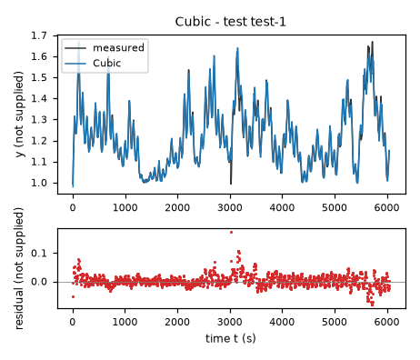
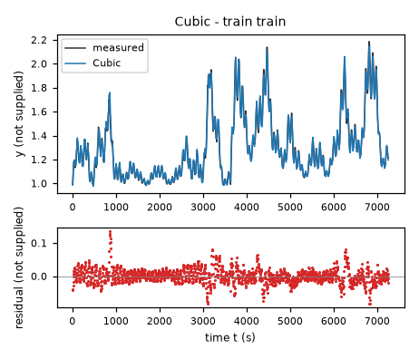
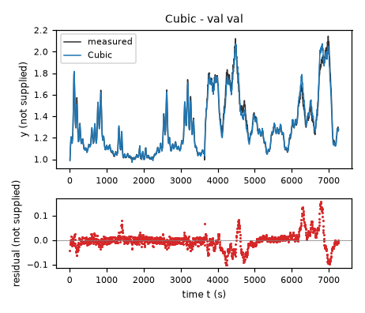
| Data | Trajectory | Scored samples | RMSE | NRMSE | R² | Failure |
|---|---|---|---|---|---|---|
| training data | train | 1451 of 1451 | 0.02333 | 0.08945 | 0.992 | none |
| validation data | val | 1453 of 1453 | 0.03338 | 0.1271 | 0.9838 | none |
| test data | test-1 | 1209 of 1209 | 0.02177 | 0.1562 | 0.9756 | none |
RMSE of y; NRMSE = RMSE / σ and R² = 1 − SSE / Σ(y[k] − μ)², with μ and σ the mean and the population standard deviation of the measured output on the scored samples.
p0 = -0.02724 unknown (fitted), p1 = -0.04442 unknown (fitted), p2 = 0.01538 unknown (fitted), p3 = 0.008683 unknown (fitted), p4 = 0.01048 unknown (fitted), p5 = 0.002194 unknown (fitted), p6 = 6.464e-05 unknown (fitted), p7 = 0.07686 unknown (fitted), p8 = 0.01167 unknown (fitted), p9 = 0.06326 unknown (fitted), p10 = -0.00492 unknown (fitted), p11 = 0.008981 unknown (fitted), p12 = -0.0608 unknown (fitted), yc = 1.3 unknown (fixed), ys = 0.3 unknown (fixed), uc = 60 unknown (fixed), us = 20 unknown (fixed), vc = 18 unknown (fixed), vs = 7 unknown (fixed), kL = 1.1 unknown (fixed), kM = 1.4 unknown (fixed), kH = 1.7 unknown (fixed)y: 0.0246 · validation error: 0.03504 · test error: 0.0226Equations as written in the model file
dy = p0*1 + p1*((y-yc)/ys) + p2*((x1-uc)/us) + p3*((x2-vc)/vs) + p4*((y-yc)/ys)*((x1-uc)/us) + p5*((x1-uc)/us)**2 + p6*((x2-vc)/vs)**2 + p7*Max(y-kL,0) + p8*Max(y-kM,0) + p9*Max(y-kH,0) + p10*((x1-uc)/us)*Max(y-kL,0) + p11*((x1-uc)/us)*Max(y-kM,0) + p12*((x1-uc)/us)*Max(y-kH,0)
Equations with the values substituted
Every parameter is replaced by its value with 4 significant digits.
Parameters and estimation
| Name | Value | Unit | Type | Description |
|---|---|---|---|---|
p0 | -0.0272436 | unknown | fitted | Coefficient of 1; controls this basis contribution to dy. Estimated jointly in the final simulation-error fit; not fixed from another candidate. |
p1 | -0.0444226 | unknown | fitted | Coefficient of ; controls this basis contribution to dy. Estimated jointly in the final simulation-error fit; not fixed from another candidate. |
p2 | 0.0153779 | unknown | fitted | Coefficient of ; controls this basis contribution to dy. Estimated jointly in the final simulation-error fit; not fixed from another candidate. |
p3 | 0.00868302 | unknown | fitted | Coefficient of ; controls this basis contribution to dy. Estimated jointly in the final simulation-error fit; not fixed from another candidate. |
p4 | 0.0104848 | unknown | fitted | Coefficient of ; controls this basis contribution to dy. Estimated jointly in the final simulation-error fit; not fixed from another candidate. |
p5 | 0.00219431 | unknown | fitted | Coefficient of ; controls this basis contribution to dy. Estimated jointly in the final simulation-error fit; not fixed from another candidate. |
p6 | 6.4643e-05 | unknown | fitted | Coefficient of ; controls this basis contribution to dy. Estimated jointly in the final simulation-error fit; not fixed from another candidate. |
p7 | 0.0768603 | unknown | fitted | Coefficient of ; controls this basis contribution to dy. Estimated jointly in the final simulation-error fit; not fixed from another candidate. |
p8 | 0.0116669 | unknown | fitted | Coefficient of ; controls this basis contribution to dy. Estimated jointly in the final simulation-error fit; not fixed from another candidate. |
p9 | 0.063257 | unknown | fitted | Coefficient of ; controls this basis contribution to dy. Estimated jointly in the final simulation-error fit; not fixed from another candidate. |
p10 | -0.00492042 | unknown | fitted | Coefficient of ; controls this basis contribution to dy. Estimated jointly in the final simulation-error fit; not fixed from another candidate. |
p11 | 0.00898067 | unknown | fitted | Coefficient of ; controls this basis contribution to dy. Estimated jointly in the final simulation-error fit; not fixed from another candidate. |
p12 | -0.0608024 | unknown | fitted | Coefficient of ; controls this basis contribution to dy. Estimated jointly in the final simulation-error fit; not fixed from another candidate. |
yc | 1.3 | unknown | fixed | Center for y, chosen as a convenient round value near the training mean, not response-fitted. |
ys | 0.3 | unknown | fixed | Scale for y, chosen as a convenient round spread from inspection of data/train.csv, not response-fitted. |
uc | 60 | unknown | fixed | Center for x1, chosen as a convenient round value near the training mean, not response-fitted. |
us | 20 | unknown | fixed | Scale for x1, chosen as a convenient round spread from inspection of data/train.csv, not response-fitted. |
vc | 18 | unknown | fixed | Center for x2, chosen as a convenient round value near the training mean, not response-fitted. |
vs | 7 | unknown | fixed | Scale for x2, chosen as a convenient round spread from inspection of data/train.csv, not response-fitted. |
kL | 1.1 | unknown | fixed | Lower state knot, fixed by inspecting the training state range, not optimized. |
kM | 1.4 | unknown | fixed | Middle state knot, fixed by inspecting the training state range, not optimized. |
kH | 1.7 | unknown | fixed | Upper state knot, fixed by inspecting the training state range, not optimized. |
- Criterion minimized
Minimize the sum of squared free-running simulated-minus-observed
yerrors on both supplied trajectories, excluding each initial sample. Classical RK4 uses a step of 5 s and constant logged inputs per step, with no replacement of simulated states by later observations. This matches the scored variable and integration convention; equal row weights are used because no measurement variances are supplied. The derivative training fit supplies initialization, not the final criterion.- Data
Initialization: all 1452 rows in data/train.csv, one trajectory, using
dyas target. Structural checks use all 1454 rows of the separate data/val.csv trajectory. Final coefficient fit uses both files, retaining their separate initial conditions: 1451 and 1453 post-initialyresiduals, respectively. No rows are arbitrarily discarded; the first state of each file is an initial condition, and the last input does not drive a scored subsequent sample. Validation is therefore used for selection and final estimation, not claimed as an independent final test.- Method
Ordinary least squares on every derivative row in data/train.csv using numpy.linalg.lstsq estimated all thirteen basis coefficients together. No starting values are needed for this linear solve. Those estimates, stored in hinge_results.json under hinge_state.ols and reproduced by fit_hinges.py, form the numerical starting vector below. Final step: all fitted parameters, including shape parameters, were estimated together by bounded nonlinear least squares (scipy.optimize.least_squares, default method trf, loss linear). Analytical state and parameter partial derivatives were generated with sympy.lambdify; RK4 sensitivity recurrences supply the trajectory Jacobian. This is used rather than derivative-only fitting because the evaluation is a free-running state simulation. Starting values, in parameter-table order, are
[-0.023716908045236844, -0.038404700801019334, 0.013430351102202092, 0.007422556611071981, 0.009478269373724927, 0.0016383707227703645, 0.000320464428606837, 0.0649077233215547, 0.01699011422987478, 0.0011186106618815048, -0.0008276376994384846, -0.003922822622249111, -0.003468738432283574], with the heterogeneous units given in the parameter table. Lower and upper bound vectors are[-1, -1, -1, -1, -1, -1, -1, -1, -1, -1, -1, -1, -1]and[1, 1, 1, 1, 1, 1, 1, 1, 1, 1, 1, 1, 1]in those same units. The broad coefficient bounds prevent explosive iterates; shape bounds preserve the chosen family. Settings: , , , ,x_scale = "jac". The method is deterministic and uses no random seed. scipy.optimize.least_squares API documentation, SciPy v1.18.0 manual, was checked online for the trust-region reflective method; actual installed SciPy is 1.18.1. A local optimum, not a global guarantee, is obtained. fit_final.py writes all final values; make_submission.py formats the candidate.- Script
fit_final.py
The agent's explanation
Continuous piecewise-linear regression spline in the state with input interactions and quadratic input forcing. Related hinge-basis reference: J. H. Friedman, Multivariate Adaptive Regression Splines, Annals of Statistics, 1991; cited from memory, bibliographic source not checked. This fit does not use the adaptive MARS algorithm: its knots are fixed.
The state y, inputs x1 and x2, and derivative dy have unspecified physical units; time is in s. No physical interpretation is assumed. The fixed parameters yc and ys center and scale y; uc and us center and scale x1; vc and vs center and scale x2. Their ratios are dimensionless. The fixed knots kL, kM and kH switch on , and . These continuous hinges alter feedback slopes in different state regions. Multiplication by the normalized input lets these slope changes depend on x1. Quadratic input terms allow curved forcing. Each fitted coefficient multiplies the basis term given in its description.
After smooth polynomial fits, state-range residuals motivated an alternative local slope representation. The hinge operators and knots were a hand-chosen hypothesis, based on the observed training range; the derivative fitting and simulation comparisons evaluated it. Input-only hinges were also tested and were weaker. No automated knot search was used. This piecewise family supplies an alternative to global polynomial curvature.
The knots are not identified physical thresholds. Feedback slopes can be noncontracting at some observed points, and the far-state linear extensions need not be valid. The derivative is continuous but its state slope is discontinuous at the knots. Residuals remain temporally structured: in the final fit the validation derivative-residual lag-one correlation is 0.498 and its correlation with the next x2 increment is 0.624 (both dimensionless, computed on data/val.csv). That increment is diagnostic only, never a model argument. This may reflect omitted dynamics or timing; causation cannot be determined. Final refit RMSE on data/train.csv is 0.024597 and on data/val.csv is 0.035035, in the unspecified units of y; these are in-sample after refitting. No test performance is known. The observed combined envelope is approximately , , and , all in their respective unspecified units; independently combining those extrema is not necessarily supported by either trajectory.
Plots of simulated and measured y, and errors per trajectory
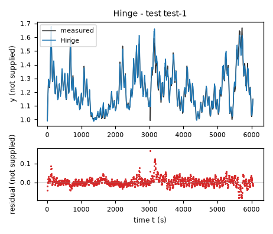
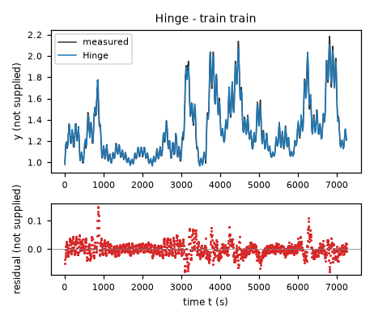
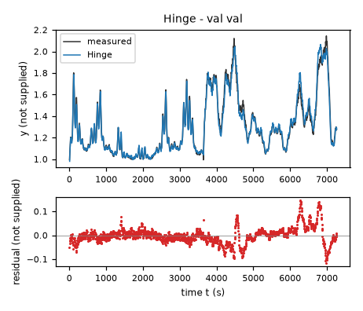
| Data | Trajectory | Scored samples | RMSE | NRMSE | R² | Failure |
|---|---|---|---|---|---|---|
| training data | train | 1451 of 1451 | 0.0246 | 0.09433 | 0.9911 | none |
| validation data | val | 1453 of 1453 | 0.03504 | 0.1335 | 0.9822 | none |
| test data | test-1 | 1209 of 1209 | 0.0226 | 0.1622 | 0.9737 | none |
RMSE of y; NRMSE = RMSE / σ and R² = 1 − SSE / Σ(y[k] − μ)², with μ and σ the mean and the population standard deviation of the measured output on the scored samples.
p0 = -0.01196 unknown (fitted), p1 = -0.02197 unknown (fitted), p2 = 0.01517 unknown (fitted), p3 = 0.007709 unknown (fitted), p4 = 0.01421 unknown (fitted), p5 = 0.0005428 unknown (fitted), p6 = 0.001441 unknown (fitted), p7 = 0.0004676 unknown (fitted), p8 = 0.25 (fitted), p9 = -0.1723 (fitted), p10 = 0.1178 (fitted), yc = 1.3 unknown (fixed), ys = 0.3 unknown (fixed), uc = 60 unknown (fixed), us = 20 unknown (fixed), vc = 18 unknown (fixed), vs = 7 unknown (fixed), dmin = 0.25 (fixed)y: 0.02486 · validation error: 0.03711 · test error: 0.02298Equations as written in the model file
dy = (p0 + p1*((y-yc)/ys) + p2*((x1-uc)/us) + p3*((x2-vc)/vs) + p4*((y-yc)/ys)*((x1-uc)/us) + p5*((x1-uc)/us)**2 + p6*((x2-vc)/vs)**2 + p7*((x1-uc)/us)*((x2-vc)/vs))/Max(1 + p8*((y-yc)/ys) + p9*((x1-uc)/us) + p10*((x2-vc)/vs),dmin)
Equations with the values substituted
Every parameter is replaced by its value with 4 significant digits.
Parameters and estimation
| Name | Value | Unit | Type | Description |
|---|---|---|---|---|
p0 | -0.0119635 | unknown | fitted | Numerator coefficient of 1. Estimated jointly in the final simulation-error fit; not fixed from another candidate. |
p1 | -0.0219675 | unknown | fitted | Numerator coefficient of . Estimated jointly in the final simulation-error fit; not fixed from another candidate. |
p2 | 0.0151655 | unknown | fitted | Numerator coefficient of . Estimated jointly in the final simulation-error fit; not fixed from another candidate. |
p3 | 0.00770942 | unknown | fitted | Numerator coefficient of . Estimated jointly in the final simulation-error fit; not fixed from another candidate. |
p4 | 0.014207 | unknown | fitted | Numerator coefficient of . Estimated jointly in the final simulation-error fit; not fixed from another candidate. |
p5 | 0.000542846 | unknown | fitted | Numerator coefficient of . Estimated jointly in the final simulation-error fit; not fixed from another candidate. |
p6 | 0.0014413 | unknown | fitted | Numerator coefficient of . Estimated jointly in the final simulation-error fit; not fixed from another candidate. |
p7 | 0.00046762 | unknown | fitted | Numerator coefficient of . Estimated jointly in the final simulation-error fit; not fixed from another candidate. |
p8 | 0.25 | - | fitted | Denominator coefficient of ; changes the effective rate and curvature. Estimated jointly in the final simulation-error fit; not fixed from another candidate. |
p9 | -0.172339 | - | fitted | Denominator coefficient of ; changes the effective rate and curvature. Estimated jointly in the final simulation-error fit; not fixed from another candidate. |
p10 | 0.117846 | - | fitted | Denominator coefficient of ; changes the effective rate and curvature. Estimated jointly in the final simulation-error fit; not fixed from another candidate. |
yc | 1.3 | unknown | fixed | Center for y, chosen as a convenient round value near the training mean, not response-fitted. |
ys | 0.3 | unknown | fixed | Scale for y, chosen as a convenient round spread from inspection of data/train.csv, not response-fitted. |
uc | 60 | unknown | fixed | Center for x1, chosen as a convenient round value near the training mean, not response-fitted. |
us | 20 | unknown | fixed | Scale for x1, chosen as a convenient round spread from inspection of data/train.csv, not response-fitted. |
vc | 18 | unknown | fixed | Center for x2, chosen as a convenient round value near the training mean, not response-fitted. |
vs | 7 | unknown | fixed | Scale for x2, chosen as a convenient round spread from inspection of data/train.csv, not response-fitted. |
dmin | 0.25 | - | fixed | Dimensionless denominator floor chosen to remove poles; not optimized. It is a safeguard rather than a fitted physical saturation. |
- Criterion minimized
Minimize the sum of squared free-running simulated-minus-observed
yerrors on both supplied trajectories, excluding each initial sample. Classical RK4 uses a step of 5 s and constant logged inputs per step, with no replacement of simulated states by later observations. This matches the scored variable and integration convention; equal row weights are used because no measurement variances are supplied. The derivative training fit supplies initialization, not the final criterion.- Data
Initialization: all 1452 rows in data/train.csv, one trajectory, using
dyas target. Structural checks use all 1454 rows of the separate data/val.csv trajectory. Final coefficient fit uses both files, retaining their separate initial conditions: 1451 and 1453 post-initialyresiduals, respectively. No rows are arbitrarily discarded; the first state of each file is an initial condition, and the last input does not drive a scored subsequent sample. Validation is therefore used for selection and final estimation, not claimed as an independent final test.- Method
All eleven coefficients were first estimated together on every derivative row of data/train.csv by scipy.optimize.least_squares with method trf, linear least-squares loss, two-point numerical derivative Jacobian, x_scale=jac, max_nfev=500 and ftol=xtol=gtol=1e-9. The training fit began at [0,-0.015,0.012,0.008,0.006,0.002,0.001,0,0.1,0,0], with bounds [-1,1] on numerator coefficients and [-0.25,0.25] on denominator coefficients; the wide numerator bounds exclude explosive iterates and the denominator bounds discourage extreme curvature. fit_nonlinear.py reproduces that fit. The derivative solution in nonlinear_results.json under rational_all.derivative supplies the numerical starting vector below. The final floor is part of fit_final.py. Final step: all fitted parameters, including shape parameters, were estimated together by bounded nonlinear least squares (scipy.optimize.least_squares, default method trf, loss linear). Analytical state and parameter partial derivatives were generated with sympy.lambdify; RK4 sensitivity recurrences supply the trajectory Jacobian. This is used rather than derivative-only fitting because the evaluation is a free-running state simulation. Starting values, in parameter-table order, are
[-0.010550849499927961, -0.019784716508730996, 0.01350160497818385, 0.006661866541854366, 0.013084175681460185, 0.00026481120711304204, 0.0011287964826540398, -0.00010420195791167397, 0.1726891618417374, -0.22150317730163713, 0.13316693877063804], with the heterogeneous units given in the parameter table. Lower and upper bound vectors are[-1, -1, -1, -1, -1, -1, -1, -1, -0.25, -0.25, -0.25]and[1, 1, 1, 1, 1, 1, 1, 1, 0.25, 0.25, 0.25]in those same units. The broad coefficient bounds prevent explosive iterates; shape bounds preserve the chosen family. Settings: , , , ,x_scale = "jac". The method is deterministic and uses no random seed. scipy.optimize.least_squares API documentation, SciPy v1.18.0 manual, was checked online for the trust-region reflective method; actual installed SciPy is 1.18.1. A local optimum, not a global guarantee, is obtained. fit_final.py writes all final values; make_submission.py formats the candidate.- Script
fit_final.py
The agent's explanation
Guarded multivariate rational regression (a Padé-type numerator/denominator approximation, not a Taylor-matched Padé approximant). Reference for rational approximations: G. A. Baker Jr. and P. Graves-Morris, Padé Approximants, second edition, 1996; cited from memory, bibliographic source not checked.
The state y, inputs x1 and x2, and derivative dy have unspecified physical units; time is in s. No physical interpretation is assumed. The fixed parameters yc and ys center and scale y; uc and us center and scale x1; vc and vs center and scale x2. Their ratios are dimensionless. The coefficients p0 through p7 control the numerator forcing and state-input interactions, as specified in their parameter descriptions. The coefficients p8, p9 and p10 modulate the denominator with normalized state and inputs, allowing curvature without higher-order numerator terms. The fixed dimensionless dmin prevents division by zero. No term is assigned a physical mechanism.
Quadratic polynomial residuals and the improvement from inverse-state fits motivated testing rational curvature. A quadratic numerator and affine denominator were hand-chosen, then compared against polynomial and transformed-state models. A denominator floor was added as an explicit extrapolation safeguard, not learned from observations.
The floor removes a numerical pole but cannot justify the extrapolated response. The denominator state coefficient reaches its upper bound, indicating that this particular curvature constraint is active. Despite negative observed state slopes, stability over arbitrary inputs is unproved. Residuals remain temporally structured: in the final fit the validation derivative-residual lag-one correlation is 0.432 and its correlation with the next x2 increment is 0.678 (both dimensionless, computed on data/val.csv). That increment is diagnostic only, never a model argument. This may reflect omitted dynamics or timing; causation cannot be determined. Final refit RMSE on data/train.csv is 0.024865 and on data/val.csv is 0.037114, in the unspecified units of y; these are in-sample after refitting. No test performance is known. The observed combined envelope is approximately , , and , all in their respective unspecified units; independently combining those extrema is not necessarily supported by either trajectory.
Plots of simulated and measured y, and errors per trajectory
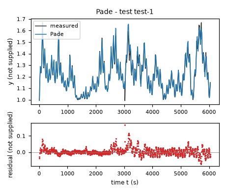
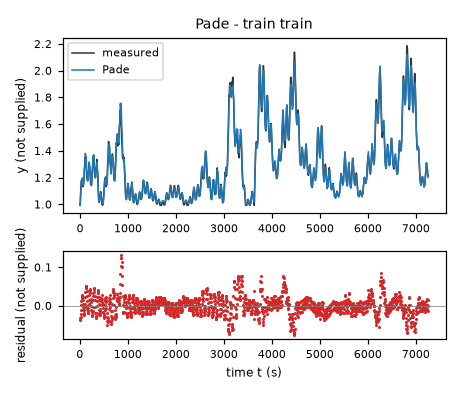
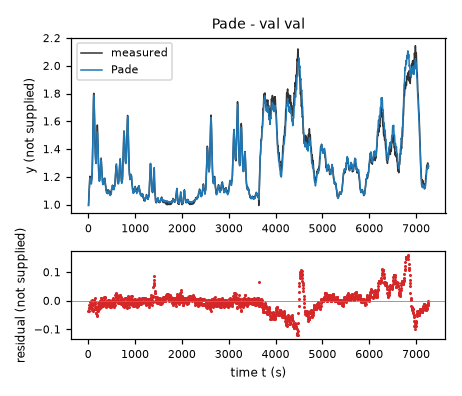
| Data | Trajectory | Scored samples | RMSE | NRMSE | R² | Failure |
|---|---|---|---|---|---|---|
| training data | train | 1451 of 1451 | 0.02486 | 0.09536 | 0.9909 | none |
| validation data | val | 1453 of 1453 | 0.03711 | 0.1414 | 0.98 | none |
| test data | test-1 | 1209 of 1209 | 0.02298 | 0.1649 | 0.9728 | none |
RMSE of y; NRMSE = RMSE / σ and R² = 1 − SSE / Σ(y[k] − μ)², with μ and σ the mean and the population standard deviation of the measured output on the scored samples.
p0 = -0.03464 unknown (fitted), p1 = -0.03433 unknown (fitted), p2 = 0.0253 unknown (fitted), p3 = 0.008788 unknown (fitted), p4 = 0.01518 unknown (fitted), p5 = 0.001966 unknown (fitted), p6 = 2.408e-05 unknown (fitted), p7 = 0.7722 unknown (fitted), uc = 60 unknown (fixed), us = 20 unknown (fixed), vc = 18 unknown (fixed), vs = 7 unknown (fixed), logfloor = 0.02 unknown (fixed), yref = 1 unknown (fixed)y: 0.02451 · validation error: 0.03715 · test error: 0.0237Equations as written in the model file
dy = p0*1 + p1*log(Max(y-p7,logfloor)/yref) + p2*((x1-uc)/us) + p3*((x2-vc)/vs) + p4*log(Max(y-p7,logfloor)/yref)*((x1-uc)/us) + p5*((x1-uc)/us)**2 + p6*((x2-vc)/vs)**2
Equations with the values substituted
Every parameter is replaced by its value with 4 significant digits.
Parameters and estimation
| Name | Value | Unit | Type | Description |
|---|---|---|---|---|
p0 | -0.0346389 | unknown | fitted | Coefficient of 1. Estimated jointly in the final simulation-error fit; not fixed from another candidate. |
p1 | -0.0343301 | unknown | fitted | Coefficient of . Estimated jointly in the final simulation-error fit; not fixed from another candidate. |
p2 | 0.0252994 | unknown | fitted | Coefficient of . Estimated jointly in the final simulation-error fit; not fixed from another candidate. |
p3 | 0.00878831 | unknown | fitted | Coefficient of . Estimated jointly in the final simulation-error fit; not fixed from another candidate. |
p4 | 0.0151788 | unknown | fitted | Coefficient of . Estimated jointly in the final simulation-error fit; not fixed from another candidate. |
p5 | 0.00196578 | unknown | fitted | Coefficient of . Estimated jointly in the final simulation-error fit; not fixed from another candidate. |
p6 | 2.40753e-05 | unknown | fitted | Coefficient of . Estimated jointly in the final simulation-error fit; not fixed from another candidate. |
p7 | 0.772182 | unknown | fitted | Fitted state offset inside , controls state-feedback curvature. Estimated jointly in the final simulation-error fit; not fixed from another candidate. |
uc | 60 | unknown | fixed | Center for x1, chosen as a convenient round value near the training mean, not response-fitted. |
us | 20 | unknown | fixed | Scale for x1, chosen as a convenient round spread from inspection of data/train.csv, not response-fitted. |
vc | 18 | unknown | fixed | Center for x2, chosen as a convenient round value near the training mean, not response-fitted. |
vs | 7 | unknown | fixed | Scale for x2, chosen as a convenient round spread from inspection of data/train.csv, not response-fitted. |
logfloor | 0.02 | unknown | fixed | State-gap floor fixed below the observed fitted state gap to make the logarithm defined; not response-fitted. |
yref | 1 | unknown | fixed | Reference state scale fixed to one raw state unit to make the logarithm argument dimensionless; not response-fitted. |
- Criterion minimized
Minimize the sum of squared free-running simulated-minus-observed
yerrors on both supplied trajectories, excluding each initial sample. Classical RK4 uses a step of 5 s and constant logged inputs per step, with no replacement of simulated states by later observations. This matches the scored variable and integration convention; equal row weights are used because no measurement variances are supplied. The derivative training fit supplies initialization, not the final criterion.- Data
Initialization: all 1452 rows in data/train.csv, one trajectory, using
dyas target. Structural checks use all 1454 rows of the separate data/val.csv trajectory. Final coefficient fit uses both files, retaining their separate initial conditions: 1451 and 1453 post-initialyresiduals, respectively. No rows are arbitrarily discarded; the first state of each file is an initial condition, and the last input does not drive a scored subsequent sample. Validation is therefore used for selection and final estimation, not claimed as an independent final test.- Method
All eight parameters were first estimated together on all derivative rows in data/train.csv by scipy.optimize.least_squares, method trf, linear loss, two-point numerical derivative Jacobian, x_scale=jac, max_nfev=500 and ftol=xtol=gtol=1e-9. The derivative fit started at [0,-0.05,0,0.007,0.025,0,0.001,0.5]. Coefficients were bounded in [-5,5] and the offset in [-5,0.97], below the smallest observed state, to avoid a logarithmic pole. fit_more.py reproduces this fit; the more_results.json shift_log.derivative values are the numerical starting vector below. The final floored expression is fitted by fit_final.py. Final step: all fitted parameters, including shape parameters, were estimated together by bounded nonlinear least squares (scipy.optimize.least_squares, default method trf, loss linear). Analytical state and parameter partial derivatives were generated with sympy.lambdify; RK4 sensitivity recurrences supply the trajectory Jacobian. This is used rather than derivative-only fitting because the evaluation is a free-running state simulation. Starting values, in parameter-table order, are
[-0.025412691739531635, -0.04628901161329144, 0.021313093632479484, 0.007518635572580101, 0.023242277611194823, 0.0013783171022108316, 0.0006090391006168314, 0.5588155602843187], with the heterogeneous units given in the parameter table. Lower and upper bound vectors are[-5, -5, -5, -5, -5, -5, -5, -5]and[5, 5, 5, 5, 5, 5, 5, 0.97]in those same units. The broad coefficient bounds prevent explosive iterates; shape bounds preserve the chosen family. Settings: , , , ,x_scale = "jac". The method is deterministic and uses no random seed. scipy.optimize.least_squares API documentation, SciPy v1.18.0 manual, was checked online for the trust-region reflective method; actual installed SciPy is 1.18.1. A local optimum, not a global guarantee, is obtained. fit_final.py writes all final values; make_submission.py formats the candidate.- Script
fit_final.py
The agent's explanation
Shifted-logarithmic nonlinear state-feedback regression with quadratic input response. This is an empirical transformed-state family, not a claimed physical law. Prediction-error identification reference: L. Ljung, System Identification: Theory for the User, second edition, 1999; cited from memory, bibliographic source not checked.
The state y, inputs x1 and x2, and derivative dy have unspecified physical units; time is in s. No physical interpretation is assumed. The fixed parameters uc, us, vc and vs normalize the inputs. The fitted parameter p7 shifts the state before the logarithm; the fixed logfloor bounds the state gap and yref supplies its reference scale. The term gives nonlinear feedback that changes most rapidly near the offset. Its interaction with changes feedback with x1. The remaining coefficients control drift and linear or quadratic input forcing.
Inverse and logarithmic state transforms improved the restricted polynomial baseline. A free logarithmic offset was a hand-chosen curvature hypothesis, tested against shifted inverse and square-root transforms. The shifted-log model was retained as a compact alternative. The state-gap floor was added to avoid an undefined logarithm below the fitted domain; it is not evidence of saturation.
The offset is a shape parameter, not a physical zero. The floor defines a mathematical continuation only. Below that floor feedback curvature is lost; outside the observed input region feedback can change sign. Unknown units prevent assigning a physical meaning to the logarithm. Residuals remain temporally structured: in the final fit the validation derivative-residual lag-one correlation is 0.524 and its correlation with the next x2 increment is 0.619 (both dimensionless, computed on data/val.csv). That increment is diagnostic only, never a model argument. This may reflect omitted dynamics or timing; causation cannot be determined. Final refit RMSE on data/train.csv is 0.024507 and on data/val.csv is 0.037152, in the unspecified units of y; these are in-sample after refitting. No test performance is known. The observed combined envelope is approximately , , and , all in their respective unspecified units; independently combining those extrema is not necessarily supported by either trajectory.
Plots of simulated and measured y, and errors per trajectory
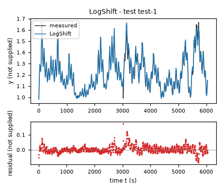
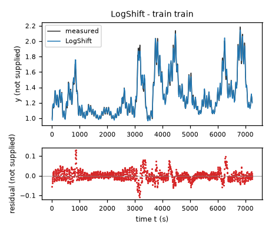
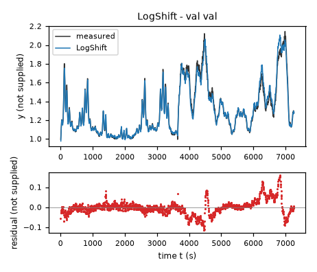
| Data | Trajectory | Scored samples | RMSE | NRMSE | R² | Failure |
|---|---|---|---|---|---|---|
| training data | train | 1451 of 1451 | 0.02451 | 0.09398 | 0.9912 | none |
| validation data | val | 1453 of 1453 | 0.03715 | 0.1415 | 0.98 | none |
| test data | test-1 | 1209 of 1209 | 0.0237 | 0.17 | 0.9711 | none |
RMSE of y; NRMSE = RMSE / σ and R² = 1 − SSE / Σ(y[k] − μ)², with μ and σ the mean and the population standard deviation of the measured output on the scored samples.
p0 = 0.003022 unknown (fitted), p1 = 0.0008789 unknown (fitted), p2 = 0.01035 unknown (fitted), p3 = 0.001 1/s (fitted), p4 = 0.1058 1/s (fitted), p5 = 6.741 (fitted), p6 = 1.161 (fitted), p7 = 0.9449 unknown (fitted), vscale = 18 unknown (fixed), uscale = 60 unknown (fixed)y: 0.03801 · validation error: 0.04194 · test error: 0.03633Equations as written in the model file
dy = p0 + p1*(x2/vscale) + p2*(x2/vscale)**2 - (p3 + p4/(1+exp(p5*(x1/uscale-p6))))*(y-p7)
Equations with the values substituted
Every parameter is replaced by its value with 4 significant digits.
Parameters and estimation
| Name | Value | Unit | Type | Description |
|---|---|---|---|---|
p0 | 0.00302238 | unknown | fitted | Constant drift in dy. Estimated jointly in the final simulation-error fit; not fixed from another candidate. |
p1 | 0.000878884 | unknown | fitted | Linear input forcing coefficient of . Estimated jointly in the final simulation-error fit; not fixed from another candidate. |
p2 | 0.0103547 | unknown | fitted | Quadratic input forcing coefficient of . Estimated jointly in the final simulation-error fit; not fixed from another candidate. |
p3 | 0.001 | 1/s | fitted | Positive lower asymptote of the relaxation rate. Estimated jointly in the final simulation-error fit; not fixed from another candidate. |
p4 | 0.105805 | 1/s | fitted | Positive amplitude of the sigmoid relaxation-rate variation. Estimated jointly in the final simulation-error fit; not fixed from another candidate. |
p5 | 6.74078 | - | fitted | Dimensionless sigmoid steepness in normalized input. Estimated jointly in the final simulation-error fit; not fixed from another candidate. |
p6 | 1.16059 | - | fitted | Dimensionless sigmoid transition location in normalized input. Estimated jointly in the final simulation-error fit; not fixed from another candidate. |
p7 | 0.944881 | unknown | fitted | Reference state for relaxation, estimated jointly with forcing. Estimated jointly in the final simulation-error fit; not fixed from another candidate. |
vscale | 18 | unknown | fixed | Input scale fixed from the convenient training-data scale used in exploratory fits; not response-fitted. |
uscale | 60 | unknown | fixed | Input scale fixed from the convenient training-data scale used in exploratory fits; not response-fitted. |
- Criterion minimized
Minimize the sum of squared free-running simulated-minus-observed
yerrors on both supplied trajectories, excluding each initial sample. Classical RK4 uses a step of 5 s and constant logged inputs per step, with no replacement of simulated states by later observations. This matches the scored variable and integration convention; equal row weights are used because no measurement variances are supplied. The derivative training fit supplies initialization, not the final criterion.- Data
Initialization: all 1452 rows in data/train.csv, one trajectory, using
dyas target. Structural checks use all 1454 rows of the separate data/val.csv trajectory. Final coefficient fit uses both files, retaining their separate initial conditions: 1451 and 1453 post-initialyresiduals, respectively. No rows are arbitrarily discarded; the first state of each file is an initial condition, and the last input does not drive a scored subsequent sample. Validation is therefore used for selection and final estimation, not claimed as an independent final test.- Method
All eight fitted parameters were first estimated together on all derivative rows of data/train.csv by scipy.optimize.least_squares with method trf, linear loss, two-point numerical derivative Jacobian, x_scale=jac, max_nfev=500 and ftol=xtol=gtol=1e-9. Initial vector [0,0.006,0.008,0.01,0.3,3,1,1] represents a small positive relaxation rate and moderate input forcing, not prior physical knowledge. Bounds are the same as the final numerical vectors below; positivity of damping is required and other broad bounds avoid degenerate iterates. fit_nonlinear.py reproduces the derivative fit; nonlinear_results.json sigmoid_rate.derivative supplies the numerical starting vector below. Final step: all fitted parameters, including shape parameters, were estimated together by bounded nonlinear least squares (scipy.optimize.least_squares, default method trf, loss linear). Analytical state and parameter partial derivatives were generated with sympy.lambdify; RK4 sensitivity recurrences supply the trajectory Jacobian. This is used rather than derivative-only fitting because the evaluation is a free-running state simulation. Starting values, in parameter-table order, are
[0.006906497314667024, -0.0002784325533365499, 0.007511643693214463, 0.0010000000000000002, 0.06184475974598969, 7.142561609403914, 1.234131149065114, 0.8527397809100143], with the heterogeneous units given in the parameter table. Lower and upper bound vectors are[-0.1, -0.3, -0.3, 0.001, 0.001, 0.01, 0, 0.5]and[0.1, 0.3, 0.3, 1, 1, 20, 3, 1.1]in those same units. The broad coefficient bounds prevent explosive iterates; shape bounds preserve the chosen family. Settings: , , , ,x_scale = "jac". The method is deterministic and uses no random seed. scipy.optimize.least_squares API documentation, SciPy v1.18.0 manual, was checked online for the trust-region reflective method; actual installed SciPy is 1.18.1. A local optimum, not a global guarantee, is obtained. fit_final.py writes all final values; make_submission.py formats the candidate.- Script
fit_final.py
The agent's explanation
Input-scheduled first-order relaxation model with a logistic rate (a scalar quasi-linear-parameter-varying state equation). The logistic function is used as a mathematical saturation, not as a system-specific physical law. Prediction-error identification reference: L. Ljung, System Identification: Theory for the User, second edition, 1999; cited from memory, bibliographic source not checked.
The state y, inputs x1 and x2, and derivative dy have unspecified physical units; time is in s. No physical interpretation is assumed. The fixed scales uscale and vscale normalize inputs. The coefficients p0, p1 and p2 provide constant, linear and quadratic forcing. The positive parameters p3 and p4 bound the damping rate, while dimensionless p5 and p6 set its steepness and transition location. The reference state p7 sets the relaxation origin. For any real x1, the exact relaxation term has negative state slope because both rate coefficients are positive.
The bilinear fit indicated damping varying strongly with x1. Exponential, polynomial, positive quadratic, and sigmoid rate schedules were explicitly compared. The sigmoid schedule was hand-chosen to preserve positive damping rather than allowing a linear-rate zero crossing. It is less accurate locally than the cubic but offers a deliberately conservative structural alternative.
Only an input-dependent linear state relaxation is available, so complex state curvature and hidden dynamics cannot be represented. The lower rate p3 reaches its lower bound. The model is less accurate on the supplied trajectories but keeps a negative state slope; this does not guarantee RK4 stability for arbitrary step sizes or inputs. Residuals remain temporally structured: in the final fit the validation derivative-residual lag-one correlation is 0.549 and its correlation with the next x2 increment is 0.574 (both dimensionless, computed on data/val.csv). That increment is diagnostic only, never a model argument. This may reflect omitted dynamics or timing; causation cannot be determined. Final refit RMSE on data/train.csv is 0.038009 and on data/val.csv is 0.041943, in the unspecified units of y; these are in-sample after refitting. No test performance is known. The observed combined envelope is approximately , , and , all in their respective unspecified units; independently combining those extrema is not necessarily supported by either trajectory.
Plots of simulated and measured y, and errors per trajectory
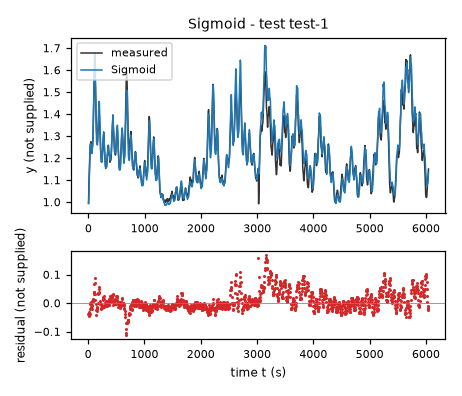
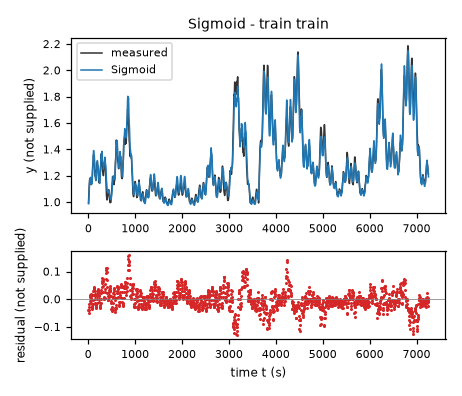
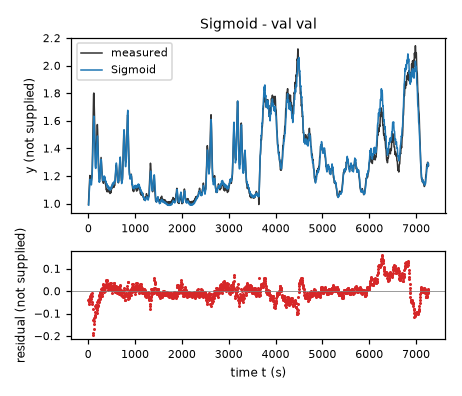
| Data | Trajectory | Scored samples | RMSE | NRMSE | R² | Failure |
|---|---|---|---|---|---|---|
| training data | train | 1451 of 1451 | 0.03801 | 0.1458 | 0.9788 | none |
| validation data | val | 1453 of 1453 | 0.04194 | 0.1598 | 0.9745 | none |
| test data | test-1 | 1209 of 1209 | 0.03633 | 0.2607 | 0.932 | none |
RMSE of y; NRMSE = RMSE / σ and R² = 1 − SSE / Σ(y[k] − μ)², with μ and σ the mean and the population standard deviation of the measured output on the scored samples.
2 Course of the run
The system prompt, TASK.md and FORMAT.md that the agent received are shown on the page of the experiment.
0:00Harness: opening message to the agent
10:09Read TASK.md0.01
5,474 input and 19 output tokens; 0.011 USD for this turn.
TASK.md
output as sent to the agent (3,449 characters, 38 lines)
[TASK.md: 3422 characters] # Task: Identification task qtqm ## 1 System and intended use The task gives no description of the system. The task states no intended use of the model. ## 2 Data `data/train.csv` holds 1452 samples of training data: one trajectory of consecutive samples. `data/val.csv` holds 1454 samples of validation data: one trajectory of consecutive samples. Whether and how you use the validation data is your decision. Row k+1 of a trajectory is the sample that follows row k; different trajectories are separate experiments. The sampling period is T_s = 5 s. | Column | Role | Unit | Training range | Description | |---|---|---|---|---| | `y` | state, scored output | not supplied | not declared | not supplied | | `x1` | input | not supplied | not declared | not supplied | | `x2` | input | not supplied | not declared | not supplied | | `dy` | sampled time derivative of `y` | not supplied | not declared | not supplied | The task does not state the units. The task does not describe the columns. ## 3 What you deliver A candidate is a continuous-time model of one closed-form expression, `dy`: the time derivative of the state `y` as a function of `y`, `x1` and `x2`. The column `dy` is a possible fitting target for the derivative of `y`; it is not an argument of the expressions. `FORMAT.md` states how an expression is written and what it may contain. Write one file per candidate, `models/<label>.json`; `FORMAT.md` describes the file and gives an example. Write also `models/pool.json`, which lists the labels of your candidates in the order in which they are to be evaluated. You can recommend one candidate that you consider the best-performing. `models/pool.json` then names that candidate and gives your reason. Run `python check_submission.py` to check your files: it prints every error with its location, so that you can correct it. At most 10 candidates are evaluated, in the order of `models/pool.json`. Consider various identification approaches, for example physically motivated structures, symbolic-regression search or sparse regression; before fitting, list the approaches and the model families you will try. Build the pool from structurally different model families, not from variations of one form. Examine the residuals of your best candidates and try structures that can represent what they show. Include only candidates you would defend as a model of the system. ## 4 Evaluation The harness, the software that runs this task, evaluates every candidate on test data that you cannot access. For each test trajectory it starts from the first logged state and integrates the expressions with the classical fourth-order Runge–Kutta method, one step per sampling period, with the logged inputs held constant between samples; a simulated state is never replaced by a later measurement. The score is the root mean squared error (RMSE) between simulated and logged `y` over all test samples after the first of each trajectory. An evaluation fails when a value is not finite, when `y` leaves [-100, 100], or when it takes longer than 60 s. ## 5 Limits and completion One round: 60 turns, 3600 s of execution time, 10 USD; a turn is one response of yours. When the files pass the check, send the exact message DONE. If the harness's check of the files then fails, you receive its report and may correct the files once. If a limit ends the round earlier, the complete candidate files are evaluated.
20:11Read FORMAT.md; listed the files0.02
6,270 input and 47 output tokens; 0.013 USD for this turn.
FORMAT.md
output as sent to the agent (8,159 characters, 128 lines)
[FORMAT.md: 8130 characters]
# Model file format
This file is the same for every task. `TASK.md` names the expression keys, the variables and the permitted functions of your task.
## Candidate file `models/<label>.json`
Write one JSON file per candidate. The label is the file name: a letter, then up to 31 letters, digits, `_` or `-`. The file has these fields and no others:
- `expressions`: one expression text per expression key named in `TASK.md`.
- `parameters`: one row per parameter. A parameter is a constant of the expressions that you name yourself, for example `a1`. Its row has
- `name`: the name used in the expressions: a letter, then letters, digits or `_`; it differs from every column, expression key, constant and function name;
- `value`: the numerical value;
- `unit`: the unit; `-` for a dimensionless quantity;
- `type`: `fitted` (estimated from data), `fixed` (chosen or known, not estimated) or `tied` (computed from other parameters by `equation`);
- `description`: what the parameter represents; for a fixed value, where the value comes from and why it was chosen; for a value taken over from another candidate or an earlier fit, from which one;
- `equation`: for a tied parameter only: its defining equation over other parameters, given constants and numbers.
- `estimation`: how the values of the fitted parameters of this candidate were obtained and why in this way; for every fitted parameter it must be clear how its value was found. Write the record for this candidate model, not for the run as a whole: its own criterion, data, method and starting values, with the reasons that apply to this candidate. The record has
- `criterion`: what was minimized, on which variable, and why this criterion;
- `data`: the files, trajectories or rows used, and the reason when some were left out;
- `method`: how the values were estimated: the estimation method by its established name and the software function, and why this method and not another; the starting values as numbers, or the statement that the method needs none, and why these starting values; whether all fitted parameters were estimated together in one step and, if not, which parameters were estimated in which step, with which criterion, and why; the seeds where they apply;
- `script`: the file in the working directory that reproduces the values.
- `discussion`: four texts, in this order:
- `family`: the model family by its established name, with a reference where you know one;
- `interpretation`: what each term represents in the system; describe a term without a known physical meaning by its mathematical effect;
- `origin`: how you arrived at the structure of this expression, as distinct from its parameter values, which `estimation` covers: say which of its terms, variables and operators came from physical reasoning, which from a search and which from a guess, what you tried before, and what made you change it;
- `limitations`: what the data do not determine and where the model is not expected to hold.
- `answers`: only when `TASK.md` asks questions about the candidates: one text per question identifier.
- `predecessor`: only in a later round of an interactive session, and optional: the label of the candidate of the previous pool that this candidate revises.
## Expressions
An expression is a text in Python syntax. It may contain:
- the variables that `TASK.md` names as the arguments of the expression;
- your parameters, each with a row in `parameters`;
- the constants `pi` and `E`, the given constants that `TASK.md` lists, and numbers;
- these operators and functions, unless `TASK.md` states another list: `+` `-` `*` `/` `**` `sin` `cos` `tan` `asin` `acos` `atan` `atan2` `sinh` `cosh` `tanh` `exp` `log` `sqrt` `Abs` `sign` `Min` `Max` `Piecewise`.
`**` is the power (not `^`), and `log` is the natural logarithm. `Piecewise` takes pairs `(value, condition)` and ends with a pair `(value, True)`, for example `Piecewise((a1*q, (q > 0) & (q < 1)), (0, True))`. A condition is a comparison `<`, `<=`, `>`, `>=`, `Eq(a, b)` or `Ne(a, b)`, each in parentheses, combined with `&`, `|` and `~`.
A number that fixes the form of the expression, such as 2 in `q**2`, may be written directly. A value obtained by estimation is a parameter with a row in `parameters`, never a number written into the expression. Every parameter row must be used in an expression or in a tie equation.
## Pool file `models/pool.json`
- `order`: the candidate labels in your order;
- `recommended`: the label of the candidate you recommend, or `null` when you recommend none;
- `reason`: why you recommend this candidate, or why you recommend none.
Every file `models/<label>.json` must be listed in `order`.
## Example
An invented task with one input `q` and one output `z`, whose expression key is `z`. The example shows the format only: its model is not a proposal, and its discussion texts say what your texts must contain.
`models/M01.json`:
```json
{
"expressions": {
"z": "a1*q + b1*q**2/n0"
},
"parameters": [
{
"name": "a1",
"value": 0.5,
"unit": "-",
"type": "fitted",
"description": "coefficient of `q`"
},
{
"name": "n0",
"value": 2.0,
"unit": "-",
"type": "fixed",
"description": "normalisation of the quadratic term; chosen as the largest value of `q` in the training data, so that `b1` has the scale of `a1`"
},
{
"name": "b1",
"value": 1.0,
"unit": "-",
"type": "tied",
"equation": "2*a1",
"description": "coefficient of `q**2/n0`, tied to `a1` by the assumption stated in the discussion"
}
],
"estimation": {
"criterion": "sum of squared differences between the expression `z` and the column `z`, because the expression gives `z` directly and no row is known to be more accurate than another",
"data": "data/train.csv, all rows",
"method": "The value of `a1` was estimated by ordinary least squares with numpy.linalg.lstsq. With `b1 = 2*a1` the expression is linear in the one fitted parameter `a1`, so the least-squares solution is obtained directly and an iterative method is not needed; for the same reason the method needs no starting values. `a1` is the only fitted parameter and was estimated in one step. The method uses no random numbers, so that no seed applies.",
"script": "fit_M01.py"
},
"discussion": {
"family": "State the model family by its established name.",
"interpretation": "State what each term represents.",
"origin": "State how you arrived at this expression.",
"limitations": "State what the data do not determine and where the model is not expected to hold."
}
}
```
`models/pool.json`:
```json
{
"order": [
"M01"
],
"recommended": "M01",
"reason": "State why you recommend this candidate, or why you recommend none."
}
```
## Checking
`python check_submission.py` checks every file against these rules and evaluates each expression on the training data. It names each error with its rule. Correct the errors and run it again.
## Writing
- Define every symbol at first use.
- Give every number with its unit and the data it was computed on.
- Name methods by their established names.
- Cite a reference for a model family or a method where one applies. Cite only references you are certain exist, and say when you cite from memory without having checked the source.
- Say what is estimated, what is assumed and what is unknown.
- Give a brief reason for every choice you made: a structure, a criterion, a method, a starting value, a fixed value, a term you removed.
- Write every expression inside a text between backticks, in the syntax of the expressions, for example `a1*q**2`; write it out, do not describe it in words. This holds also for a single parameter, column or expression name, such as `a1`, for a value given to one, such as `a1 = 0.5`, and for a range, such as `0 <= a1 <= 2`. A unit follows outside the backticks; a dimensionless value has no unit and no hyphen after it.
- Describe a term without a known physical meaning by its mathematical effect; do not invent a meaning.
{}output as sent to the agent (189 characters, 9 lines)
[.: 8 entries] data/ models/ FORMAT.md 8130 bytes TASK.md 3424 bytes check_config.json 965 bytes check_submission.py 102476 bytes data/train.csv 105525 bytes data/val.csv 105660 bytes
30:21Wrote plan.md0.04
8,420 input and 310 output tokens (of which 35 reasoning); 0.020 USD for this turn.
reasoning summary (written by the model provider's summarizer; the model's own reasoning is not available)
Assessing data needs
I need to clarify my task. I've got around 31,000 tokens and a timeframe of 3,600 seconds, which gives me some breathing room with roughly 28,000 tokens left. It’s important that I inspect the data before I proceed with any approaches. I'll have to think through how best to fit it all together to ensure everything aligns correctly. Let’s make sure I use my time and token budget wisely!
I will compare affine dynamics, sparse polynomial models, nonlinear input-response models, and state-dependent relaxation models. I will fit against the supplied derivatives first, then compare uninterrupted RK4 simulations on the separate validation trajectory. Residual patterns will guide any additional structures; the system’s physical meaning and units will remain unspecified.
plan.md
file content written (947 characters)
# Identification plan, recorded before fitting The system and units are unspecified. I will investigate: (1) affine continuous-time state-space dynamics; (2) sparse polynomial regression, including interactions of the state `y` and inputs `x1` and `x2`; (3) additive nonlinear input-response models with linear state relaxation, testing saturating and power-law response shapes; (4) state-dependent relaxation or separable nonlinear balance laws if residuals indicate them. These are competing mathematical hypotheses, not physical assertions. Initial fits minimize derivative squared error on `data/train.csv`; uninterrupted fourth-order Runge-Kutta simulation with a sampling period of 5 s and constant inputs per step is checked on `data/val.csv`. Validation is used for structural selection and potentially simulation-error refinement, with all such use recorded. Inspect residuals before selecting the final pool. No test data are accessed.
output as sent to the agent (32 characters, 1 lines)
Wrote 947 characters to plan.md.
40:26Wrote inspect.py0.06
8,750 input and 203 output tokens; 0.020 USD for this turn.
inspect.py
file content written (549 characters)
import numpy as np, pandas as pd
from pathlib import Path
for f in ['train','val']:
d=pd.read_csv('data/'+f+'.csv'); print(f,d.shape);print(d.describe().to_string());print(d.head(12).to_string());print('corr', d.corr().to_string())
y=d.y.to_numpy();dy=d.dy.to_numpy(); step=np.diff(y)/5
print('finite difference vs dy: rmse forward',np.sqrt(np.mean((step-dy[:-1])**2)),'back',np.sqrt(np.mean((step-dy[1:])**2)))
print('input changes',[(x,len(np.unique(d[x])), np.sum(np.diff(d[x])!=0)) for x in ['x1','x2']])
print('last',d.tail().to_string())
output as sent to the agent (35 characters, 1 lines)
Wrote 549 characters to inspect.py.
50:28Ran python inspect.py (exit status 1)0.08
8,973 input and 20 output tokens; 0.018 USD for this turn.
$ python inspect.py
output as sent to the agent (2,174 characters, 33 lines)
[exit status 1]
[stderr]
Traceback (most recent call last):
File "C:\Users\user1\AppData\Local\aspire\agent-env\Lib\site-packages\pandas\compat\numpy\__init__.py", line 38, in <module>
np_long = np.long
^^^^^^^
AttributeError: partially initialized module 'numpy' has no attribute 'long' (most likely due to a circular import)
During handling of the above exception, another exception occurred:
Traceback (most recent call last):
File "C:\Users\user1\AppData\Local\Temp\aspire-runs-blind\ddb511e5434f2e1e\workspace\inspect.py", line 1, in <module>
import numpy as np, pandas as pd
File "C:\Users\user1\AppData\Local\aspire\agent-env\Lib\site-packages\numpy\__init__.py", line 122, in <module>
from numpy.__config__ import show_config
File "C:\Users\user1\AppData\Local\aspire\agent-env\Lib\site-packages\numpy\__config__.py", line 4, in <module>
from numpy._core._multiarray_umath import (
File "C:\Users\user1\AppData\Local\aspire\agent-env\Lib\site-packages\numpy\_core\__init__.py", line 24, in <module>
from . import multiarray
File "C:\Users\user1\AppData\Local\aspire\agent-env\Lib\site-packages\numpy\_core\multiarray.py", line 11, in <module>
from . import _multiarray_umath, overrides
File "C:\Users\user1\AppData\Local\aspire\agent-env\Lib\site-packages\numpy\_core\overrides.py", line 4, in <module>
import inspect
File "C:\Users\user1\AppData\Local\Temp\aspire-runs-blind\ddb511e5434f2e1e\workspace\inspect.py", line 1, in <module>
import numpy as np, pandas as pd
File "C:\Users\user1\AppData\Local\aspire\agent-env\Lib\site-packages\pandas\__init__.py", line 34, in <module>
from pandas.compat import (
File "C:\Users\user1\AppData\Local\aspire\agent-env\Lib\site-packages\pandas\compat\__init__.py", line 28, in <module>
from pandas.compat.numpy import is_numpy_dev
File "C:\Users\user1\AppData\Local\aspire\agent-env\Lib\site-packages\pandas\compat\numpy\__init__.py", line 41, in <module>
np_long = np.int_
^^^^^^^
AttributeError: partially initialized module 'numpy' has no attribute 'int_' (most likely due to a circular import)
60:30Ran ren inspect.py inspect_data.py & python inspect_data.py0.10
9,691 input and 28 output tokens; 0.020 USD for this turn.
$ ren inspect.py inspect_data.py & python inspect_data.py
output as sent to the agent (3,665 characters, 73 lines)
[exit status 0]
train (1452, 4)
y x1 x2 dy
count 1452.000000 1452.000000 1452.000000 1452.000000
mean 1.298163 64.577523 17.903418 0.000036
std 0.260879 18.177046 6.833631 0.006076
min 0.992309 10.307583 0.097345 -0.020900
25% 1.093695 57.980696 12.932027 -0.003375
50% 1.229201 69.451447 18.331697 -0.000049
75% 1.427059 76.736809 23.742245 0.003296
max 2.186718 92.411713 30.796778 0.023952
y x1 x2 dy
0 0.992431 56.277222 0.103498 0.007056
1 1.027712 52.160172 18.899395 0.010865
2 1.082036 48.689106 21.223804 0.005884
3 1.111457 54.997639 23.015125 0.005713
4 1.140023 60.950226 24.108770 0.006128
5 1.170665 57.034481 24.341257 0.001563
6 1.178478 53.030518 23.665775 -0.001660
7 1.170176 58.783981 22.377659 -0.000195
8 1.169200 64.851952 20.676872 0.000781
9 1.173106 61.040573 18.942465 -0.003369
10 1.156260 56.419758 17.527559 -0.003906
11 1.136727 61.498772 16.658049 -0.000855
corr y x1 x2 dy
y 1.000000 0.576059 0.642001 -0.063003
x1 0.576059 1.000000 0.216787 0.207214
x2 0.642001 0.216787 1.000000 0.092273
dy -0.063003 0.207214 0.092273 1.000000
finite difference vs dy: rmse forward 0.0002211321408499036 back 0.0038145035696447974
input changes [('x1', 1452, np.int64(1451)), ('x2', 1444, np.int64(1451))]
last y x1 x2 dy
1447 1.279558 64.754059 21.874235 -0.003565
1448 1.261735 63.197739 20.056547 -0.006543
1449 1.229018 62.830765 17.489325 -0.003247
1450 1.212782 63.781055 18.931917 0.000244
1451 1.214002 65.977844 21.184252 -0.000513
val (1454, 4)
y x1 x2 dy
count 1454.000000 1454.000000 1454.000000 1454.000000
mean 1.306319 63.036614 18.115842 0.000049
std 0.262661 20.452928 5.683909 0.005129
min 0.994018 1.628053 0.083062 -0.019630
25% 1.099005 50.743231 14.566727 -0.002539
50% 1.241104 69.200447 19.234609 0.000000
75% 1.441433 78.820923 22.523403 0.002393
max 2.144479 94.448708 29.071159 0.023708
y x1 x2 dy
0 0.994140 58.444061 0.204358 0.007276
1 1.030519 65.435143 18.151621 0.009888
2 1.079961 70.790749 15.957956 0.005493
3 1.107428 74.028763 14.378026 0.006861
4 1.141732 74.976189 16.945688 0.008863
5 1.186046 73.793022 19.338436 0.003662
6 1.204358 70.946602 17.657644 -0.001563
7 1.196545 67.140427 15.926753 -0.000610
8 1.193493 63.207790 18.366966 0.001172
9 1.199353 59.986385 20.784765 -0.002759
10 1.185558 58.192310 19.118258 -0.003955
11 1.165782 58.312363 17.175755 -0.000757
corr y x1 x2 dy
y 1.000000 0.638022 0.502442 -0.055603
x1 0.638022 1.000000 0.160550 0.202043
x2 0.502442 0.160550 1.000000 0.084172
dy -0.055603 0.202043 0.084172 1.000000
finite difference vs dy: rmse forward 0.0003356334527234 back 0.004360385153706842
input changes [('x1', 1454, np.int64(1453)), ('x2', 1446, np.int64(1453))]
last y x1 x2 dy
1449 1.299457 75.457664 17.650394 0.000195
1450 1.300433 70.614197 17.311335 -0.004273
1451 1.279070 73.429550 17.181469 -0.001904
1452 1.269548 77.994141 17.306061 0.001636
1453 1.277727 74.913918 17.701374 0.001245
70:39Started a helper agent (Independently investigate data/train.csv and data/val.csv for parsimo…)0.13
11,484 input and 204 output tokens (of which 62 reasoning); 0.025 USD for this turn.
reasoning summary (written by the model provider's summarizer; the model's own reasoning is not available)
Investigating tank pH
I'm looking into the pH of the Wiener Hammerstein tank, but I have a few unknowns. The inputs range from 0 to 100 and 0 to 30, but the pH seems to be between 1 and 2. I wonder if I can use a nonlinear model with two heating inputs. It may be best to delegate the exploration of the independent structure to a helper, so I can focus on simulating the derivative regressions.
{
"task": "Independently investigate data/train.csv and data/val.csv for parsimonious closed-form dy=f(y,x1,x2). Read TASK.md FORMAT.md. Do not write models or main scripts; use helper_ prefix files. Focus on derivative-based structure discovery: polynomial sparse regression, transformations/power/saturating effects, residual patterns. Return candidate structures and validation derivative errors and interpretation. No external/test files. Plan already lists affine, sparse polynomial, nonlinear input response, state-dependent relaxation. Note dy appears close to forward increment/5. You may run code but no test access.",
"max_turns": 12
}output as sent to the agent (120 characters, 2 lines)
Helper helper-1 stopped because the turn limit of the helper-1 was reached (12 turns, 0.3842 USD). Its last text: (none)
0:39Harness: helper agent helper-1 started
task-qtqm
0:41Helper agent helper-1: read TASK.md, FORMAT.md0.14
5,047 input and 50 output tokens; 0.011 USD for this turn.
TASK.md
output as sent to the agent (3,449 characters, 38 lines)
[TASK.md: 3422 characters] # Task: Identification task qtqm ## 1 System and intended use The task gives no description of the system. The task states no intended use of the model. ## 2 Data `data/train.csv` holds 1452 samples of training data: one trajectory of consecutive samples. `data/val.csv` holds 1454 samples of validation data: one trajectory of consecutive samples. Whether and how you use the validation data is your decision. Row k+1 of a trajectory is the sample that follows row k; different trajectories are separate experiments. The sampling period is T_s = 5 s. | Column | Role | Unit | Training range | Description | |---|---|---|---|---| | `y` | state, scored output | not supplied | not declared | not supplied | | `x1` | input | not supplied | not declared | not supplied | | `x2` | input | not supplied | not declared | not supplied | | `dy` | sampled time derivative of `y` | not supplied | not declared | not supplied | The task does not state the units. The task does not describe the columns. ## 3 What you deliver A candidate is a continuous-time model of one closed-form expression, `dy`: the time derivative of the state `y` as a function of `y`, `x1` and `x2`. The column `dy` is a possible fitting target for the derivative of `y`; it is not an argument of the expressions. `FORMAT.md` states how an expression is written and what it may contain. Write one file per candidate, `models/<label>.json`; `FORMAT.md` describes the file and gives an example. Write also `models/pool.json`, which lists the labels of your candidates in the order in which they are to be evaluated. You can recommend one candidate that you consider the best-performing. `models/pool.json` then names that candidate and gives your reason. Run `python check_submission.py` to check your files: it prints every error with its location, so that you can correct it. At most 10 candidates are evaluated, in the order of `models/pool.json`. Consider various identification approaches, for example physically motivated structures, symbolic-regression search or sparse regression; before fitting, list the approaches and the model families you will try. Build the pool from structurally different model families, not from variations of one form. Examine the residuals of your best candidates and try structures that can represent what they show. Include only candidates you would defend as a model of the system. ## 4 Evaluation The harness, the software that runs this task, evaluates every candidate on test data that you cannot access. For each test trajectory it starts from the first logged state and integrates the expressions with the classical fourth-order Runge–Kutta method, one step per sampling period, with the logged inputs held constant between samples; a simulated state is never replaced by a later measurement. The score is the root mean squared error (RMSE) between simulated and logged `y` over all test samples after the first of each trajectory. An evaluation fails when a value is not finite, when `y` leaves [-100, 100], or when it takes longer than 60 s. ## 5 Limits and completion One round: 60 turns, 3600 s of execution time, 10 USD; a turn is one response of yours. When the files pass the check, send the exact message DONE. If the harness's check of the files then fails, you receive its report and may correct the files once. If a limit ends the round earlier, the complete candidate files are evaluated.
FORMAT.md
output as sent to the agent (8,159 characters, 128 lines)
[FORMAT.md: 8130 characters]
# Model file format
This file is the same for every task. `TASK.md` names the expression keys, the variables and the permitted functions of your task.
## Candidate file `models/<label>.json`
Write one JSON file per candidate. The label is the file name: a letter, then up to 31 letters, digits, `_` or `-`. The file has these fields and no others:
- `expressions`: one expression text per expression key named in `TASK.md`.
- `parameters`: one row per parameter. A parameter is a constant of the expressions that you name yourself, for example `a1`. Its row has
- `name`: the name used in the expressions: a letter, then letters, digits or `_`; it differs from every column, expression key, constant and function name;
- `value`: the numerical value;
- `unit`: the unit; `-` for a dimensionless quantity;
- `type`: `fitted` (estimated from data), `fixed` (chosen or known, not estimated) or `tied` (computed from other parameters by `equation`);
- `description`: what the parameter represents; for a fixed value, where the value comes from and why it was chosen; for a value taken over from another candidate or an earlier fit, from which one;
- `equation`: for a tied parameter only: its defining equation over other parameters, given constants and numbers.
- `estimation`: how the values of the fitted parameters of this candidate were obtained and why in this way; for every fitted parameter it must be clear how its value was found. Write the record for this candidate model, not for the run as a whole: its own criterion, data, method and starting values, with the reasons that apply to this candidate. The record has
- `criterion`: what was minimized, on which variable, and why this criterion;
- `data`: the files, trajectories or rows used, and the reason when some were left out;
- `method`: how the values were estimated: the estimation method by its established name and the software function, and why this method and not another; the starting values as numbers, or the statement that the method needs none, and why these starting values; whether all fitted parameters were estimated together in one step and, if not, which parameters were estimated in which step, with which criterion, and why; the seeds where they apply;
- `script`: the file in the working directory that reproduces the values.
- `discussion`: four texts, in this order:
- `family`: the model family by its established name, with a reference where you know one;
- `interpretation`: what each term represents in the system; describe a term without a known physical meaning by its mathematical effect;
- `origin`: how you arrived at the structure of this expression, as distinct from its parameter values, which `estimation` covers: say which of its terms, variables and operators came from physical reasoning, which from a search and which from a guess, what you tried before, and what made you change it;
- `limitations`: what the data do not determine and where the model is not expected to hold.
- `answers`: only when `TASK.md` asks questions about the candidates: one text per question identifier.
- `predecessor`: only in a later round of an interactive session, and optional: the label of the candidate of the previous pool that this candidate revises.
## Expressions
An expression is a text in Python syntax. It may contain:
- the variables that `TASK.md` names as the arguments of the expression;
- your parameters, each with a row in `parameters`;
- the constants `pi` and `E`, the given constants that `TASK.md` lists, and numbers;
- these operators and functions, unless `TASK.md` states another list: `+` `-` `*` `/` `**` `sin` `cos` `tan` `asin` `acos` `atan` `atan2` `sinh` `cosh` `tanh` `exp` `log` `sqrt` `Abs` `sign` `Min` `Max` `Piecewise`.
`**` is the power (not `^`), and `log` is the natural logarithm. `Piecewise` takes pairs `(value, condition)` and ends with a pair `(value, True)`, for example `Piecewise((a1*q, (q > 0) & (q < 1)), (0, True))`. A condition is a comparison `<`, `<=`, `>`, `>=`, `Eq(a, b)` or `Ne(a, b)`, each in parentheses, combined with `&`, `|` and `~`.
A number that fixes the form of the expression, such as 2 in `q**2`, may be written directly. A value obtained by estimation is a parameter with a row in `parameters`, never a number written into the expression. Every parameter row must be used in an expression or in a tie equation.
## Pool file `models/pool.json`
- `order`: the candidate labels in your order;
- `recommended`: the label of the candidate you recommend, or `null` when you recommend none;
- `reason`: why you recommend this candidate, or why you recommend none.
Every file `models/<label>.json` must be listed in `order`.
## Example
An invented task with one input `q` and one output `z`, whose expression key is `z`. The example shows the format only: its model is not a proposal, and its discussion texts say what your texts must contain.
`models/M01.json`:
```json
{
"expressions": {
"z": "a1*q + b1*q**2/n0"
},
"parameters": [
{
"name": "a1",
"value": 0.5,
"unit": "-",
"type": "fitted",
"description": "coefficient of `q`"
},
{
"name": "n0",
"value": 2.0,
"unit": "-",
"type": "fixed",
"description": "normalisation of the quadratic term; chosen as the largest value of `q` in the training data, so that `b1` has the scale of `a1`"
},
{
"name": "b1",
"value": 1.0,
"unit": "-",
"type": "tied",
"equation": "2*a1",
"description": "coefficient of `q**2/n0`, tied to `a1` by the assumption stated in the discussion"
}
],
"estimation": {
"criterion": "sum of squared differences between the expression `z` and the column `z`, because the expression gives `z` directly and no row is known to be more accurate than another",
"data": "data/train.csv, all rows",
"method": "The value of `a1` was estimated by ordinary least squares with numpy.linalg.lstsq. With `b1 = 2*a1` the expression is linear in the one fitted parameter `a1`, so the least-squares solution is obtained directly and an iterative method is not needed; for the same reason the method needs no starting values. `a1` is the only fitted parameter and was estimated in one step. The method uses no random numbers, so that no seed applies.",
"script": "fit_M01.py"
},
"discussion": {
"family": "State the model family by its established name.",
"interpretation": "State what each term represents.",
"origin": "State how you arrived at this expression.",
"limitations": "State what the data do not determine and where the model is not expected to hold."
}
}
```
`models/pool.json`:
```json
{
"order": [
"M01"
],
"recommended": "M01",
"reason": "State why you recommend this candidate, or why you recommend none."
}
```
## Checking
`python check_submission.py` checks every file against these rules and evaluates each expression on the training data. It names each error with its rule. Correct the errors and run it again.
## Writing
- Define every symbol at first use.
- Give every number with its unit and the data it was computed on.
- Name methods by their established names.
- Cite a reference for a model family or a method where one applies. Cite only references you are certain exist, and say when you cite from memory without having checked the source.
- Say what is estimated, what is assumed and what is unknown.
- Give a brief reason for every choice you made: a structure, a criterion, a method, a starting value, a fixed value, a term you removed.
- Write every expression inside a text between backticks, in the syntax of the expressions, for example `a1*q**2`; write it out, do not describe it in words. This holds also for a single parameter, column or expression name, such as `a1`, for a value given to one, such as `a1 = 0.5`, and for a range, such as `0 <= a1 <= 2`. A unit follows outside the backticks; a dimensionless value has no unit and no hyphen after it.
- Describe a term without a known physical meaning by its mathematical effect; do not invent a meaning.
0:43Helper agent helper-1: ran python -c "import pandas as pd; a=pd.read_csv('data/train.csv'); b=pd.read_csv('data/val.…0.15
7,905 input and 69 output tokens; 0.017 USD for this turn.
$ python -c "import pandas as pd; a=pd.read_csv('data/train.csv'); b=pd.read_csv('data/val.csv'); print(a.describe().to_string()); print(b.describe().to_string()); print(a.head(12).to_string())"output as sent to the agent (1,675 characters, 32 lines)
[exit status 0]
y x1 x2 dy
count 1452.000000 1452.000000 1452.000000 1452.000000
mean 1.298163 64.577523 17.903418 0.000036
std 0.260879 18.177046 6.833631 0.006076
min 0.992309 10.307583 0.097345 -0.020900
25% 1.093695 57.980696 12.932027 -0.003375
50% 1.229201 69.451447 18.331697 -0.000049
75% 1.427059 76.736809 23.742245 0.003296
max 2.186718 92.411713 30.796778 0.023952
y x1 x2 dy
count 1454.000000 1454.000000 1454.000000 1454.000000
mean 1.306319 63.036614 18.115842 0.000049
std 0.262661 20.452928 5.683909 0.005129
min 0.994018 1.628053 0.083062 -0.019630
25% 1.099005 50.743231 14.566727 -0.002539
50% 1.241104 69.200447 19.234609 0.000000
75% 1.441433 78.820923 22.523403 0.002393
max 2.144479 94.448708 29.071159 0.023708
y x1 x2 dy
0 0.992431 56.277222 0.103498 0.007056
1 1.027712 52.160172 18.899395 0.010865
2 1.082036 48.689106 21.223804 0.005884
3 1.111457 54.997639 23.015125 0.005713
4 1.140023 60.950226 24.108770 0.006128
5 1.170665 57.034481 24.341257 0.001563
6 1.178478 53.030518 23.665775 -0.001660
7 1.170176 58.783981 22.377659 -0.000195
8 1.169200 64.851952 20.676872 0.000781
9 1.173106 61.040573 18.942465 -0.003369
10 1.156260 56.419758 17.527559 -0.003906
11 1.136727 61.498772 16.658049 -0.000855
1:09Helper agent helper-1: wrote helper_discover.py0.19
8,761 input and 1,477 output tokens (of which 59 reasoning); 0.032 USD for this turn.
reasoning summary (written by the model provider's summarizer; the model's own reasoning is not available)
Exploring sklearn functionality
I need to efficiently explore Python's sklearn, but I can't access anything external. My approach will involve fitting polynomial degrees from 1 to 5 for ordinary least squares (OLS) with sparse orthogonal selection and ridge regression for training and validation. I want to include transformations like y/log x and consider if lagging inputs corresponds to a static map. Let’s focus on coding a helper for this analysis and writing a report based on my findings.
helper_discover.py
file content written (3,438 characters)
import numpy as np, pandas as pd, json
from sklearn.preprocessing import PolynomialFeatures
from sklearn.linear_model import OrthogonalMatchingPursuit
from scipy.optimize import least_squares
A=pd.read_csv('data/train.csv'); B=pd.read_csv('data/val.csv'); X=A[['y','x1','x2']].values; V=B[['y','x1','x2']].values; z=A.dy.values; w=B.dy.values
out=[]
def score(name,pred,pars=None,extra=None):
pt,pv=pred; r=z-pt; rv=w-pv
row={'name':name,'train_derivative_RMSE':float(np.sqrt(np.mean(r*r))),'val_derivative_RMSE':float(np.sqrt(np.mean(rv*rv))),'val_bias':float(rv.mean()),'parameters':pars,'extra':extra}
out.append(row); print(name,row['train_derivative_RMSE'],row['val_derivative_RMSE'],pars)
return row
def fit(name,F,G,names):
c=np.linalg.lstsq(F,z,rcond=None)[0]; return score(name,(F@c,G@c),dict(zip(names,c.tolist())))
for dat in [A,B]:
print('increment discrepancy',np.sqrt(np.mean((dat.dy.values[:-1]-np.diff(dat.y)/5)**2)))
mu=X.mean(0); scale=X.std(0); U=(X-mu)/scale; W=(V-mu)/scale
for d in range(1,6):
poly=PolynomialFeatures(d); F=poly.fit_transform(U); G=poly.transform(W); names=poly.get_feature_names_out(['Y','U','V']).tolist()
fit('poly'+str(d),F,G,names)
if d in [2,3,4]:
norm=np.linalg.norm(F,axis=0); Fs=F/norm; Gs=G/norm
for k in [3,5,8,12,16]:
if k>=F.shape[1]:continue
m=OrthogonalMatchingPursuit(n_nonzero_coefs=k,fit_intercept=False).fit(Fs,z); c=m.coef_/norm
score('omp_d%d_k%d'%(d,k),(F@c,G@c),{names[j]:float(c[j]) for j in np.where(c)[0]})
# raw additive/transformed libraries and variable relaxation interactions
for yt in ['y','log','sqrt','square','inv']:
for xt in ['linear','log','sqrt','square','cube','inv','sat']:
def design(T):
y,x1,x2=T.T
yh={'y':y,'log':np.log(y),'sqrt':np.sqrt(y),'square':y*y,'inv':1/y}[yt]
if xt=='linear':h1,h2=x1,x2
if xt=='log':h1,h2=np.log(x1),np.log(x2)
if xt=='sqrt':h1,h2=np.sqrt(x1),np.sqrt(x2)
if xt=='square':h1,h2=x1*x1,x2*x2
if xt=='cube':h1,h2=x1**3,x2**3
if xt=='inv':h1,h2=1/x1,1/x2
if xt=='sat':h1,h2=x1/(20+x1),x2/(10+x2)
return np.stack([np.ones(len(y)),yh,h1,h2],axis=1)
fit('add_'+yt+'_'+xt,design(X),design(V),['one',yt,'x1_'+xt,'x2_'+xt])
# Generalized power additive and interactions: power arguments positive in supplied data
for kind in ['addpower','powrelax','powproduct','expadd','exp_relax']:
def f(p,T):
y,u,v=T.T;u=u/60;v=v/18
if kind=='addpower':return p[0]+p[1]*y**p[4]+p[2]*u**p[5]+p[3]*v**p[6]
if kind=='powrelax':return (p[0]+p[2]*u**p[5]+p[3]*v**p[6]-y**p[4])*np.exp(p[1])
if kind=='powproduct':return p[0]+p[1]*y**p[4]+p[2]*u**p[5]*v**p[6]+p[3]*v**p[6]
if kind=='expadd':return p[0]+p[1]*y+p[2]*np.exp(p[4]*u)+p[3]*np.exp(p[5]*v)
if kind=='exp_relax':return p[0]+p[1]*y+p[2]*u+p[3]*v+p[4]*u*y+p[5]*v*y
if kind=='powrelax': p0=[1,-4,0.1,0.1,1,1,1];lo=[-100,-15,-100,-100,-5,-3,-3];hi=[100,2,100,100,8,8,8]
elif kind in ['addpower','powproduct']:p0=[0,-.02,.01,.01,1,1,1];lo=[-10,-10,-10,-10,-5,-3,-3];hi=[10,10,10,10,8,8,8]
else:p0=[0,-.02,.01,.01,1,1] if kind=='expadd' else [0,-.02,.01,.01,0,0];lo=[-10]*len(p0);hi=[10]*len(p0)
res=least_squares(lambda p:f(p,X)-z,p0,bounds=(lo,hi),max_nfev=2000,xtol=1e-11,ftol=1e-11,gtol=1e-11)
score(kind,(f(res.x,X),f(res.x,V)),res.x.tolist(),{'success':bool(res.success),'cost':float(res.cost)})
json.dump({'normalization':{'mean':mu.tolist(),'scale':scale.tolist()},'results':out},open('helper_results.json','w'),indent=2)
output as sent to the agent (44 characters, 1 lines)
Wrote 3438 characters to helper_discover.py.
1:11Helper agent helper-1: ran python helper_discover.py > helper_output.txt0.21
10,261 input and 26 output tokens; 0.021 USD for this turn.
$ python helper_discover.py > helper_output.txt
output as sent to the agent (15 characters, 1 lines)
[exit status 0]
1:29Helper agent helper-1: ran python -c "import json; a=json.load(open('helper_results.json'));print(a['normalization']…0.23
10,304 input and 67 output tokens; 0.021 USD for this turn.
$ python -c "import json; a=json.load(open('helper_results.json'));print(a['normalization']); [print(r) for r in sorted(a['results'],key=lambda r:r['val_derivative_RMSE'])[:15]]"output as sent to the agent (9,801 characters, 17 lines)
[exit status 0]
{'mean': [1.2981628327330281, 64.57752271132036, 17.90341761914536], 'scale': [0.2607894109523295, 18.170785780146876, 6.831277879750327]}
{'name': 'poly3', 'train_derivative_RMSE': 0.002101664115637421, 'val_derivative_RMSE': 0.0018812875969536499, 'val_bias': 7.904453894674129e-05, 'parameters': {'1': -0.007914104601767752, 'Y': -0.014157400443267387, 'U': 0.011898528100872727, 'V': 0.007852376412902819, 'Y^2': 0.002432227461097307, 'Y U': 0.006265899051760432, 'Y V': 0.0011894462862035232, 'U^2': 0.0025547723274096886, 'U V': -9.639893659007837e-05, 'V^2': -0.00019064292698402495, 'Y^3': -0.00042206966086565643, 'Y^2 U': -0.0004110674010151433, 'Y^2 V': -0.00010773090212432301, 'Y U^2': 0.0003264180432596798, 'Y U V': -0.000757080619613343, 'Y V^2': -9.823951686740406e-06, 'U^3': 0.00040820125603456016, 'U^2 V': 0.00024030387644601218, 'U V^2': -8.507629591599614e-05, 'V^3': -0.00029518596924310776}, 'extra': None}
{'name': 'omp_d3_k16', 'train_derivative_RMSE': 0.0021113778061507323, 'val_derivative_RMSE': 0.0018913546847719514, 'val_bias': 7.729594289648489e-05, 'parameters': {'1': -0.007824993272005866, 'Y': -0.013583931121611636, 'U': 0.011246616271916641, 'V': 0.007342587286791299, 'Y^2': 0.003044164209488133, 'Y U': 0.005098189525847914, 'U^2': 0.002863310301962712, 'U V': 0.0007417119632247226, 'V^2': 0.0001887904855572307, 'Y^3': -0.0006301949730406595, 'Y U V': -0.0005448225695046605, 'Y V^2': 9.269340024236174e-05, 'U^3': 0.0005472462937313748, 'U^2 V': 0.0003660355833265029, 'U V^2': -6.446407928539841e-05, 'V^3': -0.0003058624958258581}, 'extra': None}
{'name': 'omp_d4_k16', 'train_derivative_RMSE': 0.0021255610101267395, 'val_derivative_RMSE': 0.0018993876047861602, 'val_bias': 9.401057588406314e-05, 'parameters': {'1': -0.007397367867612465, 'Y': -0.013269567059289951, 'U': 0.010720904442992016, 'V': 0.006967036043630519, 'Y^2': 0.0020896666005656133, 'Y U': 0.004912880453572734, 'U^2': 0.0030488743614452848, 'U V': 0.0009557867495056059, 'Y^2 V': -0.0008881675267487456, 'U^3': 0.0006050862556397932, 'U^2 V': 0.00026656111418879396, 'U V^2': -6.974883476398971e-05, 'Y^4': -7.420723620783135e-05, 'Y^2 U^2': -5.553762899347211e-05, 'Y^2 V^2': 0.0005058884399500661, 'V^4': -1.4441348283548458e-05}, 'extra': None}
{'name': 'omp_d3_k12', 'train_derivative_RMSE': 0.0022089407575817976, 'val_derivative_RMSE': 0.001943376192431155, 'val_bias': 0.00015651415501831466, 'parameters': {'1': -0.006942710690732417, 'Y': -0.012636027683103497, 'U': 0.010045441805219879, 'V': 0.0062237856376812055, 'Y^2': 0.0011774194128668313, 'Y U': 0.004484924760536696, 'U^2': 0.003234841700358056, 'U V': 0.0015972217212536705, 'V^2': 0.0004494770463684903, 'Y V^2': -0.0003619551374361532, 'U^3': 0.0006950687207362154, 'U^2 V': 0.0004463437152255029}, 'extra': None}
{'name': 'poly4', 'train_derivative_RMSE': 0.0020317812095891072, 'val_derivative_RMSE': 0.001993245199956333, 'val_bias': 0.0001853992361034876, 'parameters': {'1': -0.007253342845968932, 'Y': -0.012280078224097404, 'U': 0.01120001971616108, 'V': 0.00782570200189108, 'Y^2': 0.002869668946740048, 'Y U': 0.005551800682645829, 'Y V': 0.0019654163746161686, 'U^2': 0.0011586406708652937, 'U V': -0.001361018732363082, 'V^2': -0.0015692490775561048, 'Y^3': -0.0016902515583620634, 'Y^2 U': -7.23745332941732e-05, 'Y^2 V': 0.0005362858153110748, 'Y U^2': -0.0016461259336720381, 'Y U V': -0.0024902260154257413, 'Y V^2': -0.0013311304913272998, 'U^3': 0.0016173829444670268, 'U^2 V': 0.0012967999267535866, 'U V^2': 0.0012830673321639475, 'V^3': 5.020191358907615e-05, 'Y^4': 0.00022401546636285994, 'Y^3 U': 0.0005690401220408035, 'Y^3 V': -0.0002690894210013925, 'Y^2 U^2': -0.0007097560638562759, 'Y^2 U V': -0.0006494320586758954, 'Y^2 V^2': 0.0011237837490674467, 'Y U^3': 0.0011777095197292242, 'Y U^2 V': 0.0010556733794019554, 'Y U V^2': 0.0008608476420295522, 'Y V^3': -0.0009291618148613923, 'U^4': 8.441460460949322e-05, 'U^3 V': -0.00018878120455609863, 'U^2 V^2': -6.442316187279043e-05, 'U V^3': 0.00016393334703687027, 'V^4': 0.00029994575324400843}, 'extra': None}
{'name': 'poly2', 'train_derivative_RMSE': 0.0022917046744012227, 'val_derivative_RMSE': 0.0020580921768739353, 'val_bias': 0.00018154469387338665, 'parameters': {'1': -0.007105176484229232, 'Y': -0.01396957954135858, 'U': 0.011870074556722007, 'V': 0.006584302506976746, 'Y^2': 0.0005240850204797842, 'Y U': 0.007362020595732337, 'Y V': 0.0009007655800470486, 'U^2': 0.0012967248336573497, 'U V': 0.000254338104393792, 'V^2': 0.0004459484906595406}, 'extra': None}
{'name': 'poly5', 'train_derivative_RMSE': 0.0019952727566478735, 'val_derivative_RMSE': 0.002107461901738596, 'val_bias': 8.727080829741176e-05, 'parameters': {'1': -0.006763704255451681, 'Y': -0.009998867094459083, 'U': 0.008686627755236787, 'V': 0.006234806792437804, 'Y^2': 0.004299658037895292, 'Y U': -0.0017025892816429915, 'Y V': -0.001053305037738626, 'U^2': 0.0038988974421319206, 'U V': 0.001197448105905814, 'V^2': -0.0010406652247106551, 'Y^3': -0.002774472996903939, 'Y^2 U': -0.0032869071687151277, 'Y^2 V': 0.0011645098551319498, 'Y U^2': 0.004373367463976503, 'Y U V': 0.0003275678796427976, 'Y V^2': -0.0022169333721362315, 'U^3': 0.0008675120582098922, 'U^2 V': 0.0010149440824514537, 'U V^2': 0.0025309314335560345, 'V^3': 0.0008718287929788105, 'Y^4': 0.00044973338253414196, 'Y^3 U': 0.0006463833319940279, 'Y^3 V': 0.0008733398920014795, 'Y^2 U^2': 0.004217635178819654, 'Y^2 U V': 0.0005434074534010568, 'Y^2 V^2': 6.51312823892157e-05, 'Y U^3': -0.001566404977602792, 'Y U^2 V': -0.001030643505353557, 'Y U V^2': 0.002809712967629791, 'Y V^3': -0.00020912923743793288, 'U^4': 0.00036988977101238494, 'U^3 V': 2.7397737416538608e-05, 'U^2 V^2': -0.0011840673481944412, 'U V^3': -0.0007439697995935959, 'V^4': 0.0001296509572353122, 'Y^5': 0.0001606721447813134, 'Y^4 U': -0.0009267697754400705, 'Y^4 V': -0.0006932516757935754, 'Y^3 U^2': 0.002073705159099464, 'Y^3 U V': 0.0010737697576202617, 'Y^3 V^2': 0.00048666897575334444, 'Y^2 U^3': -0.0037920651440218264, 'Y^2 U^2 V': -0.0029108569686116083, 'Y^2 U V^2': 4.597740131948502e-05, 'Y^2 V^3': -0.00043899717410092183, 'Y U^4': 0.001289727668913188, 'Y U^3 V': 0.0017123958574520575, 'Y U^2 V^2': -0.0007534285704733938, 'Y U V^3': -0.0003409527784638691, 'Y V^4': 0.00031995433551107065, 'U^5': -0.0001591368703471594, 'U^4 V': -0.00037081920075367485, 'U^3 V^2': -0.0001331059826485629, 'U^2 V^3': 2.7904659072635913e-05, 'U V^4': -8.756434070567455e-05, 'V^5': -0.0001357802890649179}, 'extra': None}
{'name': 'exp_relax', 'train_derivative_RMSE': 0.0025004696727771716, 'val_derivative_RMSE': 0.002118711211319365, 'val_bias': 0.0001603104855494022, 'parameters': [0.19037142304615012, -0.19514226463323575, -0.11653551178548874, -0.0009392620602856579, 0.11837070119905022, 0.013713465877225372], 'extra': {'success': True, 'cost': 0.004539205072331299}}
{'name': 'omp_d2_k8', 'train_derivative_RMSE': 0.002432965627827925, 'val_derivative_RMSE': 0.0021452547542450515, 'val_bias': -4.9853167715534926e-05, 'parameters': {'1': -0.006487770681621853, 'Y': -0.01376708125570494, 'U': 0.011694390098312739, 'V': 0.00622065190826434, 'Y^2': 0.0011248599014087469, 'Y U': 0.00639379910579548, 'U^2': 0.0015209852897242516, 'U V': 0.0008980674684563813}, 'extra': None}
{'name': 'omp_d4_k12', 'train_derivative_RMSE': 0.0022852870234283786, 'val_derivative_RMSE': 0.0022628309648384482, 'val_bias': 0.00022879506535992736, 'parameters': {'1': -0.0065261918147129375, 'Y': -0.010998017260311159, 'U': 0.008038076117009194, 'V': 0.0058260140360189795, 'Y^2': 0.0019682996119719533, 'U^2': 0.0050202751305047245, 'U V': 0.002893385780361622, 'Y^2 V': -0.0007211822413466177, 'U^3': 0.0012091053533277581, 'U^2 V': 0.0009825307286382714, 'Y^2 U^2': 0.00047334952262706947, 'V^4': 7.543818066868033e-05}, 'extra': None}
{'name': 'powproduct', 'train_derivative_RMSE': 0.0025270101279277345, 'val_derivative_RMSE': 0.0023187635913582286, 'val_bias': 0.00025377718672360083, 'parameters': [9.998073877642915, -9.999999999999998, 0.002346257868962289, 0.004997125998684565, 0.004520670706584772, 6.098987530355285, 1.1558968430634242], 'extra': {'success': True, 'cost': 0.0046360764155074265}}
{'name': 'omp_d3_k8', 'train_derivative_RMSE': 0.002830280980455481, 'val_derivative_RMSE': 0.0028634630646138613, 'val_bias': 0.0003890709783469832, 'parameters': {'1': -0.006148879058362917, 'Y': -0.01170098744818057, 'U': 0.010393810532286928, 'V': 0.005006935300339098, 'Y^2': 0.0020113569639537156, 'U^2': 0.0035432756244062323, 'U V': 0.003780843861404166, 'U^2 V': 0.0010898908861649553}, 'extra': None}
{'name': 'omp_d4_k8', 'train_derivative_RMSE': 0.002830280980455481, 'val_derivative_RMSE': 0.0028634630646138613, 'val_bias': 0.0003890709783469832, 'parameters': {'1': -0.006148879058362917, 'Y': -0.01170098744818057, 'U': 0.010393810532286928, 'V': 0.005006935300339098, 'Y^2': 0.0020113569639537156, 'U^2': 0.0035432756244062323, 'U V': 0.003780843861404166, 'U^2 V': 0.0010898908861649553}, 'extra': None}
{'name': 'addpower', 'train_derivative_RMSE': 0.0033638518306540214, 'val_derivative_RMSE': 0.0033411661636921198, 'val_bias': 0.0001426347209100691, 'parameters': [9.99651646691501, -9.999999999999998, 0.0012113564275825573, 0.006191546365895161, 0.0038889750514664308, 7.80210796523272, 2.015821945932326], 'extra': {'success': True, 'cost': 0.00821505237461954}}
{'name': 'powrelax', 'train_derivative_RMSE': 0.0033641984794883614, 'val_derivative_RMSE': 0.003341318397169052, 'val_bias': 0.0001426038269481561, 'parameters': [0.9995286404017857, 1.999999999970457, 0.0001638228174290779, 0.0008375094067712512, 0.005259391099003204, 7.803585844861827, 2.0162142712711217], 'extra': {'success': True, 'cost': 0.008216745603218447}}
1:35Helper agent helper-1: ran python -c "import json; a=json.load(open('helper_results.json'));[print(r) for r in a['re…0.26
15,006 input and 176 output tokens (of which 89 reasoning); 0.032 USD for this turn.
reasoning summary (written by the model provider's summarizer; the model's own reasoning is not available)
Evaluating model derivatives
I'm looking at the derivative, which is around -0.002, and I'm wondering if shifting inputs could help. I think the next step is to log the input and examine the strong residual dependency on increments. I should analyze the polynomial residual lag correlations. The models seem to rely heavily on equilibrium and exponential inputs, and I want to discover the differential for the next strongest residual. I have a bit of time to work through this.
$ python -c "import json; a=json.load(open('helper_results.json'));[print(r) for r in a['results'] if r['name'] in ['poly1','add_log_linear','add_y_sat','expadd','omp_d2_k5']]; print(open('helper_output.txt').read()[:200])"output as sent to the agent (1,808 characters, 9 lines)
[exit status 0]
{'name': 'poly1', 'train_derivative_RMSE': 0.00557654746349, 'val_derivative_RMSE': 0.0047905687171947335, 'val_bias': 0.0002782144625945227, 'parameters': {'1': 3.596753620903448e-05, 'Y': -0.0032607007563940247, 'U': 0.0026879083931423916, 'V': 0.0020711032590357567}, 'extra': None}
{'name': 'omp_d2_k5', 'train_derivative_RMSE': 0.005026270257390834, 'val_derivative_RMSE': 0.004818670308191481, 'val_bias': -0.00018608138025285787, 'parameters': {'1': -0.0016941221225145156, 'U': 0.004723261399924353, 'Y^2': -0.0011541516890065896, 'U^2': 0.0025939508934867367, 'U V': 0.0013390558865119299}, 'extra': None}
{'name': 'add_y_sat', 'train_derivative_RMSE': 0.005926210455499674, 'val_derivative_RMSE': 0.005046152274443921, 'val_bias': 0.00012168680305885273, 'parameters': {'one': -0.007940569394168685, 'y': -0.0058020511406359, 'x1_sat': 0.014203075728047783, 'x2_sat': 0.008008359295094318}, 'extra': None}
{'name': 'add_log_linear', 'train_derivative_RMSE': 0.005474081023570132, 'val_derivative_RMSE': 0.00473930860437304, 'val_bias': 0.0003315519010446105, 'parameters': {'one': -0.01274546961242741, 'log': -0.021759287843392847, 'x1_linear': 0.0001739156306742387, 'x2_linear': 0.00038165449157738507}, 'extra': None}
{'name': 'expadd', 'train_derivative_RMSE': 0.003671863922626444, 'val_derivative_RMSE': 0.0035340219517468138, 'val_bias': 0.00020004908184371133, 'parameters': [0.017828333765673266, -0.023697489122393837, 2.3867507437350305e-06, 0.001699232138349621, 6.237183112325608, 1.3923198180420817], 'extra': {'success': True, 'cost': 0.009788356467723388}}
increment discrepancy 0.0002211321408499036
increment discrepancy 0.0003356334527234
poly1 0.00557654746349 0.0047905687171947335 {'1': 3.596753620903448e-05, 'Y': -0.0032607007563940247, 'U': 0.00268
1:56Helper agent helper-1: wrote helper_relax.py0.31
15,942 input and 1,362 output tokens (of which 150 reasoning); 0.046 USD for this turn.
helper_relax.py
file content written (2,696 characters)
import numpy as np,pandas as pd,json
from scipy.optimize import least_squares
from sklearn.preprocessing import PolynomialFeatures
A=pd.read_csv('data/train.csv');B=pd.read_csv('data/val.csv');X=A[['y','x1','x2']].values;V=B[['y','x1','x2']].values;z=A.dy.values;w=B.dy.values
results=[]
forms={
'exp_decay':'p[0]+p[1]*v-p[2]*(y-p[3])*np.exp(-p[4]*u)',
'exp_decay_power':'p[0]+p[1]*v**p[5]-p[2]*np.maximum(y-p[3],1e-9)**p[6]*np.exp(-p[4]*u)',
'power_decay':'p[0]+p[1]*v-p[2]*(y-p[3])/(1+p[4]*u)**p[5]',
'reciprocal_decay':'p[0]+p[1]*v-p[2]*(y-p[3])/(1+p[4]*u)',
'poly_decay':'p[0]+p[1]*v-(p[2]+p[4]*u+p[5]*u*u)*(y-p[3])',
'exp_decay_xprod':'p[0]+p[1]*v-p[2]*(y-p[3])*np.exp(-p[4]*u-p[5]*v)',
'exp_affine':'p[0]+p[1]*v+p[5]*u-p[2]*(y-p[3])*np.exp(-p[4]*u)',
'exp_decay_log':'p[0]+p[1]*v-p[2]*np.log(np.maximum(y-p[3],1e-9))*np.exp(-p[4]*u)',
'sat_equil':'p[0]+p[1]*v+p[2]*u/(p[4]+u)-p[5]*(y-p[3])',
}
for name,expr in forms.items():
def f(p,T):
y,u,v=T.T;u=u/60;v=v/18
return eval(expr)
p0=[0,.01,.1,1,1,1,1]
if name=='poly_decay':p0=[0,.01,.1,1,-.1,.03,1]
if name=='exp_decay_log':p0[3]=0
lo=[-1,-1,0,-5,0,-5,.1];hi=[1,1,100,.98,20,10,5]
if name=='poly_decay':lo[4]=-10
if name=='sat_equil':lo[5]=0
starts=[p0]
for c in [0.01,0.1,1,10]:q=p0.copy();q[2]=c;starts.append(q)
best=None
for p in starts:
res=least_squares(lambda p:f(p,X)-z,p,bounds=(lo,hi),max_nfev=1500,xtol=1e-10,ftol=1e-10,gtol=1e-10)
if best is None or res.cost<best.cost:best=res
p=best.x;r=z-f(p,X);rv=w-f(p,V)
row={'name':name,'expression':expr,'parameters':p.tolist(),'train_RMSE':float(np.sqrt(np.mean(r*r))),'val_RMSE':float(np.sqrt(np.mean(rv*rv))),'val_bias':float(rv.mean())}
results.append(row);print(row)
if name=='exp_decay':
for D,R in [(A,r),(B,rv)]:
print('residual stats')
print('lag1',np.corrcoef(R[1:],R[:-1])[0,1])
for col in ['x1','x2','y']:
dx=np.diff(D[col]); print(col,'delta correlations',np.corrcoef(R[:-1],dx)[0,1],np.corrcoef(R[1:],dx)[0,1])
# polynomial3 residual diagnostics
poly=PolynomialFeatures(3);mu=X.mean(0);sd=X.std(0);F=poly.fit_transform((X-mu)/sd);G=poly.transform((V-mu)/sd);c=np.linalg.lstsq(F,z,rcond=None)[0]
for D,R in [(A,z-F@c),(B,w-G@c)]:
print('poly3 residual lag1',np.corrcoef(R[1:],R[:-1])[0,1])
for col in ['x1','x2','y']:
dx=np.diff(D[col]);print(col,'delta correlations',np.corrcoef(R[:-1],dx)[0,1],np.corrcoef(R[1:],dx)[0,1])
print('residual quantiles',np.quantile(R,[0,.1,.5,.9,1]))
for col in ['y','x1','x2']:
cuts=np.quantile(D[col],[0,.25,.5,.75,1]);print(col,'binned mean',[float(R[(D[col]>=cuts[i])&(D[col]<=cuts[i+1])].mean()) for i in range(4)])
json.dump(results,open('helper_relax_results.json','w'),indent=2)
output as sent to the agent (41 characters, 1 lines)
Wrote 2696 characters to helper_relax.py.
1:59Helper agent helper-1: ran python helper_relax.py > helper_relax_output.txt (exit status 1)0.34
17,327 input and 28 output tokens; 0.035 USD for this turn.
$ python helper_relax.py > helper_relax_output.txt
output as sent to the agent (846 characters, 12 lines)
[exit status 1]
[stderr]
Traceback (most recent call last):
File "C:\Users\user1\AppData\Local\Temp\aspire-runs-blind\ddb511e5434f2e1e\workspace\helper_relax.py", line 31, in <module>
res=least_squares(lambda p:f(p,X)-z,p,bounds=(lo,hi),max_nfev=1500,xtol=1e-10,ftol=1e-10,gtol=1e-10)
^^^^^^^^^^^^^^^^^^^^^^^^^^^^^^^^^^^^^^^^^^^^^^^^^^^^^^^^^^^^^^^^^^^^^^^^^^^^^^^^^^^^^^^^^^^^^^^^
File "C:\Users\user1\AppData\Local\aspire\agent-env\Lib\site-packages\scipy\_lib\_util.py", line 662, in inner
return func(*args, **kwargs)
^^^^^^^^^^^^^^^^^^^^^
File "C:\Users\user1\AppData\Local\aspire\agent-env\Lib\site-packages\scipy\optimize\_lsq\least_squares.py", line 901, in least_squares
raise ValueError("Initial guess is outside of provided bounds")
ValueError: Initial guess is outside of provided bounds
2:07Helper agent helper-1: ran python -c "p='helper_relax.py';s=open(p).read().replace('p0=[0,.01,.1,1,1,1,1]','p0=[0,.0…0.38
17,639 input and 132 output tokens; 0.037 USD for this turn.
$ python -c "p='helper_relax.py';s=open(p).read().replace('p0=[0,.01,.1,1,1,1,1]','p0=[0,.01,.1,.97,1,1,1]').replace('p0=[0,.01,.1,1,-.1,.03,1]','p0=[0,.01,.1,.97,-.1,.03,1]');open(p,'w').write(s)" && python helper_relax.py > helper_relax_output.txtoutput as sent to the agent (15 characters, 1 lines)
[exit status 0]
4:39Helper agent helper-1: read helper_relax_output.txt0.41
17,788 input and 22 output tokens; 0.036 USD for this turn.
helper_relax_output.txt
output as sent to the agent (4,896 characters, 39 lines)
[helper_relax_output.txt: 4853 characters]
{'name': 'exp_decay', 'expression': 'p[0]+p[1]*v-p[2]*(y-p[3])*np.exp(-p[4]*u)', 'parameters': [-0.003831846006097251, 0.013335059357968084, 0.295533122899628, 0.9799999999998308, 1.9849316816174307, 1.0, 1.0], 'train_RMSE': 0.004671539463671583, 'val_RMSE': 0.004238363058354215, 'val_bias': 0.0003444935095284321}
residual stats
lag1 0.7901099118296167
x1 delta correlations -0.04767489315898285 0.2086862056573612
x2 delta correlations 0.4025506114446434 0.2345529613515712
y delta correlations 0.7688612703609967 0.5809651000621329
residual stats
lag1 0.6965473917634105
x1 delta correlations -0.0895062634824677 0.2702931258281286
x2 delta correlations 0.331859427170228 0.07804745578019898
y delta correlations 0.6673109984848069 0.3428548009340137
{'name': 'exp_decay_power', 'expression': 'p[0]+p[1]*v**p[5]-p[2]*np.maximum(y-p[3],1e-9)**p[6]*np.exp(-p[4]*u)', 'parameters': [0.004008326178652185, 0.012696557635517199, 0.15251557530543927, 0.9799999999999999, 1.2414888203441563, 1.3276757785010307, 0.6161866899445483], 'train_RMSE': 0.004520498119595995, 'val_RMSE': 0.004339407811261311, 'val_bias': 0.0006868264074919867}
{'name': 'power_decay', 'expression': 'p[0]+p[1]*v-p[2]*(y-p[3])/(1+p[4]*u)**p[5]', 'parameters': [-0.003736672063465031, 0.012636878896111176, 0.298289345777674, 0.9799999999999999, 0.23226587488777917, 9.99999999869611, 1.0], 'train_RMSE': 0.004845657133858837, 'val_RMSE': 0.004389760447425247, 'val_bias': 0.000335113040102431}
{'name': 'reciprocal_decay', 'expression': 'p[0]+p[1]*v-p[2]*(y-p[3])/(1+p[4]*u)', 'parameters': [0.00026016361864638303, 0.007361435740636865, 0.11091110820514959, 0.8217296303472724, 5.501759655739065, 1.0, 1.0], 'train_RMSE': 0.0055948819252306225, 'val_RMSE': 0.005004630189403387, 'val_bias': 0.00027857942671667555}
{'name': 'poly_decay', 'expression': 'p[0]+p[1]*v-(p[2]+p[4]*u+p[5]*u*u)*(y-p[3])', 'parameters': [-0.0038772758108553433, 0.014010982883408431, 0.1398312004392506, 0.9799999999989238, -0.061165094496304945, -0.0220494273587777, 1.0], 'train_RMSE': 0.0026730927907546173, 'val_RMSE': 0.0021579313502332895, 'val_bias': -0.0002192960336667316}
{'name': 'exp_decay_xprod', 'expression': 'p[0]+p[1]*v-p[2]*(y-p[3])*np.exp(-p[4]*u-p[5]*v)', 'parameters': [9.758189926824422e-05, 0.010280192252648552, 0.6156715863849361, 0.9799999999999999, 1.9696088247423849, 0.5748989543367115, 1.0], 'train_RMSE': 0.004561172584967451, 'val_RMSE': 0.0044108311737096765, 'val_bias': 0.0006883240385317245}
{'name': 'exp_affine', 'expression': 'p[0]+p[1]*v+p[5]*u-p[2]*(y-p[3])*np.exp(-p[4]*u)', 'parameters': [-0.006275951322103598, 0.012796813278728622, 0.25109166239118397, 0.9799999999997925, 1.8501740939187203, 0.002627837917533847, 1.0], 'train_RMSE': 0.004642045765998966, 'val_RMSE': 0.004207534171991821, 'val_bias': 0.0003624354502388864}
{'name': 'exp_decay_log', 'expression': 'p[0]+p[1]*v-p[2]*np.log(np.maximum(y-p[3],1e-9))*np.exp(-p[4]*u)', 'parameters': [-0.006473220795654545, 0.016957631731297353, 0.4856144536647882, 0.015101133124061663, 2.0250370853474284, 1.0, 1.0], 'train_RMSE': 0.004373406950450558, 'val_RMSE': 0.003988152195375076, 'val_bias': 0.0003428616702187793}
{'name': 'sat_equil', 'expression': 'p[0]+p[1]*v+p[2]*u/(p[4]+u)-p[5]*(y-p[3])', 'parameters': [-0.0062566351129675546, 0.005373747550702317, 0.18705233622384307, 0.5945412991071204, 19.999999999999996, 0.012175792813318556, 1.0], 'train_RMSE': 0.0056011011013029095, 'val_RMSE': 0.004810089051101827, 'val_bias': 0.0002752206529472336}
poly3 residual lag1 0.4408868207276065
x1 delta correlations 0.04677373739806554 0.0815358750833253
x2 delta correlations 0.8374838030287877 0.3468140412355686
y delta correlations 0.3453758996633283 -0.0022884079816755504
residual quantiles [-6.81950915e-03 -2.63126932e-03 6.98409996e-05 2.66246179e-03
9.91792008e-03]
y binned mean [9.375597672025407e-05, -0.000216340522009378, 0.0001570416834306463, -3.445713814152804e-05]
x1 binned mean [2.821696824741023e-05, 0.00012384143092392715, -0.00023478024061299432, 8.27218414416513e-05]
x2 binned mean [7.388738253562078e-05, -0.00010384264065901863, 0.0001319551041365744, -0.00010199984601318218]
poly3 residual lag1 0.4067640619839152
x1 delta correlations 0.030374041297116135 0.06364535477960699
x2 delta correlations 0.7192770587867906 0.087496780795369
y delta correlations 0.23175071168304523 -0.14122704577359727
residual quantiles [-6.70221378e-03 -2.25733807e-03 7.10146883e-05 2.47332742e-03
9.23144701e-03]
y binned mean [8.679894106455979e-05, -3.485729630889021e-05, 0.0001559188230589269, 0.00011168779999349285]
x1 binned mean [0.00037392788576799105, 7.765299546568171e-05, -5.658134637791276e-05, -7.919780057650274e-05]
x2 binned mean [1.5995297536155655e-05, 0.00019320086980227391, 0.00017807357316067742, -7.050591063228048e-05]
5:01Helper agent helper-1: wrote helper_structure.py0.47
20,003 input and 1,485 output tokens (of which 262 reasoning); 0.055 USD for this turn.
helper_structure.py
file content written (2,988 characters)
import numpy as np,pandas as pd,json
from scipy.optimize import least_squares
A=pd.read_csv('data/train.csv');B=pd.read_csv('data/val.csv');X=A[['y','x1','x2']].values;V=B[['y','x1','x2']].values;z=A.dy.values;w=B.dy.values
rows=[]
def record(name,F,G,names):
c=np.linalg.lstsq(F,z,rcond=None)[0];r=z-F@c;v=w-G@c
row=dict(name=name,parameters=dict(zip(names,c.tolist())),train_RMSE=float(np.sqrt(np.mean(r*r))),val_RMSE=float(np.sqrt(np.mean(v*v))),val_bias=float(v.mean()));rows.append(row);print(row)
return c
for terms in [['one','y','u','v','yu'],['one','y','u','v','yu','u2'],['one','y','u','v','yu','u2','yu2'],['one','y','u','v','yu','u2','v2'],['one','y','u','v','yu','u2','yv','y2'],['one','y','u','v','yu','u2','yu2','v2','v3']]:
def mat(T):
y,u,v=T.T;u=u/60;v=v/18
lib=dict(one=np.ones(len(y)),y=y,u=u,v=v,yu=y*u,u2=u*u,yu2=y*u*u,v2=v*v,yv=y*v,y2=y*y,v3=v**3)
return np.stack([lib[t] for t in terms],axis=1)
record('restricted_'+str(len(terms))+'_'+'_'.join(terms),mat(X),mat(V),terms)
# diagnostic addition of forward x2 increment to polynomial3 and restricted6 (not deployable)
from sklearn.preprocessing import PolynomialFeatures
poly=PolynomialFeatures(3);mu=X.mean(0);sd=X.std(0);F=poly.fit_transform((X-mu)/sd);G=poly.transform((V-mu)/sd)
dx=np.r_[np.diff(A.x2),0];dv=np.r_[np.diff(B.x2),0]
record('poly3_plus_future_x2_DIAGNOSTIC',np.c_[F,dx],np.c_[G,dv],poly.get_feature_names_out(['Y','U','V']).tolist()+['dx2'])
for shift in [-1,1]:
XS=X.copy();VS=V.copy();XS[:,2]=np.roll(XS[:,2],shift);VS[:,2]=np.roll(VS[:,2],shift)
FF=poly.fit_transform((XS-mu)/sd);GG=poly.transform((VS-mu)/sd); record('poly3_x2shift'+str(shift)+'_DIAGNOSTIC',FF,GG,poly.get_feature_names_out(['Y','U','V']).tolist())
# Shifted-power relaxation using rate positive on train/val for c>max(u)
for kind in ['linear','quadratic','power','powered_state','square_y','free_outflow']:
def f(p,T):
y,u,v=T.T;u=u/60;v=v/18
base=np.maximum(p[4]-u,1e-8)
if kind=='linear':return p[0]+p[1]*v-p[2]*(y-p[3])*base
if kind=='quadratic':return p[0]+p[1]*v-p[2]*(y-p[3])*base**2
if kind=='power':return p[0]+p[1]*v-p[2]*(y-p[3])*base**p[5]
if kind=='powered_state':return p[0]+p[1]*v**p[6]-p[2]*np.sign(y-p[3])*np.abs(y-p[3])**p[7]*base**p[5]
if kind=='square_y':return p[0]+p[1]*v-p[2]*(y*y-p[3])*base**p[5]
if kind=='free_outflow':return p[0]+p[1]*v-p[2]*(y-p[3])*(p[4]-u)**p[5]
lo=[-1,-1,0,-5,1.58,.1,.1,.1];hi=[1,1,100,1.5,5,5,5,5]
if kind=='free_outflow':lo[4]=.1;lo[5]=1;hi[5]=1.00000001
best=None
for y0 in [0,1]:
p0=[0,.01,.1,y0,1.7,1,1,1]
res=least_squares(lambda p:f(p,X)-z,p0,bounds=(lo,hi),max_nfev=3000,xtol=1e-10,ftol=1e-10,gtol=1e-10)
if best is None or res.cost<best.cost:best=res
p=best.x;r=z-f(p,X);rv=w-f(p,V)
row=dict(name=kind,parameters=p.tolist(),train_RMSE=float(np.sqrt(np.mean(r*r))),val_RMSE=float(np.sqrt(np.mean(rv*rv))),val_bias=float(rv.mean()));rows.append(row);print(row)
json.dump(rows,open('helper_structure_results.json','w'),indent=2)
output as sent to the agent (45 characters, 1 lines)
Wrote 2988 characters to helper_structure.py.
5:04Helper agent helper-1: ran python helper_structure.py > helper_structure_output.txt0.51
21,510 input and 26 output tokens; 0.043 USD for this turn.
$ python helper_structure.py > helper_structure_output.txt
output as sent to the agent (94 characters, 1 lines)
Not executed: the turn limit of the helper-1 was reached before this tool request was started.
5:04Harness: helper agent helper-1 ended
task-qtqm
85:06Listed the files0.53
11,735 input and 14 output tokens; 0.024 USD for this turn.
{}output as sent to the agent (465 characters, 18 lines)
[.: 17 entries] data/ models/ FORMAT.md 8130 bytes TASK.md 3424 bytes check_config.json 965 bytes check_submission.py 102476 bytes helper_discover.py 3438 bytes helper_output.txt 15492 bytes helper_relax.py 2751 bytes helper_relax_output.txt 4853 bytes helper_relax_results.json 3923 bytes helper_results.json 30679 bytes helper_structure.py 2988 bytes inspect_data.py 549 bytes plan.md 947 bytes data/train.csv 105525 bytes data/val.csv 105660 bytes
95:09Read helper_output.txt, helper_relax_output.txt, helper_structure.py0.56
11,905 input and 70 output tokens; 0.025 USD for this turn.
helper_output.txt
output as sent to the agent (15,530 characters, 62 lines)
[helper_output.txt: 15492 characters]
increment discrepancy 0.0002211321408499036
increment discrepancy 0.0003356334527234
poly1 0.00557654746349 0.0047905687171947335 {'1': 3.596753620903448e-05, 'Y': -0.0032607007563940247, 'U': 0.0026879083931423916, 'V': 0.0020711032590357567}
poly2 0.0022917046744012227 0.0020580921768739353 {'1': -0.007105176484229232, 'Y': -0.01396957954135858, 'U': 0.011870074556722007, 'V': 0.006584302506976746, 'Y^2': 0.0005240850204797842, 'Y U': 0.007362020595732337, 'Y V': 0.0009007655800470486, 'U^2': 0.0012967248336573497, 'U V': 0.000254338104393792, 'V^2': 0.0004459484906595406}
omp_d2_k3 0.005341882310747603 0.004812356965924475 {'U': 0.0037992151478231525, 'Y^2': -0.0010868989584477187, 'U^2': 0.001993639402747922}
omp_d2_k5 0.005026270257390834 0.004818670308191481 {'1': -0.0016941221225145156, 'U': 0.004723261399924353, 'Y^2': -0.0011541516890065896, 'U^2': 0.0025939508934867367, 'U V': 0.0013390558865119299}
omp_d2_k8 0.002432965627827925 0.0021452547542450515 {'1': -0.006487770681621853, 'Y': -0.01376708125570494, 'U': 0.011694390098312739, 'V': 0.00622065190826434, 'Y^2': 0.0011248599014087469, 'Y U': 0.00639379910579548, 'U^2': 0.0015209852897242516, 'U V': 0.0008980674684563813}
poly3 0.002101664115637421 0.0018812875969536499 {'1': -0.007914104601767752, 'Y': -0.014157400443267387, 'U': 0.011898528100872727, 'V': 0.007852376412902819, 'Y^2': 0.002432227461097307, 'Y U': 0.006265899051760432, 'Y V': 0.0011894462862035232, 'U^2': 0.0025547723274096886, 'U V': -9.639893659007837e-05, 'V^2': -0.00019064292698402495, 'Y^3': -0.00042206966086565643, 'Y^2 U': -0.0004110674010151433, 'Y^2 V': -0.00010773090212432301, 'Y U^2': 0.0003264180432596798, 'Y U V': -0.000757080619613343, 'Y V^2': -9.823951686740406e-06, 'U^3': 0.00040820125603456016, 'U^2 V': 0.00024030387644601218, 'U V^2': -8.507629591599614e-05, 'V^3': -0.00029518596924310776}
omp_d3_k3 0.005341882310747603 0.004812356965924475 {'U': 0.0037992151478231525, 'Y^2': -0.0010868989584477187, 'U^2': 0.001993639402747922}
omp_d3_k5 0.004739499545834971 0.0044018985019011435 {'U': 0.003986673971681316, 'Y^2': -0.001891538775925509, 'U^2': 0.002095864108881851, 'U V': 0.0037131143474432127, 'U^2 V': 0.0015184439006895637}
omp_d3_k8 0.002830280980455481 0.0028634630646138613 {'1': -0.006148879058362917, 'Y': -0.01170098744818057, 'U': 0.010393810532286928, 'V': 0.005006935300339098, 'Y^2': 0.0020113569639537156, 'U^2': 0.0035432756244062323, 'U V': 0.003780843861404166, 'U^2 V': 0.0010898908861649553}
omp_d3_k12 0.0022089407575817976 0.001943376192431155 {'1': -0.006942710690732417, 'Y': -0.012636027683103497, 'U': 0.010045441805219879, 'V': 0.0062237856376812055, 'Y^2': 0.0011774194128668313, 'Y U': 0.004484924760536696, 'U^2': 0.003234841700358056, 'U V': 0.0015972217212536705, 'V^2': 0.0004494770463684903, 'Y V^2': -0.0003619551374361532, 'U^3': 0.0006950687207362154, 'U^2 V': 0.0004463437152255029}
omp_d3_k16 0.0021113778061507323 0.0018913546847719514 {'1': -0.007824993272005866, 'Y': -0.013583931121611636, 'U': 0.011246616271916641, 'V': 0.007342587286791299, 'Y^2': 0.003044164209488133, 'Y U': 0.005098189525847914, 'U^2': 0.002863310301962712, 'U V': 0.0007417119632247226, 'V^2': 0.0001887904855572307, 'Y^3': -0.0006301949730406595, 'Y U V': -0.0005448225695046605, 'Y V^2': 9.269340024236174e-05, 'U^3': 0.0005472462937313748, 'U^2 V': 0.0003660355833265029, 'U V^2': -6.446407928539841e-05, 'V^3': -0.0003058624958258581}
poly4 0.0020317812095891072 0.001993245199956333 {'1': -0.007253342845968932, 'Y': -0.012280078224097404, 'U': 0.01120001971616108, 'V': 0.00782570200189108, 'Y^2': 0.002869668946740048, 'Y U': 0.005551800682645829, 'Y V': 0.0019654163746161686, 'U^2': 0.0011586406708652937, 'U V': -0.001361018732363082, 'V^2': -0.0015692490775561048, 'Y^3': -0.0016902515583620634, 'Y^2 U': -7.23745332941732e-05, 'Y^2 V': 0.0005362858153110748, 'Y U^2': -0.0016461259336720381, 'Y U V': -0.0024902260154257413, 'Y V^2': -0.0013311304913272998, 'U^3': 0.0016173829444670268, 'U^2 V': 0.0012967999267535866, 'U V^2': 0.0012830673321639475, 'V^3': 5.020191358907615e-05, 'Y^4': 0.00022401546636285994, 'Y^3 U': 0.0005690401220408035, 'Y^3 V': -0.0002690894210013925, 'Y^2 U^2': -0.0007097560638562759, 'Y^2 U V': -0.0006494320586758954, 'Y^2 V^2': 0.0011237837490674467, 'Y U^3': 0.0011777095197292242, 'Y U^2 V': 0.0010556733794019554, 'Y U V^2': 0.0008608476420295522, 'Y V^3': -0.0009291618148613923, 'U^4': 8.441460460949322e-05, 'U^3 V': -0.00018878120455609863, 'U^2 V^2': -6.442316187279043e-05, 'U V^3': 0.00016393334703687027, 'V^4': 0.00029994575324400843}
omp_d4_k3 0.005341882310747603 0.004812356965924475 {'U': 0.0037992151478231525, 'Y^2': -0.0010868989584477187, 'U^2': 0.001993639402747922}
omp_d4_k5 0.004739499545834971 0.0044018985019011435 {'U': 0.003986673971681316, 'Y^2': -0.001891538775925509, 'U^2': 0.002095864108881851, 'U V': 0.0037131143474432127, 'U^2 V': 0.0015184439006895637}
omp_d4_k8 0.002830280980455481 0.0028634630646138613 {'1': -0.006148879058362917, 'Y': -0.01170098744818057, 'U': 0.010393810532286928, 'V': 0.005006935300339098, 'Y^2': 0.0020113569639537156, 'U^2': 0.0035432756244062323, 'U V': 0.003780843861404166, 'U^2 V': 0.0010898908861649553}
omp_d4_k12 0.0022852870234283786 0.0022628309648384482 {'1': -0.0065261918147129375, 'Y': -0.010998017260311159, 'U': 0.008038076117009194, 'V': 0.0058260140360189795, 'Y^2': 0.0019682996119719533, 'U^2': 0.0050202751305047245, 'U V': 0.002893385780361622, 'Y^2 V': -0.0007211822413466177, 'U^3': 0.0012091053533277581, 'U^2 V': 0.0009825307286382714, 'Y^2 U^2': 0.00047334952262706947, 'V^4': 7.543818066868033e-05}
omp_d4_k16 0.0021255610101267395 0.0018993876047861602 {'1': -0.007397367867612465, 'Y': -0.013269567059289951, 'U': 0.010720904442992016, 'V': 0.006967036043630519, 'Y^2': 0.0020896666005656133, 'Y U': 0.004912880453572734, 'U^2': 0.0030488743614452848, 'U V': 0.0009557867495056059, 'Y^2 V': -0.0008881675267487456, 'U^3': 0.0006050862556397932, 'U^2 V': 0.00026656111418879396, 'U V^2': -6.974883476398971e-05, 'Y^4': -7.420723620783135e-05, 'Y^2 U^2': -5.553762899347211e-05, 'Y^2 V^2': 0.0005058884399500661, 'V^4': -1.4441348283548458e-05}
poly5 0.0019952727566478735 0.002107461901738596 {'1': -0.006763704255451681, 'Y': -0.009998867094459083, 'U': 0.008686627755236787, 'V': 0.006234806792437804, 'Y^2': 0.004299658037895292, 'Y U': -0.0017025892816429915, 'Y V': -0.001053305037738626, 'U^2': 0.0038988974421319206, 'U V': 0.001197448105905814, 'V^2': -0.0010406652247106551, 'Y^3': -0.002774472996903939, 'Y^2 U': -0.0032869071687151277, 'Y^2 V': 0.0011645098551319498, 'Y U^2': 0.004373367463976503, 'Y U V': 0.0003275678796427976, 'Y V^2': -0.0022169333721362315, 'U^3': 0.0008675120582098922, 'U^2 V': 0.0010149440824514537, 'U V^2': 0.0025309314335560345, 'V^3': 0.0008718287929788105, 'Y^4': 0.00044973338253414196, 'Y^3 U': 0.0006463833319940279, 'Y^3 V': 0.0008733398920014795, 'Y^2 U^2': 0.004217635178819654, 'Y^2 U V': 0.0005434074534010568, 'Y^2 V^2': 6.51312823892157e-05, 'Y U^3': -0.001566404977602792, 'Y U^2 V': -0.001030643505353557, 'Y U V^2': 0.002809712967629791, 'Y V^3': -0.00020912923743793288, 'U^4': 0.00036988977101238494, 'U^3 V': 2.7397737416538608e-05, 'U^2 V^2': -0.0011840673481944412, 'U V^3': -0.0007439697995935959, 'V^4': 0.0001296509572353122, 'Y^5': 0.0001606721447813134, 'Y^4 U': -0.0009267697754400705, 'Y^4 V': -0.0006932516757935754, 'Y^3 U^2': 0.002073705159099464, 'Y^3 U V': 0.0010737697576202617, 'Y^3 V^2': 0.00048666897575334444, 'Y^2 U^3': -0.0037920651440218264, 'Y^2 U^2 V': -0.0029108569686116083, 'Y^2 U V^2': 4.597740131948502e-05, 'Y^2 V^3': -0.00043899717410092183, 'Y U^4': 0.001289727668913188, 'Y U^3 V': 0.0017123958574520575, 'Y U^2 V^2': -0.0007534285704733938, 'Y U V^3': -0.0003409527784638691, 'Y V^4': 0.00031995433551107065, 'U^5': -0.0001591368703471594, 'U^4 V': -0.00037081920075367485, 'U^3 V^2': -0.0001331059826485629, 'U^2 V^3': 2.7904659072635913e-05, 'U V^4': -8.756434070567455e-05, 'V^5': -0.0001357802890649179}
add_y_linear 0.00557654746349 0.004790568717194731 {'one': 0.0012865893176020637, 'y': -0.0125031946062798, 'x1_linear': 0.00014792471969369246, 'x2_linear': 0.000303179477616493}
add_y_log 0.005910483405146385 0.005036067757258541 {'one': -0.010782087632458633, 'y': -0.005745435320741574, 'x1_log': 0.003637621069039413, 'x2_log': 0.0012090464497912367}
add_y_sqrt 0.005758418180568512 0.004912515811110556 {'one': -0.0069944001905608505, 'y': -0.009195689882772248, 'x1_sqrt': 0.0015530219013375124, 'x2_sqrt': 0.001611791893642054}
add_y_square 0.005159343757965243 0.004521792361760659 {'one': 0.009948362465751209, 'y': -0.01799890899763283, 'x1_square': 1.984686938440172e-06, 'x2_square': 1.2312590284785027e-05}
add_y_cube 0.0047417571692147 0.004252319471775648 {'one': 0.01530246136203055, 'y': -0.02144486695411544, 'x1_cube': 2.6562090079534917e-08, 'x2_cube': 4.806186092857264e-07}
add_y_inv 0.006023914549234164 0.005334123045862903 {'one': 0.004448353557946006, 'y': -0.0024847438550139283, 'x1_inv': -0.06817600413087262, 'x2_inv': 0.0004232000319926963}
add_y_sat 0.005926210455499674 0.005046152274443921 {'one': -0.007940569394168685, 'y': -0.0058020511406359, 'x1_sat': 0.014203075728047783, 'x2_sat': 0.008008359295094318}
add_log_linear 0.005474081023570132 0.00473930860437304 {'one': -0.01274546961242741, 'log': -0.021759287843392847, 'x1_linear': 0.0001739156306742387, 'x2_linear': 0.00038165449157738507}
add_log_log 0.0058923610850821605 0.005026901222506875 {'one': -0.01810240463247849, 'log': -0.009219872803435404, 'x1_log': 0.003995373307965953, 'x2_log': 0.0014377541309774883}
add_log_sqrt 0.0057039384159910615 0.004881509302998115 {'one': -0.018504014593736486, 'log': -0.01559316129336959, 'x1_sqrt': 0.0017832186101723654, 'x2_sqrt': 0.0019830582020747}
add_log_square 0.00495885711029202 0.004429039226187716 {'one': -0.008611910272603591, 'log': -0.031418749591366715, 'x1_square': 2.3454075520970563e-06, 'x2_square': 1.5577630967534856e-05}
add_log_cube 0.004486411495636946 0.004126468767454821 {'one': -0.005940475203531872, 'log': -0.03630573653724559, 'x1_cube': 3.0622611425779045e-08, 'x2_cube': 5.905879968657896e-07}
add_log_inv 0.006023630567307213 0.0053492716301652985 {'one': 0.0021365203953959276, 'log': -0.0035668581281778668, 'x1_inv': -0.07063845082559268, 'x2_inv': 0.0003941266952148274}
add_log_sat 0.005906948911622559 0.005038275402382523 {'one': -0.015287168451706287, 'log': -0.009417133377728622, 'x1_sat': 0.015900826825849593, 'x2_sat': 0.009368930332837836}
add_sqrt_linear 0.0055286747196216105 0.004765769325063999 {'one': 0.02116997922842731, 'sqrt': -0.033118217853107014, 'x1_linear': 0.00016008838079915877, 'x2_linear': 0.00033997307323856835}
add_sqrt_log 0.0059017911922256625 0.005031503313518919 {'one': -0.002669984301394133, 'sqrt': -0.014616658182352223, 'x1_log': 0.003809377486533084, 'x2_log': 0.0013179854745845373}
add_sqrt_sqrt 0.005732809445998281 0.004897525435717883 {'one': 0.006750229741140762, 'sqrt': -0.024037317454133414, 'x1_sqrt': 0.0016612973117077177, 'x2_sqrt': 0.0017861440327174537}
add_sqrt_square 0.005064667259845375 0.004476487834420241 {'one': 0.039487729782927646, 'sqrt': -0.04783492263500562, 'x1_square': 2.1560353765243123e-06, 'x2_square': 1.3872347129259208e-05}
add_sqrt_cube 0.004617567711443383 0.00418991635492862 {'one': 0.05016567331957823, 'sqrt': -0.056251457600617574, 'x1_cube': 2.8553992927060623e-08, 'x2_cube': 5.350121248179351e-07}
add_sqrt_inv 0.0060237534696075765 0.005341761817031584 {'one': 0.008033930554509424, 'sqrt': -0.00598447032782335, 'x1_inv': -0.06942950428052967, 'x2_inv': 0.0004089219027043371}
add_sqrt_sat 0.005917043879547002 0.005042230543699431 {'one': 0.00035822270698040933, 'sqrt': -0.014839812610494638, 'x1_sat': 0.015011728241771485, 'x2_sat': 0.008653390259148035}
add_square_linear 0.005653876501113492 0.004834606948732157 {'one': -0.00646732711252758, 'square': -0.00349795898687033, 'x1_linear': 0.00012823392420420682, 'x2_linear': 0.0002432507416893785}
add_square_log 0.005925592101507847 0.005044818039693203 {'one': -0.013455293554032185, 'square': -0.0017358755872148963, 'x1_log': 0.003338503701480186, 'x2_log': 0.001022908192078346}
add_square_sqrt 0.005800618596877283 0.0049391243346294305 {'one': -0.01170268328410124, 'square': -0.0026414524604723914, 'x1_sqrt': 0.001374570985375829, 'x2_sqrt': 0.0013251412966443408}
add_square_square 0.0053140458984700795 0.004604332582632807 {'one': -0.00247225591270696, 'square': -0.004966388237637243, 'x1_square': 1.701201479231522e-06, 'x2_square': 9.693221483035434e-06}
add_square_cube 0.004956220061660991 0.0043701178334343525 {'one': -5.931198315790186e-05, 'square': -0.00600822930494654, 'x1_cube': 2.304525408176883e-08, 'x2_cube': 3.8262526615365634e-07}
add_square_inv 0.006024315039958819 0.005319057416342181 {'one': 0.0026314069879007237, 'square': -0.0008314887869447524, 'x1_inv': -0.065625240153218, 'x2_inv': 0.00044963189458151773}
add_square_sat 0.005941838818012507 0.0050536748794400435 {'one': -0.010727593773785833, 'square': -0.0017377396270145174, 'x1_sat': 0.01282237638242795, 'x2_sat': 0.0069184720793001}
add_inv_linear 0.005344878240029318 0.004682188439381277 {'one': -0.05096313432966698, 'inv': 0.03648074528279511, 'x1_linear': 0.0002063939102915635, 'x2_linear': 0.0004791639079091362}
add_inv_log 0.005871516696119013 0.005017902345544519 {'one': -0.03416171622119498, 'inv': 0.01428512572243874, 'x1_log': 0.004404926499302249, 'x2_log': 0.0017086222057647905}
add_inv_sqrt 0.005636255659703491 0.004846961450304299 {'one': -0.04685899188335647, 'inv': 0.025581141678893544, 'x1_sqrt': 0.0020679860030465846, 'x2_sqrt': 0.002446156263144733}
add_inv_square 0.004723657052620088 0.004328652876851552 {'one': -0.060778521994397615, 'inv': 0.05184088749139318, 'x1_square': 2.7581839696019794e-06, 'x2_square': 1.9227480060352714e-05}
add_inv_cube 0.004230244245712114 0.004000542454061218 {'one': -0.06236773241317486, 'inv': 0.05704130031806181, 'x1_cube': 3.457514129168171e-08, 'x2_cube': 6.93439706257043e-07}
add_inv_inv 0.00602352989572104 0.005363271725511856 {'one': -0.0026062775867836513, 'inv': 0.004915685572027291, 'x1_inv': -0.07283649725088964, 'x2_inv': 0.0003636865379692359}
add_inv_sat 0.005884054706943707 0.005030516522747383 {'one': -0.03187920128384444, 'inv': 0.014796116117312581, 'x1_sat': 0.017909679574151835, 'x2_sat': 0.011012655301707646}
addpower 0.0033638518306540214 0.0033411661636921198 [9.99651646691501, -9.999999999999998, 0.0012113564275825573, 0.006191546365895161, 0.0038889750514664308, 7.80210796523272, 2.015821945932326]
powrelax 0.0033641984794883614 0.003341318397169052 [0.9995286404017857, 1.999999999970457, 0.0001638228174290779, 0.0008375094067712512, 0.005259391099003204, 7.803585844861827, 2.0162142712711217]
powproduct 0.0025270101279277345 0.0023187635913582286 [9.998073877642915, -9.999999999999998, 0.002346257868962289, 0.004997125998684565, 0.004520670706584772, 6.098987530355285, 1.1558968430634242]
expadd 0.003671863922626444 0.0035340219517468138 [0.017828333765673266, -0.023697489122393837, 2.3867507437350305e-06, 0.001699232138349621, 6.237183112325608, 1.3923198180420817]
exp_relax 0.0025004696727771716 0.002118711211319365 [0.19037142304615012, -0.19514226463323575, -0.11653551178548874, -0.0009392620602856579, 0.11837070119905022, 0.013713465877225372]
helper_relax_output.txt
output as sent to the agent (4,896 characters, 39 lines)
[helper_relax_output.txt: 4853 characters]
{'name': 'exp_decay', 'expression': 'p[0]+p[1]*v-p[2]*(y-p[3])*np.exp(-p[4]*u)', 'parameters': [-0.003831846006097251, 0.013335059357968084, 0.295533122899628, 0.9799999999998308, 1.9849316816174307, 1.0, 1.0], 'train_RMSE': 0.004671539463671583, 'val_RMSE': 0.004238363058354215, 'val_bias': 0.0003444935095284321}
residual stats
lag1 0.7901099118296167
x1 delta correlations -0.04767489315898285 0.2086862056573612
x2 delta correlations 0.4025506114446434 0.2345529613515712
y delta correlations 0.7688612703609967 0.5809651000621329
residual stats
lag1 0.6965473917634105
x1 delta correlations -0.0895062634824677 0.2702931258281286
x2 delta correlations 0.331859427170228 0.07804745578019898
y delta correlations 0.6673109984848069 0.3428548009340137
{'name': 'exp_decay_power', 'expression': 'p[0]+p[1]*v**p[5]-p[2]*np.maximum(y-p[3],1e-9)**p[6]*np.exp(-p[4]*u)', 'parameters': [0.004008326178652185, 0.012696557635517199, 0.15251557530543927, 0.9799999999999999, 1.2414888203441563, 1.3276757785010307, 0.6161866899445483], 'train_RMSE': 0.004520498119595995, 'val_RMSE': 0.004339407811261311, 'val_bias': 0.0006868264074919867}
{'name': 'power_decay', 'expression': 'p[0]+p[1]*v-p[2]*(y-p[3])/(1+p[4]*u)**p[5]', 'parameters': [-0.003736672063465031, 0.012636878896111176, 0.298289345777674, 0.9799999999999999, 0.23226587488777917, 9.99999999869611, 1.0], 'train_RMSE': 0.004845657133858837, 'val_RMSE': 0.004389760447425247, 'val_bias': 0.000335113040102431}
{'name': 'reciprocal_decay', 'expression': 'p[0]+p[1]*v-p[2]*(y-p[3])/(1+p[4]*u)', 'parameters': [0.00026016361864638303, 0.007361435740636865, 0.11091110820514959, 0.8217296303472724, 5.501759655739065, 1.0, 1.0], 'train_RMSE': 0.0055948819252306225, 'val_RMSE': 0.005004630189403387, 'val_bias': 0.00027857942671667555}
{'name': 'poly_decay', 'expression': 'p[0]+p[1]*v-(p[2]+p[4]*u+p[5]*u*u)*(y-p[3])', 'parameters': [-0.0038772758108553433, 0.014010982883408431, 0.1398312004392506, 0.9799999999989238, -0.061165094496304945, -0.0220494273587777, 1.0], 'train_RMSE': 0.0026730927907546173, 'val_RMSE': 0.0021579313502332895, 'val_bias': -0.0002192960336667316}
{'name': 'exp_decay_xprod', 'expression': 'p[0]+p[1]*v-p[2]*(y-p[3])*np.exp(-p[4]*u-p[5]*v)', 'parameters': [9.758189926824422e-05, 0.010280192252648552, 0.6156715863849361, 0.9799999999999999, 1.9696088247423849, 0.5748989543367115, 1.0], 'train_RMSE': 0.004561172584967451, 'val_RMSE': 0.0044108311737096765, 'val_bias': 0.0006883240385317245}
{'name': 'exp_affine', 'expression': 'p[0]+p[1]*v+p[5]*u-p[2]*(y-p[3])*np.exp(-p[4]*u)', 'parameters': [-0.006275951322103598, 0.012796813278728622, 0.25109166239118397, 0.9799999999997925, 1.8501740939187203, 0.002627837917533847, 1.0], 'train_RMSE': 0.004642045765998966, 'val_RMSE': 0.004207534171991821, 'val_bias': 0.0003624354502388864}
{'name': 'exp_decay_log', 'expression': 'p[0]+p[1]*v-p[2]*np.log(np.maximum(y-p[3],1e-9))*np.exp(-p[4]*u)', 'parameters': [-0.006473220795654545, 0.016957631731297353, 0.4856144536647882, 0.015101133124061663, 2.0250370853474284, 1.0, 1.0], 'train_RMSE': 0.004373406950450558, 'val_RMSE': 0.003988152195375076, 'val_bias': 0.0003428616702187793}
{'name': 'sat_equil', 'expression': 'p[0]+p[1]*v+p[2]*u/(p[4]+u)-p[5]*(y-p[3])', 'parameters': [-0.0062566351129675546, 0.005373747550702317, 0.18705233622384307, 0.5945412991071204, 19.999999999999996, 0.012175792813318556, 1.0], 'train_RMSE': 0.0056011011013029095, 'val_RMSE': 0.004810089051101827, 'val_bias': 0.0002752206529472336}
poly3 residual lag1 0.4408868207276065
x1 delta correlations 0.04677373739806554 0.0815358750833253
x2 delta correlations 0.8374838030287877 0.3468140412355686
y delta correlations 0.3453758996633283 -0.0022884079816755504
residual quantiles [-6.81950915e-03 -2.63126932e-03 6.98409996e-05 2.66246179e-03
9.91792008e-03]
y binned mean [9.375597672025407e-05, -0.000216340522009378, 0.0001570416834306463, -3.445713814152804e-05]
x1 binned mean [2.821696824741023e-05, 0.00012384143092392715, -0.00023478024061299432, 8.27218414416513e-05]
x2 binned mean [7.388738253562078e-05, -0.00010384264065901863, 0.0001319551041365744, -0.00010199984601318218]
poly3 residual lag1 0.4067640619839152
x1 delta correlations 0.030374041297116135 0.06364535477960699
x2 delta correlations 0.7192770587867906 0.087496780795369
y delta correlations 0.23175071168304523 -0.14122704577359727
residual quantiles [-6.70221378e-03 -2.25733807e-03 7.10146883e-05 2.47332742e-03
9.23144701e-03]
y binned mean [8.679894106455979e-05, -3.485729630889021e-05, 0.0001559188230589269, 0.00011168779999349285]
x1 binned mean [0.00037392788576799105, 7.765299546568171e-05, -5.658134637791276e-05, -7.919780057650274e-05]
x2 binned mean [1.5995297536155655e-05, 0.00019320086980227391, 0.00017807357316067742, -7.050591063228048e-05]
helper_structure.py
output as sent to the agent (3,027 characters, 45 lines)
[helper_structure.py: 2988 characters]
import numpy as np,pandas as pd,json
from scipy.optimize import least_squares
A=pd.read_csv('data/train.csv');B=pd.read_csv('data/val.csv');X=A[['y','x1','x2']].values;V=B[['y','x1','x2']].values;z=A.dy.values;w=B.dy.values
rows=[]
def record(name,F,G,names):
c=np.linalg.lstsq(F,z,rcond=None)[0];r=z-F@c;v=w-G@c
row=dict(name=name,parameters=dict(zip(names,c.tolist())),train_RMSE=float(np.sqrt(np.mean(r*r))),val_RMSE=float(np.sqrt(np.mean(v*v))),val_bias=float(v.mean()));rows.append(row);print(row)
return c
for terms in [['one','y','u','v','yu'],['one','y','u','v','yu','u2'],['one','y','u','v','yu','u2','yu2'],['one','y','u','v','yu','u2','v2'],['one','y','u','v','yu','u2','yv','y2'],['one','y','u','v','yu','u2','yu2','v2','v3']]:
def mat(T):
y,u,v=T.T;u=u/60;v=v/18
lib=dict(one=np.ones(len(y)),y=y,u=u,v=v,yu=y*u,u2=u*u,yu2=y*u*u,v2=v*v,yv=y*v,y2=y*y,v3=v**3)
return np.stack([lib[t] for t in terms],axis=1)
record('restricted_'+str(len(terms))+'_'+'_'.join(terms),mat(X),mat(V),terms)
# diagnostic addition of forward x2 increment to polynomial3 and restricted6 (not deployable)
from sklearn.preprocessing import PolynomialFeatures
poly=PolynomialFeatures(3);mu=X.mean(0);sd=X.std(0);F=poly.fit_transform((X-mu)/sd);G=poly.transform((V-mu)/sd)
dx=np.r_[np.diff(A.x2),0];dv=np.r_[np.diff(B.x2),0]
record('poly3_plus_future_x2_DIAGNOSTIC',np.c_[F,dx],np.c_[G,dv],poly.get_feature_names_out(['Y','U','V']).tolist()+['dx2'])
for shift in [-1,1]:
XS=X.copy();VS=V.copy();XS[:,2]=np.roll(XS[:,2],shift);VS[:,2]=np.roll(VS[:,2],shift)
FF=poly.fit_transform((XS-mu)/sd);GG=poly.transform((VS-mu)/sd); record('poly3_x2shift'+str(shift)+'_DIAGNOSTIC',FF,GG,poly.get_feature_names_out(['Y','U','V']).tolist())
# Shifted-power relaxation using rate positive on train/val for c>max(u)
for kind in ['linear','quadratic','power','powered_state','square_y','free_outflow']:
def f(p,T):
y,u,v=T.T;u=u/60;v=v/18
base=np.maximum(p[4]-u,1e-8)
if kind=='linear':return p[0]+p[1]*v-p[2]*(y-p[3])*base
if kind=='quadratic':return p[0]+p[1]*v-p[2]*(y-p[3])*base**2
if kind=='power':return p[0]+p[1]*v-p[2]*(y-p[3])*base**p[5]
if kind=='powered_state':return p[0]+p[1]*v**p[6]-p[2]*np.sign(y-p[3])*np.abs(y-p[3])**p[7]*base**p[5]
if kind=='square_y':return p[0]+p[1]*v-p[2]*(y*y-p[3])*base**p[5]
if kind=='free_outflow':return p[0]+p[1]*v-p[2]*(y-p[3])*(p[4]-u)**p[5]
lo=[-1,-1,0,-5,1.58,.1,.1,.1];hi=[1,1,100,1.5,5,5,5,5]
if kind=='free_outflow':lo[4]=.1;lo[5]=1;hi[5]=1.00000001
best=None
for y0 in [0,1]:
p0=[0,.01,.1,y0,1.7,1,1,1]
res=least_squares(lambda p:f(p,X)-z,p0,bounds=(lo,hi),max_nfev=3000,xtol=1e-10,ftol=1e-10,gtol=1e-10)
if best is None or res.cost<best.cost:best=res
p=best.x;r=z-f(p,X);rv=w-f(p,V)
row=dict(name=kind,parameters=p.tolist(),train_RMSE=float(np.sqrt(np.mean(r*r))),val_RMSE=float(np.sqrt(np.mean(rv*rv))),val_bias=float(rv.mean()));rows.append(row);print(row)
json.dump(rows,open('helper_structure_results.json','w'),indent=2)
105:14Ran python helper_structure.py > helper_structure_output.txt0.61
22,653 input and 175 output tokens (of which 147 reasoning); 0.047 USD for this turn.
$ python helper_structure.py > helper_structure_output.txt
output as sent to the agent (254 characters, 4 lines)
[exit status 0] [stderr] C:\Users\user1\AppData\Local\Temp\aspire-runs-blind\ddb511e5434f2e1e\workspace\helper_structure.py:33: RuntimeWarning: invalid value encountered in power if kind=='free_outflow':return p[0]+p[1]*v-p[2]*(y-p[3])*(p[4]-u)**p[5]
117:00Read helper_structure_output.txt0.65
22,936 input and 21 output tokens; 0.046 USD for this turn.
helper_structure_output.txt
output as sent to the agent (6,222 characters, 17 lines)
[helper_structure_output.txt: 6175 characters]
{'name': 'restricted_5_one_y_u_v_yu', 'parameters': {'one': 0.1747093003856985, 'y': -0.18012801504146064, 'u': -0.12082839573700284, 'v': 0.014639414649743318, 'yu': 0.12105639824478748}, 'train_RMSE': 0.0026748765785190916, 'val_RMSE': 0.0021977205720546643, 'val_bias': -0.0001984713401555216}
{'name': 'restricted_6_one_y_u_v_yu_u2', 'parameters': {'one': 0.16476459142219027, 'y': -0.16592582449508997, 'u': -0.12218893513324705, 'v': 0.014288113223137555, 'yu': 0.10951430320500014, 'u2': 0.0079780112403421}, 'train_RMSE': 0.0026061012578348476, 'val_RMSE': 0.002144173440231499, 'val_bias': -0.0002561477808693172}
{'name': 'restricted_7_one_y_u_v_yu_u2_yu2', 'parameters': {'one': 0.18929597534187992, 'y': -0.18905784014328947, 'u': -0.16230384852332996, 'v': 0.014627030129640721, 'yu': 0.14657783262785, 'u2': 0.024290856495507746, 'yu2': -0.014910295363731244}, 'train_RMSE': 0.0025998123750309017, 'val_RMSE': 0.002180550192777212, 'val_bias': -0.0002413602567677448}
{'name': 'restricted_7_one_y_u_v_yu_u2_v2', 'parameters': {'one': 0.17000184279042785, 'y': -0.1672856272646176, 'u': -0.12219338225909294, 'v': 0.002942318854168173, 'yu': 0.10915537154826556, 'u2': 0.008721831413585887, 'v2': 0.0065344306811663325}, 'train_RMSE': 0.002403626823207359, 'val_RMSE': 0.0019898198481530325, 'val_bias': 4.220973845195896e-05}
{'name': 'restricted_8_one_y_u_v_yu_u2_yv_y2', 'parameters': {'one': 0.18145675269935654, 'y': -0.182449879646713, 'u': -0.11573607420809104, 'v': -0.005007789913946251, 'yu': 0.09657177504822617, 'u2': 0.013624564084096555, 'yv': 0.01708931787315765, 'y2': 0.003118630463867747}, 'train_RMSE': 0.002312642462971148, 'val_RMSE': 0.002083047586992445, 'val_bias': 0.00017506805743928807}
{'name': 'restricted_9_one_y_u_v_yu_u2_yu2_v2_v3', 'parameters': {'one': 0.18381395010730905, 'y': -0.17917310859235291, 'u': -0.14321060905120228, 'v': -0.0037417978006839617, 'yu': 0.12843904769031678, 'u2': 0.01747517616646789, 'yu2': -0.007883922364816068, 'v2': 0.016074678211571804, 'v3': -0.003730384516363025}, 'train_RMSE': 0.002387656395202829, 'val_RMSE': 0.0019908160859492684, 'val_bias': -9.149469303745511e-06}
{'name': 'poly3_plus_future_x2_DIAGNOSTIC', 'parameters': {'1': -0.0074876846553401395, 'Y': -0.013496503935003224, 'U': 0.010506468297652593, 'V': 0.007080015225629751, 'Y^2': 0.001881754982426418, 'Y U': 0.004742231175861392, 'Y V': 0.0007604710225548573, 'U^2': 0.0033493418476416396, 'U V': 0.000692843693741071, 'V^2': 0.00029019509773409765, 'Y^3': -0.0003493175801691832, 'Y^2 U': -5.335408456630937e-05, 'Y^2 V': 3.93246988969974e-05, 'Y U^2': 0.0009184934977215252, 'Y U V': -0.0010900007931468887, 'Y V^2': 0.000264506659761681, 'U^3': 0.000443255543938568, 'U^2 V': 0.00039383369952856665, 'U V^2': -3.336110265136764e-05, 'V^3': -0.0001347612878453766, 'dx2': 0.000953075794708864}, 'train_RMSE': 0.001008665063651277, 'val_RMSE': 0.0012508003786730099, 'val_bias': 0.00018492608382564046}
{'name': 'poly3_x2shift-1_DIAGNOSTIC', 'parameters': {'1': -0.007526491826240501, 'Y': -0.013831560087352023, 'U': 0.010857108449640695, 'V': 0.007522524694478624, 'Y^2': 0.0017570387346907842, 'Y U': 0.005462978939114488, 'Y V': 0.0008512359970617888, 'U^2': 0.0029995203984097695, 'U V': 0.0004757870104697648, 'V^2': 0.0002784224128111098, 'Y^3': -0.00013220127570115277, 'Y^2 U': -0.0004356428213434427, 'Y^2 V': -0.0006115987545921138, 'Y U^2': 0.0008368939257347993, 'Y U V': -0.00045140223681946736, 'Y V^2': 0.0008910740755973896, 'U^3': 0.00041893488016343057, 'U^2 V': 0.00028919191234191534, 'U V^2': -0.00020839162342218957, 'V^3': -0.00042980499921202626}, 'train_RMSE': 0.0010309388235370026, 'val_RMSE': 0.0012511118530885272, 'val_bias': 0.00017069133105229473}
{'name': 'poly3_x2shift1_DIAGNOSTIC', 'parameters': {'1': -0.006069789732192693, 'Y': -0.010266205769325477, 'U': 0.007501334194203102, 'V': 0.00527268263016837, 'Y^2': 0.001907409196792466, 'Y U': 0.0014345467101271046, 'Y V': 0.00022017213861538632, 'U^2': 0.004806091575179309, 'U V': 0.0017736932422981388, 'V^2': -0.00022278520487922876, 'Y^3': -0.00029260243860790015, 'Y^2 U': -0.0005587948704868238, 'Y^2 V': 5.455027244116064e-05, 'Y U^2': 0.0024539937258231718, 'Y U V': 2.6983515823239602e-06, 'Y V^2': -0.0004960386483582697, 'U^3': 0.00042603361308193253, 'U^2 V': 4.4338002913716084e-05, 'U V^2': 0.0002792057383026184, 'V^3': -0.00022864427128564094}, 'train_RMSE': 0.0032080092121891304, 'val_RMSE': 0.002404306920212652, 'val_bias': -6.365987384937176e-05}
{'name': 'linear', 'parameters': [-0.0027766326174885466, 0.015562605346388274, 0.09932498151733647, 0.954665274564891, 1.5800000000000003, 1.0, 1.0, 1.0], 'train_RMSE': 0.0030298867134518036, 'val_RMSE': 0.0025630870022132777, 'val_bias': -1.7075021889654628e-05}
{'name': 'quadratic', 'parameters': [-0.007704538885940053, 0.017179403374752447, 0.11264684268532553, 1.0218361890260217, 1.7576451149545365, 1.0, 1.0, 1.0], 'train_RMSE': 0.0032084941757179876, 'val_RMSE': 0.0028872527353700243, 'val_bias': 3.912590464025489e-05}
{'name': 'power', 'parameters': [-0.005917754119194009, 0.01632270094557107, 0.12926173497778792, 1.0031840357156094, 1.5800000000026133, 1.2975102044773572, 1.0, 1.0], 'train_RMSE': 0.002833217486992419, 'val_RMSE': 0.0023975418231219083, 'val_bias': -8.417106702236168e-05}
{'name': 'powered_state', 'parameters': [0.0030696410634158356, 0.022598642249735276, 0.08728605235247602, 0.9916219393468914, 1.5800000000000003, 0.5902049958536147, 0.9255130268676203, 0.4865029319792423], 'train_RMSE': 0.0022383896593306356, 'val_RMSE': 0.002216209481064288, 'val_bias': 0.00032119495963180454}
{'name': 'square_y', 'parameters': [-0.006742493013479698, 0.014689550425171366, 0.054923875899292526, 1.0314519609104453, 1.5804214092882722, 1.5802053613483058, 1.0, 1.0], 'train_RMSE': 0.0031505679276221878, 'val_RMSE': 0.0026270736326473175, 'val_bias': -0.00018363232746162843}
{'name': 'free_outflow', 'parameters': [-0.003155127677191324, 0.015065742923104395, 0.10790997669504367, 0.9645013218053028, 1.5401952109002937, 1.0000000000788702, 1.0, 1.0], 'train_RMSE': 0.0028289188933976993, 'val_RMSE': nan, 'val_bias': nan}
127:36Wrote fit_explore.py0.72
25,861 input and 1,911 output tokens (of which 516 reasoning); 0.071 USD for this turn.
reasoning summary (written by the model provider's summarizer; the model's own reasoning is not available)
Optimizing data tasks
I don't need to use the web unless precise citations are required. While I have references stored in my memory, the system prefers me to ensure accuracy through sourced citations. For data-only tasks without browsing, it's fine. I'm counting turns—about 13 actual turns, including the costs, and I want to stay efficient. I’m exploring Python for simulations and optimizations, with an eye on time efficiency for the analytic models I'm developing.
Building candidate models
I'm working on candidate trials with around 10 families of models. One candidate formulation involves a bilinear equation and examines the dynamics around y saturation. I’m considering whether state y should be logarithmic or polynomial and aiming for a stable root. The model suggests that y may have a static exponential relationship with input x1 at higher levels. I also need to ensure that my quadratic models are valid and check if they remain stable under varying conditions.
Developing core scripts
I'm planning to build core script trials focused on Ordinary Least Squares (OLS) for fitting direct simulations and validating selections. My approach will involve ensuring stable sensitivity through OLS constraints. I’m considering whether to use a transformed state, like z = log(y) or z = sqrt(y - 1). The square root transformation appears promising, as it suggests that the effective observed state is squared, which leads to the formulation dy = a*x2*sqrt(y - 1) - b*(100 - x1)*(y - 1).
fit_explore.py
file content written (3,332 characters)
import numpy as np,pandas as pd,json,time
import sympy as sp
from scipy.optimize import least_squares
from sklearn.preprocessing import PolynomialFeatures
A=pd.read_csv('data/train.csv');B=pd.read_csv('data/val.csv')
Y,U,V=sp.symbols('y x1 x2');vars=(Y,U,V)
# Fixed numeric centering/scaling are design choices, not fitted response coefficients.
z=(Y-1.3)/.3;u=(U-60)/20;v=(V-18)/7
families={
'affine':[1,z,u,v],
'bilinear':[1,z,u,v,z*u],
'restricted':[1,z,u,v,z*u,u*u,v*v],
'quadratic':list(PolynomialFeatures(2).fit(np.zeros((1,3))).powers_),
'cubic':list(PolynomialFeatures(3).fit(np.zeros((1,3))).powers_),
'state_log':[1,sp.log(Y),u,v,sp.log(Y)*u,u*u,v*v],
'state_inverse':[1,1/Y,u,v,u/Y,u*u,v*v],
'state_sqrt':[1,sp.sqrt(Y),u,v,u*sp.sqrt(Y),u*u,v*v],
'product':[1,z,u,v,z*u,z*v,u*v,u*u,v*v],
'nonlinear_loss':[1,z,u,v,z*u,u*u,z*z,z*z*u,v*v],
}
for name in ['quadratic','cubic']:
families[name]=[z**int(p[0])*u**int(p[1])*v**int(p[2]) for p in families[name]]
def build(terms):
p=sp.symbols('p0:'+str(len(terms))); expr=sum(pi*ti for pi,ti in zip(p,terms));fun=sp.lambdify((Y,U,V,*p),expr,'numpy',cse=True)
df=sp.lambdify((Y,U,V,*p),[sp.diff(expr,Y)]+[sp.diff(expr,pi) for pi in p],'numpy',cse=True)
def evalf(y,u,v,p):return float(fun(y,u,v,*p))
def partial(y,u,v,p):
a=df(y,u,v,*p);return float(a[0]),np.asarray(a[1:],float)
def sim(p,d,jac=False):
out=np.empty(len(d));out[0]=d.y.iloc[0];S=np.zeros((len(d),len(p)));xx=d[['x1','x2']].to_numpy()
for k,(a,b) in enumerate(xx[:-1]):
yy=out[k];ss=S[k];k1=evalf(yy,a,b,p);t2=yy+2.5*k1;k2=evalf(t2,a,b,p);t3=yy+2.5*k2;k3=evalf(t3,a,b,p);t4=yy+5*k3;k4=evalf(t4,a,b,p)
out[k+1]=yy+5/6*(k1+2*k2+2*k3+k4)
if not np.isfinite(out[k+1]) or abs(out[k+1])>100:return (np.full(len(d),100.),np.zeros_like(S))
if jac:
ay,ap=partial(yy,a,b,p);s1=ay*ss+ap
ay,ap=partial(t2,a,b,p);s2=ay*(ss+2.5*s1)+ap
ay,ap=partial(t3,a,b,p);s3=ay*(ss+2.5*s2)+ap
ay,ap=partial(t4,a,b,p);s4=ay*(ss+5*s3)+ap
S[k+1]=ss+5/6*(s1+2*s2+2*s3+s4)
return out,S
return evalf,sim
results={}
for name,terms in families.items():
t=time.time();cols=[]
for ti in terms:
f=sp.lambdify(vars,ti,'numpy'); cols.append(np.broadcast_to(f(*A[['y','x1','x2']].to_numpy().T),len(A)))
F=np.stack(cols,axis=1);p0=np.linalg.lstsq(F,A.dy.to_numpy(),rcond=None)[0]
fun,sim=build(terms)
pred=np.array([fun(*row,p0) for row in B[['y','x1','x2']].to_numpy()]);errd=float(np.sqrt(np.mean((pred-B.dy)**2)))
def metrics(p):
out={}
for key,d in [('train',A),('val',B)]:
sy,_=sim(p,d);out[key]=float(np.sqrt(np.mean((sy[1:]-d.y.to_numpy()[1:])**2)))
return out
m0=metrics(p0)
cache=[None,None]
def get(p):
if cache[0] is None or not np.array_equal(p,cache[0]):cache[:]=[p.copy(),sim(p,A,True)]
return cache[1]
def resid(p):return get(p)[0][1:]-A.y.to_numpy()[1:]
def jac(p):return get(p)[1][1:]
fit=least_squares(resid,p0,jac=jac,max_nfev=100,xtol=1e-9,ftol=1e-9,gtol=1e-9,x_scale='jac')
mf=metrics(fit.x)
results[name]={'terms':[str(ti) for ti in terms],'ols':p0.tolist(),'simulation':fit.x.tolist(),'ols_metrics':m0,'sim_metrics':mf,'val_derivative_ols':errd,'nfev':fit.nfev,'success':bool(fit.success)}
print(name,'OLS',m0,'SIM',mf,'dval',errd,'nfev',fit.nfev,'seconds',time.time()-t,flush=True)
json.dump(results,open('explore_results.json','w'),indent=2)
output as sent to the agent (40 characters, 1 lines)
Wrote 3332 characters to fit_explore.py.
137:38Ran python fit_explore.py > explore_output.txt0.78
27,795 input and 26 output tokens; 0.056 USD for this turn.
$ python fit_explore.py > explore_output.txt
output as sent to the agent (15 characters, 1 lines)
[exit status 0]
148:46Read explore_output.txt0.83
27,838 input and 21 output tokens; 0.056 USD for this turn.
explore_output.txt
output as sent to the agent (2,023 characters, 12 lines)
[explore_output.txt: 1985 characters]
affine OLS {'train': 0.18526086185066407, 'val': 0.17064735448466786} SIM {'train': 0.14382843244484375, 'val': 0.15698705352280784} dval 0.004790568717194733 nfev 8 seconds 3.828463554382324
bilinear OLS {'train': 0.044502479554752825, 'val': 0.05754841263355921} SIM {'train': 0.038388250706310356, 'val': 0.050803057726865136} dval 0.002197720572054685 nfev 8 seconds 3.7958436012268066
restricted OLS {'train': 0.03593109686230398, 'val': 0.04276569863841156} SIM {'train': 0.030982829011146594, 'val': 0.04081904866081707} dval 0.0019898198481530334 nfev 7 seconds 4.203050374984741
quadratic OLS {'train': 0.030901964553275093, 'val': 0.042258961225313994} SIM {'train': 0.027215206123257254, 'val': 0.042381144795375386} dval 0.0020580921768739353 nfev 8 seconds 5.4308671951293945
cubic OLS {'train': 0.0268363133867573, 'val': 0.036525300432870556} SIM {'train': 0.021417110471098316, 'val': 0.039348989797343616} dval 0.0018812875969536561 nfev 9 seconds 7.555281162261963
state_log OLS {'train': 0.03038378162819302, 'val': 0.03911317952354919} SIM {'train': 0.02616272483123804, 'val': 0.03915450535228408} dval 0.00201385398680208 nfev 7 seconds 4.779576063156128
state_inverse OLS {'train': 0.028021886794420522, 'val': 0.03885726801307795} SIM {'train': 0.02392794330224748, 'val': 0.039111829316953936} dval 0.0021495514047285918 nfev 7 seconds 4.4147984981536865
state_sqrt OLS {'train': 0.03275280522949434, 'val': 0.04033832229846074} SIM {'train': 0.028296717109252134, 'val': 0.03977500360244502} dval 0.0019838311761131216 nfev 7 seconds 4.463385105133057
product OLS {'train': 0.031057103868941623, 'val': 0.04201743645587459} SIM {'train': 0.0276906900951079, 'val': 0.041626858641016375} dval 0.002048250350320098 nfev 7 seconds 4.443384885787964
nonlinear_loss OLS {'train': 0.029621216663442647, 'val': 0.03899494789662853} SIM {'train': 0.024612234904433816, 'val': 0.03877169293843036} dval 0.0020602193599980117 nfev 7 seconds 4.305268049240112
159:00Wrote diagnostics.py0.90
28,720 input and 678 output tokens (of which 266 reasoning); 0.064 USD for this turn.
reasoning summary (written by the model provider's summarizer; the model's own reasoning is not available)
Analyzing model output errors
It seems there's an issue with deriving future values due to the output error caused by feedthrough. The model won’t allow me to treat feedthrough separately, which is fundamental. I’m considering approximating faster decay to better capture sudden input values. It looks like I need to analyze localized residuals, particularly focusing on the training and validation of the polynomial to see why there's such a significant error at mostly high x1 values.
diagnostics.py
file content written (1,067 characters)
# execute only definitions before results loop
exec(open('fit_explore.py').read().split('results={}')[0])
R=json.load(open('explore_results.json'))
for name in ['restricted','cubic','state_inverse','nonlinear_loss']:
terms=[sp.sympify(t) for t in R[name]['terms']];fun,sim=build(terms)
for fit in ['ols','simulation']:
p=np.array(R[name][fit]);print('\n',name,fit)
for key,d in [('train',A),('val',B)]:
yy,_=sim(p,d);r=yy-d.y.to_numpy();rd=np.array([fun(*row,p) for row in d[['y','x1','x2']].to_numpy()])-d.dy.to_numpy();print(key,'y bias,median,max',r.mean(),np.median(r),np.max(np.abs(r)))
for col in ['x1','x2','y']:
print(col,'bins (low,high,n,yrmse,ybias,dybias)')
for lo,hi in zip(np.quantile(d[col],[0,.1,.3,.5,.7,.9]),np.quantile(d[col],[.1,.3,.5,.7,.9,1])):
idx=(d[col]>=lo)&(d[col]<=hi);print(round(lo,3),round(hi,3),sum(idx),*[round(val,6) for val in [np.sqrt(np.mean(r[idx]**2)),np.mean(r[idx]),np.mean(rd[idx])]])
idx=np.argsort(np.abs(r))[-10:];print('worst',d.iloc[idx].assign(sim=yy[idx],err=r[idx]).to_string(index=True))
output as sent to the agent (40 characters, 1 lines)
Wrote 1067 characters to diagnostics.py.
169:02Ran python diagnostics.py > diagnostics_output.txt0.96
29,419 input and 24 output tokens; 0.059 USD for this turn.
$ python diagnostics.py > diagnostics_output.txt
output as sent to the agent (15 characters, 1 lines)
[exit status 0]
179:23Read diagnostics_output.txt1.02
29,460 input and 21 output tokens; 0.059 USD for this turn.
diagnostics_output.txt
output as sent to the agent (20,035 characters, 383 lines; shortened for the agent, the record holds 28,701 characters)
[diagnostics_output.txt: 28658 characters] restricted ols train y bias,median,max 0.0006067253839571672 0.00031574895292341143 0.13810662710558597 x1 bins (low,high,n,yrmse,ybias,dybias) 10.308 30.854 146 0.01302 0.001751 0.000229 30.854 61.042 290 0.020071 -0.00138 -0.00036 61.042 69.451 290 0.030166 0.008879 9.2e-05 69.451 75.312 290 0.040388 0.005758 0.000288 75.312 82.932 290 0.045647 0.002583 0.000154 82.932 92.412 146 0.051721 -0.027179 -0.000573 x2 bins (low,high,n,yrmse,ybias,dybias) 0.097 8.733 146 0.047456 0.031826 -3e-05 8.733 14.134 290 0.035485 0.017396 0.000124 14.134 18.332 290 0.032184 0.002653 6.3e-05 18.332 22.869 290 0.029658 -0.001903 -0.000223 22.869 26.263 290 0.038069 -0.018255 -0.000184 26.263 30.797 146 0.037342 -0.025573 0.000467 y bins (low,high,n,yrmse,ybias,dybias) 0.992 1.037 146 0.027582 0.009287 -0.000745 1.037 1.124 290 0.028695 0.004004 -0.000243 1.124 1.229 290 0.031881 0.009663 0.000193 1.229 1.364 290 0.030783 0.007714 0.000525 1.364 1.716 290 0.041966 -0.000778 0.000207 1.716 2.187 146 0.055094 -0.044176 -0.000609 worst y x1 x2 dy sim err 171 1.632607 79.484604 16.106501 -0.010401 1.755010 0.122403 176 1.407007 71.860619 12.594177 -0.010670 1.533178 0.126171 76 1.077641 75.695091 2.427687 -0.006006 1.204732 0.127090 620 1.757248 86.993980 25.163303 0.011744 1.629965 -0.127284 78 1.032595 71.693420 2.099396 -0.003028 1.163219 0.130624 77 1.047610 78.398666 1.804065 -0.003003 1.179678 0.132068 172 1.580602 74.818436 13.827578 -0.015382 1.714782 0.134181 175 1.449734 77.059059 11.593921 -0.008545 1.583955 0.134220 173 1.503693 79.796753 12.255118 -0.008228 1.640037 0.136344 174 1.462553 83.313576 11.485369 -0.002564 1.600659 0.138107 val y bias,median,max 0.0019423783516833775 -0.0009346697032119877 0.16765859469992384 x1 bins (low,high,n,yrmse,ybias,dybias) 1.628 30.388 146 0.009023 0.002324 0.000364 30.388 57.238 290 0.011912 -0.002952 -0.000626 57.238 69.2 291 0.021424 0.002055 8.6e-05 69.2 77.55 291 0.03965 0.002835 0.000258 77.55 83.713 290 0.064578 0.007346 0.000138 83.713 94.449 146 0.074205 -0.001454 -0.000501 x2 bins (low,high,n,yrmse,ybias,dybias) 0.083 9.265 146 0.021835 0.008889 -9.5e-05 9.265 15.807 290 0.039605 0.016851 0.000203 15.807 19.235 291 0.043173 0.003593 -8.2e-05 19.235 21.878 291 0.045979 0.0001 -0.000358 21.878 24.575 290 0.049439 -0.008895 -0.000169 24.575 29.071 146 0.042723 -0.012711 0.000484 y bins (low,high,n,yrmse,ybias,dybias) 0.994 1.037 146 0.01642 0.003561 -0.000366 1.037 1.115 292 0.014914 -7.8e-05 -0.00018 1.115 1.241 294 0.024412 0.001658 -0.000111 1.241 1.38 293 0.04017 0.014652 0.000249 1.38 1.732 290 0.055647 0.001035 4.2e-05 1.732 2.144 146 0.083759 -0.0182 -0.000104 worst y x1 x2 dy sim err 21 1.717085 91.024605 22.048269 0.015284 1.562736 -0.154349 1363 1.901422 87.198822 25.089251 0.007959 2.056345 0.154922 1359 1.861503 88.228683 23.284086 0.009571 2.021542 0.160039 1358 1.857840 83.955246 22.600697 0.000732 2.018003 0.160162 1361 1.926326 79.862907 24.627138 -0.004737 2.087141 0.160815 1356 1.878594 85.397163 21.480022 0.001099 2.040923 0.162329 1360 1.909357 84.739723 23.996044 0.003394 2.071798 0.162441 1364 1.941220 84.061371 24.823586 0.001514 2.104544 0.163324 1365 1.948788 79.002945 24.411573 -0.006495 2.115147 0.166358 1357 1.884087 80.783722 21.946091 -0.005249 2.051746 0.167659 restricted simulation train y bias,median,max -4.6837122342656885e-05 -0.001016323263926311 0.14366205779253538 x1 bins (low,high,n,yrmse,ybias,dybias) 10.308 30.854 146 0.012171 0.004261 0.000636 30.854 61.042 290 0.017878 -0.003874 -0.000548 61.042 69.451 290 0.027266 0.002753 -0.000428 69.451 75.312 290 0.035438 0.001505 -0.000282 75.312 82.932 290 0.040503 0.003366 0.000118 82.932 92.412 146 0.039084 -0.012173 0.000691 x2 bins (low,high,n,yrmse,ybias,dybias) 0.097 8.733 146 0.034042 0.022048 -0.000232 8.733 14.134 290 0.027078 0.00638 -0.000385 14.134 18.332 290 0.028533 -0.002789 -0.000289 18.332 22.869 290 0.02843 -0.000473 -0.000301 22.869 26.263 290 0.033807 -0.007912 -1.1e-05 26.263 30.797 146 0.037845 -0.01299 0.00125 y bins (low,high,n,yrmse,ybias,dybias) 0.992 1.037 146 0.021459 0.006189 -0.000715 1.037 1.124 290 0.023684 -0.000546 -0.00032 1.124 1.229 290 0.023644 0.001231 7e-06 1.229 1.364 290 0.026359 0.002327 0.000446 1.364 1.716 290 0.041198 0.000502 0.000158 1.716 2.187 146 0.045867 -0.013633 -0.000802 worst y x1 x2 dy sim err 846 1.632241 76.425781 24.144369 -0.003931 1.736185 0.103945 750 2.003845 80.473701 22.797802 -0.006275 2.111788 0.107943 1252 1.932186 75.298103 24.830837 -0.009522 2.040305 0.108119 175 1.449734 77.059059 11.593921 -0.008545 1.563220 0.113486 170 1.636147 85.864487 18.728878 -0.000708 1.757767 0.121619 174 1.462553 83.313576 11.485369 -0.002564 1.584670 0.122117 1251 1.978575 79.103111 22.458963 -0.009278 2.103128 0.124553 173 1.503693 79.796753 12.255118 -0.008228 1.632820 0.129127 172 1.580602 74.818436 13.827578 -0.015382 1.723999 0.143398 171 1.632607 79.484604 16.106501 -0.010401 1.776269 0.143662 val y bias,median,max -0.0015768234343847755 -0.002688447142889183 0.2049384352337018 x1 bins (low,high,n,yrmse,ybias,dybias) 1.628 30.388 146 0.009901 0.003898 0.00071 30.388 57.238 290 0.012377 -0.003699 -0.000785 57.238 69.2 291 0.019175 7.6e-05 -0.000283 69.2 77.55 291 0.034479 -0.004254 -0.00013 77.55 83.713 290 0.060869 -0.001317 -0.000108 83.713 94.449 146 0.075618 -0.001311 0.000236 x2 bins (low,high,n,yrmse,ybias,dybias) 0.083 9.265 146 0.017923 0.004293 -0.000213 9.265 15.807 290 0.028361 0.00131 -0.000284 15.807 19.235 291 0.042039 -0.006803 -0.000473 19.235 21.878 291 0.044751 -0.000708 -0.000508 21.878 24.575 290 0.05197 -0.003066 2.6e-05 24.575 29.071 146 0.042242 -0.001538 0.001029 y bins (low,high,n,yrmse,ybias,dybias) 0.994 1.037 146 0.014539 0.001203 -0.00036 1.037 1.115 292 0.013294 -0.002175 -0.000206 1.115 1.241 294 0.019613 -0.002898 -0.000139 1.241 1.38 293 0.030526 0.006697 0.000147 1.38 1.732 290 0.05192 -0.003484 -0.000234 1.732 2.144 146 0.089906 -0.012813 -0.000478 worst y x1 x2 dy sim err 1353 1.867729 81.531815 21.785240 -0.006421 2.046455 0.178726 1359 1.861503 88.228683 23.284086 0.009571 2.045447 0.183944 1355 1.837209 89.162178 21.351034 0.008277 2.023181 0.185972 1358 1.857840 83.955246 22.600697 0.000732 2.044330 0.186490 1364 1.941220 84.061371 24.823586 0.001514 2.132761 0.191541 1361 1.926326 79.862907 24.627138 -0.004737 2.118373 0.192047 1360 1.909357 84.739723 23.996044 0.003394 2.102944 0.193587 1365 1.948788 79.002945 24.411573 -0.006495 2.143069 0.194281 1356 1.878594 85.397163 21.480022 0.001099 2.080316 0.201722 1357 1.884087 80.783722 21.946091 -0.005249 2.089026 0.204938 cubic ols train y bias,median,max -0.0014549272738518088 -0.0024578889384442304 0.13193972036925028 x1 bins (low,high,n,yrmse,ybias,dybias) 10.308 30.854 146 0.01284 0.000745 9.7e-05 30.854 61.042 290 0.015177 -0.000156 -8.9e-05 61.042 69.451 290 0.021091 0.002673 -0.00015 69.451 75.312 290 0.02862 0.000528 0.000206 75.312 82.932 290 0.034781 0.000234 0.000137 82.932 92.412 146 0.04027 -0.021727 -0.000303 x2 bins (low,high,n,yrmse,ybias,dybias) 0.097 8.733 146 0.027123 0.020086 9.7e-05 8.733 14.134 290 0.02294 0.009178 -0.000119 14.134 18.332 290 0.021628 0.00209 0.000107 18.332 22.869 290 0.023751 0.000827 -3.1e-05 22.869 26.263 290 0.032134 -0.015607 -6.7e-05 26.263 30.797 146 0.035719 -0.027581 0.00012 y bins (low,high,n,yrmse,ybias,dybias) 0.992 1.037 146 0.018061 0.00825 -0.000196 1.037 1.124 290 0.019199 0.003731 0.000135 1.124 1.229 290 0.016753 0.002185 0.000117 1.229 1.364 290 0.020384 -0.00325 -0.000105 1.364 1.716 290 0.035012 0.000746 -5.3e-05 1.716 2.187 146 0.047764 -0.029496 8e-06 worst y x1 x2 dy sim err 620 1.757248 86.993980 25.163303 0.011744 1.672153 -0.085096 1364 2.183544 80.840042 23.417688 -0.006495 2.097915 -0.085629 1255 1.716596 68.615700 21.603956 -0.014137 1.803438 0.086841 1363 2.186718 84.259743 23.526461 -0.000635 2.098408 -0.088310 175 1.449734 77.059059 11.593921 -0.008545 1.542132 0.092398 170 1.636147 85.864487 18.728878 -0.000708 1.740145 0.103997 174 1.462553 83.313576 11.485369 -0.002564 1.572252 0.109699 173 1.503693 79.796753 12.255118 -0.008228 1.626184 0.122491 171 1.632607 79.484604 16.106501 -0.010401 1.759196 0.126589 172 1.580602 74.818436 13.827578 -0.015382 1.712542 0.131940 val y bias,median,max -0.0007072308046638772 -0.0030283884720443965 0.16207882015144692 x1 bins (low,high,n,yrmse,ybias,dybias) 1.628 30.388 146 0.008514 -0.002199 -0.000477 30.388 57.238 290 0.009485 -0.000358 -0.000267 57.238 69.2 291 0.014843 0.000644 -5.9e-05 69.2 77.55 291 0.033649 -0.00311 5.2e-05 77.55 83.713 290 0.055559 -0.001653 5.5e-05 83.713 94.449 146 0.064798 0.004064 0.000125 x2 bins (low,high,n,yrmse,ybias,dybias) 0.083 9.265 146 0.023363 0.012682 2.9e-05 9.265 15.807 290 0.026137 0.00304 -0.000124 15.807 19.235 291 0.03768 -0.000821 -0.000152 19.235 21.878 291 0.039159 0.003359 -0.000174 21.878 24.575 290 0.043754 -0.006911 -1.6e-05 24.575 29.071 146 0.041053 -0.017096 0.000111 y bins (low,high,n,yrmse,ybias,dybias) 0.994 1.037 146 0.014989 0.003511 -0.000343 1.037 1.115 292 0.013674 0.003622 0.000134 1.115 1.241 294 0.016095 -0.000281 -4.6e-05 1.241 1.38 293 0.026419 0.000402 -0.000192 1.38 1.732 290 0.05162 -0.002649 -0.000123 1.732 2.144 146 0.07 [... 8701 characters omitted ...] ins (low,high,n,yrmse,ybias,dybias) 0.992 1.037 146 0.016739 0.001624 -0.000727 1.037 1.124 290 0.01629 0.002595 0.000324 1.124 1.229 290 0.015853 0.001144 1.9e-05 1.229 1.364 290 0.021033 -0.002582 -0.000102 1.364 1.716 290 0.033258 0.001532 -0.000266 1.716 2.187 146 0.036165 -0.007545 0.00026 worst y x1 x2 dy sim err 1255 1.716596 68.615700 21.603956 -0.014137 1.806640 0.090044 1254 1.809986 69.702820 23.640066 -0.018678 1.901591 0.091605 1252 1.932186 75.298103 24.830837 -0.009522 2.024875 0.092690 169 1.649698 82.554016 21.422670 -0.002710 1.743100 0.093402 633 1.915949 76.602921 25.287457 -0.006861 1.819427 -0.096523 174 1.462553 83.313576 11.485369 -0.002564 1.559274 0.096721 170 1.636147 85.864487 18.728878 -0.000708 1.747937 0.111790 173 1.503693 79.796753 12.255118 -0.008228 1.615697 0.112004 172 1.580602 74.818436 13.827578 -0.015382 1.708463 0.127861 171 1.632607 79.484604 16.106501 -0.010401 1.761261 0.128654 val y bias,median,max -0.003109607044256908 -0.002691442266936961 0.18230947111455165 x1 bins (low,high,n,yrmse,ybias,dybias) 1.628 30.388 146 0.013042 0.006393 0.001688 30.388 57.238 290 0.014737 -0.006128 -0.001213 57.238 69.2 291 0.015772 -0.001977 -0.000594 69.2 77.55 291 0.033501 -0.004575 1e-05 77.55 83.713 290 0.059977 -0.006697 0.000104 83.713 94.449 146 0.068881 0.001171 0.000145 x2 bins (low,high,n,yrmse,ybias,dybias) 0.083 9.265 146 0.021355 0.011187 0.000328 9.265 15.807 290 0.028486 -0.001366 7.1e-05 15.807 19.235 291 0.040879 -0.0065 -0.000308 19.235 21.878 291 0.041992 -0.0016 -0.000589 21.878 24.575 290 0.048484 -0.007035 -0.000273 24.575 29.071 146 0.040517 -0.009325 0.000328 y bins (low,high,n,yrmse,ybias,dybias) 0.994 1.037 146 0.014888 0.00447 0.000439 1.037 1.115 292 0.012354 0.004019 0.000507 1.115 1.241 294 0.018416 -0.004147 -0.000404 1.241 1.38 293 0.026524 -0.002296 -0.000347 1.38 1.732 290 0.052483 -0.008787 -0.000631 1.732 2.144 146 0.084582 -0.012744 -0.00025 worst y x1 x2 dy sim err 1359 1.861503 88.228683 23.284086 0.009571 2.018842 0.157339 1360 1.909357 84.739723 23.996044 0.003394 2.066720 0.157363 1361 1.926326 79.862907 24.627138 -0.004737 2.084621 0.158295 1362 1.902643 82.696991 25.072771 -0.000244 2.061419 0.158776 1357 1.884087 80.783722 21.946091 -0.005249 2.044477 0.160390 1363 1.901422 87.198822 25.089251 0.007959 2.068299 0.166877 1367 1.912897 86.300797 22.858891 0.008252 2.080665 0.167768 1364 1.941220 84.061371 24.823586 0.001514 2.116593 0.175373 1366 1.916316 81.540573 23.752354 -0.000684 2.095424 0.179108 1365 1.948788 79.002945 24.411573 -0.006495 2.131098 0.182309 nonlinear_loss ols train y bias,median,max -0.0015108117406502234 -0.001231595051767731 0.11585515961337856 x1 bins (low,high,n,yrmse,ybias,dybias) 10.308 30.854 146 0.01122 0.001634 0.000253 30.854 61.042 290 0.016132 -0.001776 -0.0004 61.042 69.451 290 0.022913 0.005076 -0.000108 69.451 75.312 290 0.030492 0.003064 0.000446 75.312 82.932 290 0.038053 -0.000555 0.00033 82.932 92.412 146 0.048077 -0.028198 -0.000784 x2 bins (low,high,n,yrmse,ybias,dybias) 0.097 8.733 146 0.036874 0.025008 -5.5e-05 8.733 14.134 290 0.026577 0.013841 0.00021 14.134 18.332 290 0.023808 0.001556 9.6e-05 18.332 22.869 290 0.024596 -0.004192 -0.000361 22.869 26.263 290 0.035696 -0.019765 -0.000209 26.263 30.797 146 0.033152 -0.023031 0.000579 y bins (low,high,n,yrmse,ybias,dybias) 0.992 1.037 146 0.021858 0.008062 -0.00043 1.037 1.124 290 0.022502 0.004762 5.7e-05 1.124 1.229 290 0.02231 0.0067 0.000171 1.229 1.364 290 0.022782 0.001585 0.000203 1.364 1.716 290 0.034406 -0.003727 -0.000173 1.716 2.187 146 0.053532 -0.0416 -8.2e-05 worst y x1 x2 dy sim err 634 1.881646 79.806335 26.647648 0.001734 1.780040 -0.101605 636 1.946225 80.857819 26.582823 0.000977 1.844550 -0.101674 621 1.815968 82.117424 24.120857 -0.001050 1.713842 -0.102126 632 1.888604 83.040321 23.305403 0.005469 1.786382 -0.102222 620 1.757248 86.993980 25.163303 0.011744 1.650690 -0.106558 171 1.632607 79.484604 16.106501 -0.010401 1.740257 0.107650 174 1.462553 83.313576 11.485369 -0.002564 1.571934 0.109381 173 1.503693 79.796753 12.255118 -0.008228 1.617534 0.113841 633 1.915949 76.602921 25.287457 -0.006861 1.800860 -0.115089 172 1.580602 74.818436 13.827578 -0.015382 1.696457 0.115855 val y bias,median,max -0.004324072706166228 -0.0025720720819123466 0.14236231185770465 x1 bins (low,high,n,yrmse,ybias,dybias) 1.628 30.388 146 0.009877 0.002087 0.000449 30.388 57.238 290 0.012653 -0.004229 -0.000845 57.238 69.2 291 0.0187 0.000654 -9.8e-05 69.2 77.55 291 0.034061 -0.003013 0.000202 77.55 83.713 290 0.059822 -0.009483 6e-05 83.713 94.449 146 0.067823 -0.01321 -0.000774 x2 bins (low,high,n,yrmse,ybias,dybias) 0.083 9.265 146 0.022532 0.013318 0.000306 9.265 15.807 290 0.027164 0.007967 0.000261 15.807 19.235 291 0.040304 -0.005639 -0.000271 19.235 21.878 291 0.042531 -0.006466 -0.000641 21.878 24.575 290 0.048445 -0.015454 -0.000449 24.575 29.071 146 0.040682 -0.017382 0.000208 y bins (low,high,n,yrmse,ybias,dybias) 0.994 1.037 146 0.015539 0.006515 0.000156 1.037 1.115 292 0.013507 0.002718 5.4e-05 1.115 1.241 294 0.019095 -0.001061 -0.000259 1.241 1.38 293 0.028293 0.004084 -8.8e-05 1.38 1.732 290 0.05119 -0.011925 -0.000458 1.732 2.144 146 0.083879 -0.036886 -0.000371 worst y x1 x2 dy sim err 890 1.962827 88.370338 23.575243 0.013917 1.839574 -0.123253 1367 1.912897 86.300797 22.858891 0.008252 2.036488 0.123591 895 2.121650 83.452782 24.265226 -0.003638 1.996901 -0.124749 1364 1.941220 84.061371 24.823586 0.001514 2.067038 0.125818 1365 1.948788 79.002945 24.411573 -0.006495 2.080283 0.131494 1366 1.916316 81.540573 23.752354 -0.000684 2.049177 0.132862 893 2.036928 85.747086 25.155394 0.009131 1.903795 -0.133133 891 2.032412 83.366516 24.076689 0.003223 1.892333 -0.140078 894 2.082586 88.402420 24.758982 0.007813 1.941971 -0.140614 892 2.048526 80.827148 24.781836 -0.002319 1.906163 -0.142362 nonlinear_loss simulation train y bias,median,max -3.06952863834059e-05 -0.0010830200400869794 0.1312215337138758 x1 bins (low,high,n,yrmse,ybias,dybias) 10.308 30.854 146 0.010942 0.004635 0.000936 30.854 61.042 290 0.016716 -0.004879 -0.0007 61.042 69.451 290 0.020908 1.5e-05 -0.000778 69.451 75.312 290 0.027663 0.003412 8.6e-05 75.312 82.932 290 0.031811 0.004183 0.000534 82.932 92.412 146 0.030778 -0.010366 0.000302 x2 bins (low,high,n,yrmse,ybias,dybias) 0.097 8.733 146 0.024369 0.012551 -0.000852 8.733 14.134 290 0.022487 0.007842 -4.8e-05 14.134 18.332 290 0.020342 0.001129 0.000113 18.332 22.869 290 0.023626 -0.000949 -0.0003 22.869 26.263 290 0.02885 -0.009219 -6.1e-05 26.263 30.797 146 0.028951 -0.010479 0.000976 y bins (low,high,n,yrmse,ybias,dybias) 0.992 1.037 146 0.017271 0.002831 -0.00055 1.037 1.124 290 0.017209 0.002516 0.000298 1.124 1.229 290 0.016202 0.001263 1.1e-05 1.229 1.364 290 0.021849 -0.00283 -7.7e-05 1.364 1.716 290 0.034011 0.001077 -0.000351 1.716 2.187 146 0.036966 -0.007161 0.000322 worst y x1 x2 dy sim err 846 1.632241 76.425781 24.144369 -0.003931 1.724241 0.092000 1255 1.716596 68.615700 21.603956 -0.014137 1.809491 0.092895 1254 1.809986 69.702820 23.640066 -0.018678 1.903462 0.093476 174 1.462553 83.313576 11.485369 -0.002564 1.560129 0.097577 169 1.649698 82.554016 21.422670 -0.002710 1.747291 0.097593 633 1.915949 76.602921 25.287457 -0.006861 1.813268 -0.102682 173 1.503693 79.796753 12.255118 -0.008228 1.616099 0.112407 170 1.636147 85.864487 18.728878 -0.000708 1.751296 0.115149 172 1.580602 74.818436 13.827578 -0.015382 1.710195 0.129593 171 1.632607 79.484604 16.106501 -0.010401 1.763829 0.131222 val y bias,median,max -0.003827006353663707 -0.0029176744452057424 0.16605857712548056 x1 bins (low,high,n,yrmse,ybias,dybias) 1.628 30.388 146 0.012187 0.005539 0.001422 30.388 57.238 290 0.015641 -0.005529 -0.001105 57.238 69.2 291 0.016336 -0.002368 -0.000664 69.2 77.55 291 0.033315 -0.004913 -5.4e-05 77.55 83.713 290 0.05941 -0.008224 0.000134 83.713 94.449 146 0.06761 -0.001823 -3e-05 x2 bins (low,high,n,yrmse,ybias,dybias) 0.083 9.265 146 0.018678 0.00817 0.000191 9.265 15.807 290 0.028399 -0.000762 0.000107 15.807 19.235 291 0.041416 -0.00669 -0.000307 19.235 21.878 291 0.041164 -0.002629 -0.00065 21.878 24.575 290 0.048237 -0.008076 -0.000354 24.575 29.071 146 0.039894 -0.010153 0.000239 y bins (low,high,n,yrmse,ybias,dybias) 0.994 1.037 146 0.01408 0.004296 0.000441 1.037 1.115 292 0.010796 0.002733 0.00039 1.115 1.241 294 0.018249 -0.003937 -0.000385 1.241 1.38 293 0.027538 -0.002003 -0.000352 1.38 1.732 290 0.052569 -0.00843 -0.000681 1.732 2.144 146 0.082921 -0.018814 -0.000381 worst y x1 x2 dy sim err 1358 1.857840 83.955246 22.600697 0.000732 2.000617 0.142777 1359 1.861503 88.228683 23.284086 0.009571 2.004361 0.142859 1356 1.878594 85.397163 21.480022 0.001099 2.021878 0.143285 1357 1.884087 80.783722 21.946091 -0.005249 2.028550 0.144462 1355 1.837209 89.162178 21.351034 0.008277 1.982509 0.145299 1363 1.901422 87.198822 25.089251 0.007959 2.053387 0.151964 1364 1.941220 84.061371 24.823586 0.001514 2.097379 0.156160 1367 1.912897 86.300797 22.858891 0.008252 2.069871 0.156973 1365 1.948788 79.002945 24.411573 -0.006495 2.111682 0.162894 1366 1.916316 81.540573 23.752354 -0.000684 2.082374 0.166059
1810:00Wrote fit_nonlinear.py1.12
40,017 input and 2,213 output tokens (of which 269 reasoning); 0.102 USD for this turn.
reasoning summary (written by the model provider's summarizer; the model's own reasoning is not available)
Considering optimization techniques
I'm thinking about adding a nonlinear rate logistic and input powers for loss squared, maybe using Padé derivatives with the input numerator polynomial over the state polynomial after optimization. This approach feels similar yet sensible. It seems like there's enough time to work through this. I might need to ask a helper to help me summarize the output, as the original agent has stopped but I can still utilize a new helper for analysis.
The affine model is inadequate. Interactions between y and x1, plus curvature in the input responses, substantially improve validation simulation. The cubic polynomial is the strongest initial baseline, with validation RMSE about 0.037 in the unspecified units of y.
Its derivative residuals are strongly correlated with the next change in x2. That suggests timing effects or dynamics that a memoryless expression in the three allowed variables cannot fully capture. I will keep shifted inputs diagnostic-only and test rational and nonlinear relaxation structures.
fit_nonlinear.py
file content written (3,769 characters)
exec(open('fit_explore.py').read().split('results={}')[0])
# General nonlinear symbolic dynamics, analytical RK4 sensitivities.
def build_expr(expr,p):
fun=sp.lambdify((Y,U,V,*p),expr,'numpy',cse=True)
df=sp.lambdify((Y,U,V,*p),[sp.diff(expr,Y)]+[sp.diff(expr,pi) for pi in p],'numpy',cse=True)
def evalf(y,u,v,p):return float(fun(y,u,v,*p))
def partial(y,u,v,p):
a=df(y,u,v,*p);return float(a[0]),np.asarray(a[1:],float)
# borrow identical integrator by replacing build's callbacks
source=open('fit_explore.py').read();body=source[source.index(' def sim(p,d,jac=False):'):source.index(' return evalf,sim')]
scope={'np':np,'evalf':evalf,'partial':partial};exec('if True:\n'+body,scope)
return evalf,scope['sim']
p=sp.symbols('p0:15');rawu=U/60;rawv=V/18
cases={
'rational_rate':(p[0]+p[1]*rawv+p[2]*rawv**2-(p[3]+p[4]*rawu+p[5]*rawu**2)*(Y-p[6])/(1+p[7]*(Y-p[6])),[0,.008,.008,.25,-.2,.04,1,.3],[-.1,-.3,-.3,.001,-1,-1,.5,-.2],[.1,.3,.3,1,1,1,1.05,10]),
'rational_all':((p[0]+p[1]*z+p[2]*u+p[3]*v+p[4]*z*u+p[5]*u**2+p[6]*v**2+p[7]*u*v)/(1+p[8]*z+p[9]*u+p[10]*v),[0,-.015,.012,.008,.006,.002,.001,0,.1,0,0],[-1]*8+[-.25,-.25,-.25],[1]*8+[.25,.25,.25]),
'positive_rate':(p[0]+p[1]*rawv+p[2]*rawv**2-(p[3]**2+p[4]**2*(rawu-p[5])**2)*(Y-p[6]),[0,.006,.008,.04,.2,1.6,1],[-.1,-.3,-.3,.001,0,1,.5],[.1,.3,.3,1,1,3,1.1]),
'sigmoid_rate':(p[0]+p[1]*rawv+p[2]*rawv**2-(p[3]+p[4]/(1+sp.exp(p[5]*(rawu-p[6]))))*(Y-p[7]),[0,.006,.008,.01,.3,3,1,1],[-.1,-.3,-.3,.001,.001,.01,0,.5],[.1,.3,.3,1,1,20,3,1.1]),
'exp_rate':(p[0]+p[1]*rawv+p[2]*rawv**2-(p[3]+p[4]*sp.exp(-p[5]*rawu))*(Y-p[6]),[0,.006,.008,-.04,.25,1,1],[-.1,-.3,-.3,-1,.001,.01,.5],[.1,.3,.3,1,2,10,1.1]),
'power_balance':(p[0]+p[1]*rawv**p[2]-(p[3]+p[4]*rawu+p[5]*rawu**2)*(Y-p[6])*(Y/p[6])**p[7],[0,.015,1.3,.2,-.15,.03,1,-1],[-.1,0,.3,.001,-1,-1,.5,-4],[.1,.2,4,1,1,1,1.05,4]),
'rational_equilibrium':((p[0]+p[1]*rawu+p[2]*rawu**2)*(p[3]+p[4]*rawv**p[5]/(p[6]-rawu)-Y),[.2,-.2,.055,1,.12,1,1.7],[.001,-1,-1,.5,0,.3,1.60],[1,1,1,1.1,2,4,5]),
'exp_equilibrium':((p[0]+p[1]*rawu+p[2]*rawu**2)*(p[3]+p[4]*sp.exp(p[5]*rawu)*rawv**p[6]-Y),[.2,-.2,.06,1,.002,3,1],[.001,-1,-1,.5,0,.1,.3],[1,1,1,1.1,2,10,4]),
'rational_state':(p[0]+p[1]*rawv+p[2]*rawv**2-(p[3]+p[4]*rawu+p[5]*rawu**2)*(Y-p[6])/(Y**p[7]),[0,.008,.008,.25,-.2,.04,1,1],[-.1,-.3,-.3,.001,-1,-1,.5,-4],[.1,.3,.3,1,1,1,1.05,4]),
}
results={}
np.seterr(over='ignore',invalid='ignore',divide='ignore')
for name,(expr,p0,lo,hi) in cases.items():
t=time.time();pp=p[:len(p0)];fun,sim=build_expr(expr,pp);X=A[['y','x1','x2']].to_numpy()
def dr(p):
pred=np.array([fun(*row,p) for row in X]);return np.nan_to_num(pred-A.dy.to_numpy(),nan=100,posinf=100,neginf=-100)
fitd=least_squares(dr,p0,bounds=(lo,hi),max_nfev=500,ftol=1e-9,xtol=1e-9,gtol=1e-9,x_scale='jac')
cache=[None,None]
def get(p):
if cache[0] is None or not np.array_equal(cache[0],p):cache[:]=[p.copy(),sim(p,A,True)]
return cache[1]
def sr(p):return np.nan_to_num(get(p)[0][1:]-A.y.to_numpy()[1:],nan=100,posinf=100,neginf=-100)
def sj(p):return np.nan_to_num(get(p)[1][1:],nan=0,posinf=0,neginf=0)
fits=least_squares(sr,fitd.x,jac=sj,bounds=(lo,hi),max_nfev=150,ftol=1e-8,xtol=1e-8,gtol=1e-8,x_scale='jac')
def metrics(p):return {key:float(np.sqrt(np.mean((sim(p,d)[0][1:]-d.y.to_numpy()[1:])**2))) for key,d in [('train',A),('val',B)]}
results[name]={'expression':str(expr),'initial':p0,'bounds':[lo,hi],'derivative':fitd.x.tolist(),'simulation':fits.x.tolist(),'deriv_metrics':metrics(fitd.x),'sim_metrics':metrics(fits.x),'nfev':[fitd.nfev,fits.nfev]}
print(name,'D',results[name]['deriv_metrics'],'S',results[name]['sim_metrics'],'p',fits.x.tolist(),'nfev',fits.nfev,'sec',time.time()-t,flush=True)
json.dump(results,open('nonlinear_results.json','w'),indent=2)
output as sent to the agent (42 characters, 1 lines)
Wrote 3769 characters to fit_nonlinear.py.
1910:03Ran python fit_nonlinear.py > nonlinear_output.txt1.20
42,254 input and 27 output tokens; 0.085 USD for this turn.
$ python fit_nonlinear.py > nonlinear_output.txt
output as sent to the agent (15 characters, 1 lines)
[exit status 0]
2012:35Read nonlinear_output.txt1.29
42,298 input and 21 output tokens; 0.085 USD for this turn.
nonlinear_output.txt
output as sent to the agent (3,094 characters, 11 lines)
[nonlinear_output.txt: 3054 characters]
rational_rate D {'train': 0.027738609451896944, 'val': 0.04054724727781782} S {'train': 0.023779723242206525, 'val': 0.04049557515943293} p [0.007352112831997367, 0.019735460026487715, 0.0018190331845325694, 0.24210497149239382, 0.05916001067998925, -0.12244654427357178, 0.924142765262639, 1.5928344328289314] nfev 18 sec 12.685044288635254
rational_all D {'train': 0.028240947851621595, 'val': 0.039082945783278866} S {'train': 0.023471726431820848, 'val': 0.040571171074383204} p [-0.013368618749639646, -0.02475175565273642, 0.01709052834099028, 0.008656153711025441, 0.01637916519901887, 0.0003030240214205442, 0.0017641512588194048, 0.00023748217367214601, 0.17924780252945266, -0.11703146716731638, 0.2276296928457817] nfev 9 sec 11.563536405563354
positive_rate D {'train': 0.0566212292050019, 'val': 0.05450897562261485} S {'train': 0.03811560660724019, 'val': 0.04548555971761157} p [-0.0014514333880175088, 0.005628741280294218, 0.008037527101708785, 0.0010000000000148165, 0.44149338879079564, 1.6927256420157726, 1.0082764194614933] nfev 10 sec 7.5009894371032715
sigmoid_rate D {'train': 0.0482735890829143, 'val': 0.050200971378645064} S {'train': 0.03764020759271136, 'val': 0.043384432847748275} p [0.0033372691234014105, 0.0011925533853065769, 0.01008542814907496, 0.0010000000000000002, 0.10029739033115032, 6.9661053723288235, 1.1734849510400538, 0.934099117266443] nfev 14 sec 20.789017915725708
exp_rate D {'train': 0.03818531301192385, 'val': 0.042971611283694415} S {'train': 0.032411776570553844, 'val': 0.04199577620663969} p [0.0006053420535386608, 0.002827784236407331, 0.00844809449724774, -0.9999999896621034, 1.233602168995482, 0.13896659764136218, 0.9808554333959383] nfev 7 sec 33.03602385520935
power_balance D {'train': 0.027778310491918725, 'val': 0.040165581209640006} S {'train': 0.023961378681066906, 'val': 0.0406031985469458} p [0.0071380552870667175, 0.018711309418849544, 1.2324533999098741, 0.2132235055755617, 0.04280549073680176, -0.10528396257864131, 0.9254651040889692, -1.110425282802345] nfev 13 sec 11.112399101257324
rational_equilibrium D {'train': 0.045906796174933956, 'val': 0.05708652817230742} S {'train': 0.04032810604542054, 'val': 0.06147476798329924} p [0.2422256303422169, -0.244299936783194, 0.0633292553904022, 0.9387667621553273, 0.1316153119747098, 1.4773780543898247, 1.6000000000000003] nfev 13 sec 11.554231405258179
exp_equilibrium D {'train': 0.048329085300126216, 'val': 0.05462241216429829} S {'train': 0.04123000133195177, 'val': 0.054831203146694235} p [0.7172528501404078, -0.999999962666489, 0.3609775820709118, 1.0287326050946983, 0.0016837770953100643, 4.1329470495854785, 1.8980634222871935] nfev 28 sec 20.693684577941895
rational_state D {'train': 0.027942363285491517, 'val': 0.04035326574440257} S {'train': 0.024030672731862955, 'val': 0.04060210870714466} p [0.005679630675802154, 0.017058639071356452, 0.0028915661318989873, 0.1980372647894934, 0.03611276602272244, -0.09573470038799169, 0.9276642390340027, 1.111022315168349] nfev 12 sec 8.515108108520508
2113:10Wrote fit_more.py1.40
43,713 input and 1,986 output tokens (of which 516 reasoning); 0.107 USD for this turn.
reasoning summary (written by the model provider's summarizer; the model's own reasoning is not available)
Evaluating models and structure
I'm looking at a time estimate around 500 seconds and a budget of many tokens, with about 21k left. I see there's a need to improve the static input shift as it connects to the fundamental setup. Data is suggesting some errors related to polynomial fitting that’s unmodeled. The plan is to experiment with candidates like cubic sparse and stable rational structures, while ensuring I keep performance in mind and avoid issues with generalization. It’s a complex setup!
Exploring model candidates
I'm considering using a sparse OLS subset from validation simulations and comparing full cubic with bilinear models. While both involve polynomial variations, bilinear serves a distinct role. I plan to include four different model types: rational, inverse, polynomial, and sigmoid. It might also be worth exploring symbolic regression for terms like reciprocal. Furthermore, looking at state transformations with log and fitting near the baseline could be effective. I need to focus on ensuring that these models accurately capture the nonlinear response!
Optimizing fit and offsets
I'm looking at optimizing offsets and fitting simulations. The function g = (y-c)^power has a special limit at .5, and I need to ensure that the offset stays below a minimum y. The derivative reference is positive, so safeguarded polynomial approximations are in play. However, I need to be careful if y drifts below this range, which is roughly between 1 and 2. I'll also explore using a logarithmic offset to avoid significant damping effects below the floor, ensuring everything stays numerically safe!
fit_more.py
file content written (3,554 characters)
exec(open('fit_nonlinear.py').read().split('cases={')[0])
from itertools import product
cases={}
# State transforms with estimated offset, relaxing directly on transformed state.
for kind,g in [('shift_log',sp.log(Y-p[7])),('shift_inverse',1/(Y-p[7])),('shift_sqrt',sp.sqrt(Y-p[7]))]:
expr=p[0]+p[1]*g+p[2]*u+p[3]*v+p[4]*g*u+p[5]*u**2+p[6]*v**2
if kind=='shift_inverse': p0=[-.1,.1,0,.007,-.04,0,.001,.5]
elif kind=='shift_log':p0=[0,-.05,0,.007,.025,0,.001,.5]
else:p0=[.1,-.1,0,.007,.05,0,.001,.5]
cases[kind]=(expr,p0,[-5]*7+[-5],[5]*7+[.97])
# Saturating state feedback extrapolates smoothly, with no pole or logarithmic domain.
cases['tanh_state']=(p[0]+p[1]*sp.tanh(p[7]*z)+p[2]*u+p[3]*v+p[4]*u*sp.tanh(p[7]*z)+p[5]*u**2+p[6]*v**2,[0,-.025,.015,.007,.015,0,.001,.7],[-1]*7+[.05],[1]*7+[3])
# Dynamic response of logarithmic state: dy/y = affine-input-dependent relaxation in log(y).
cases['log_coordinate']=(Y*(p[0]+p[1]*sp.log(Y)+p[2]*u+p[3]*v+p[4]*u*sp.log(Y)+p[5]*u**2+p[6]*v**2),[.015,-.1,.005,.005,.07,0,.001],[-1]*7,[1]*7)
# Cubic input-rate and state-input mixed features but no higher powers of y.
cases['input_cubic']=(p[0]+p[1]*z+p[2]*u+p[3]*v+p[4]*z*u+p[5]*u**2+p[6]*v**2+p[7]*z*u**2+p[8]*u**3+p[9]*v**3+p[10]*z*v+p[11]*u*v,[0,-.015,.013,.007,.006,.002,.001,0,0,0,0,0],[-1]*12,[1]*12)
# Multiplicative response uses exp inputs but stays linear in y.
cases['exp_input_bilinear']=(p[0]+p[1]*z+p[2]*sp.exp(p[7]*u)+p[3]*v+p[4]*z*u+p[5]*u**2+p[6]*v**2,[0,-.015,.007,.007,.006,.002,.001,1],[-1]*7+[.05],[1]*7+[3])
results={};np.seterr(over='ignore',invalid='ignore',divide='ignore')
for name,(expr,p0,lo,hi) in cases.items():
t=time.time();pp=p[:len(p0)];fun,sim=build_expr(expr,pp);X=A[['y','x1','x2']].to_numpy()
def dr(p):return np.nan_to_num(np.array([fun(*row,p) for row in X])-A.dy.to_numpy(),nan=100,posinf=100,neginf=-100)
fitd=least_squares(dr,p0,bounds=(lo,hi),max_nfev=500,ftol=1e-9,xtol=1e-9,gtol=1e-9,x_scale='jac')
cache=[None,None]
def get(p):
if cache[0] is None or not np.array_equal(cache[0],p):cache[:]=[p.copy(),sim(p,A,True)]
return cache[1]
def sr(p):return np.nan_to_num(get(p)[0][1:]-A.y.to_numpy()[1:],nan=100,posinf=100,neginf=-100)
def sj(p):return np.nan_to_num(get(p)[1][1:],nan=0,posinf=0,neginf=0)
fits=least_squares(sr,fitd.x,jac=sj,bounds=(lo,hi),max_nfev=100,ftol=1e-8,xtol=1e-8,gtol=1e-8,x_scale='jac')
def metrics(p):return {key:float(np.sqrt(np.mean((sim(p,d)[0][1:]-d.y.to_numpy()[1:])**2))) for key,d in [('train',A),('val',B)]}
results[name]={'expression':str(expr),'initial':p0,'bounds':[lo,hi],'derivative':fitd.x.tolist(),'simulation':fits.x.tolist(),'deriv_metrics':metrics(fitd.x),'sim_metrics':metrics(fits.x),'nfev':[fitd.nfev,fits.nfev]}
print(name,'D',results[name]['deriv_metrics'],'S',results[name]['sim_metrics'],'p',fits.x.tolist(),'nfev',fits.nfev,'sec',time.time()-t,flush=True)
json.dump(results,open('more_results.json','w'),indent=2)
# Higher polynomial degree held-out diagnostics.
R=json.load(open('explore_results.json'))
for degree in [4,5]:
name='polynomial'+str(degree);powers=PolynomialFeatures(degree).fit(np.zeros((1,3))).powers_;terms=[z**int(q[0])*u**int(q[1])*v**int(q[2]) for q in powers];F=[]
for ti in terms:
f=sp.lambdify(vars,ti,'numpy');F.append(np.broadcast_to(f(*A[['y','x1','x2']].to_numpy().T),len(A)))
F=np.stack(F,axis=1);p0=np.linalg.lstsq(F,A.dy.to_numpy(),rcond=None)[0];fun,sim=build(terms)
print(name,'OLS', {key:float(np.sqrt(np.mean((sim(p0,d)[0][1:]-d.y.to_numpy()[1:])**2))) for key,d in [('train',A),('val',B)]},flush=True)
output as sent to the agent (37 characters, 1 lines)
Wrote 3554 characters to fit_more.py.
2213:12Ran python fit_more.py > more_output.txt1.49
45,721 input and 25 output tokens; 0.092 USD for this turn.
$ python fit_more.py > more_output.txt
output as sent to the agent (15 characters, 1 lines)
[exit status 0]
2314:41Read more_output.txt1.58
45,763 input and 20 output tokens; 0.092 USD for this turn.
more_output.txt
output as sent to the agent (2,689 characters, 11 lines)
[more_output.txt: 2654 characters]
shift_log D {'train': 0.028356411294398347, 'val': 0.03860585753157827} S {'train': 0.02359350788109758, 'val': 0.03887279519649292} p [-0.03752813049980507, -0.0360137844181784, 0.02703579119305508, 0.009269577178679635, 0.015843544879814608, 0.0022215938792656876, 0.0002082583794385285, 0.7807633411718279] nfev 16 sec 11.55039644241333
shift_inverse D {'train': 0.028487244917492386, 'val': 0.03878959921729412} S {'train': 0.02378484546383596, 'val': 0.03931939581502989} p [-0.09327114316460218, 0.0877704284955322, 0.05240455313413814, 0.009175083739918564, -0.03956591556769492, 0.0021352023035869413, 0.000299582900513815, 0.1951802578404092] nfev 26 sec 20.870203018188477
shift_sqrt D {'train': 0.028886379278656584, 'val': 0.03867640143010666} S {'train': 0.024113535034008364, 'val': 0.038540288089046616} p [0.030684136440052214, -0.07685723884455761, -0.004973332517163557, 0.00896891466518179, 0.03702270401496023, 0.0019769780981475386, 0.0003953924470095221, 0.9699999999999991] nfev 7 sec 9.199296236038208
tanh_state D {'train': 0.034241937125301304, 'val': 0.042096726586960766} S {'train': 0.028831776245275234, 'val': 0.04379680777869686} p [-0.01183194163644871, -0.05129283222219958, 0.014661918053950401, 0.007959292586959174, 0.03037112391495256, 0.0013217710074047767, 0.0012313099640301366, 0.44026656286799126] nfev 9 sec 8.253443479537964
log_coordinate D {'train': 0.03667813880278072, 'val': 0.04392279697489423} S {'train': 0.03232064215066166, 'val': 0.04260895055943225} p [0.007307348731725793, -0.057647556612400334, 0.001704228872017241, 0.0053716173225565045, 0.030552621057368647, 0.0011662178652998409, 0.0005319867796148226] nfev 7 sec 4.887432098388672
input_cubic D {'train': 0.029440451177954727, 'val': 0.04134245745888774} S {'train': 0.02594607442277857, 'val': 0.04191028987037673} p [-0.011475256489623617, -0.021732495394976355, 0.014096362926847187, 0.009286453390804498, 0.015475644899766907, 0.0004167023872591894, -0.00031538124820022415, -0.002815239181195836, 0.0014864818192479817, -0.0003364868974961401, 0.0027082540095452455, -0.0013330379439522731] nfev 8 sec 6.050864934921265
exp_input_bilinear D {'train': 0.03591157650937151, 'val': 0.043014152621486536} S {'train': 0.03067004551533411, 'val': 0.040987080662932385} p [-0.03647085737527739, -0.020033905182574734, 0.025494980336378967, 0.007625086276472179, 0.012380249070714007, -0.0020734595045172576, 0.001375161971650946, 0.5063746304363463] nfev 10 sec 8.566610097885132
polynomial4 OLS {'train': 0.026370111274938143, 'val': 0.040411503667698724}
polynomial5 OLS {'train': 98.70197090229397, 'val': 0.040722153509501736}
2415:05Wrote fit_hinges.py1.68
46,982 input and 1,126 output tokens (of which 516 reasoning); 0.105 USD for this turn.
reasoning summary (written by the model provider's summarizer; the model's own reasoning is not available)
Analyzing model fitting
I'm trying to validate my model with three hinges and ten terms, aiming for a train-only approach that's possibly .032 better. I need to fit a sparse hinge polynomial basis on features x1 and x2 against y, instead of using the full cubic model. I didn't list piecewise methods upfront, but considering residuals allows for thresholds. It seems that fitting the model dampens y due to input shifts in certain operating regions. I also notice that y is singular near 1. Interesting!
fit_hinges.py
file content written (1,463 characters)
exec(open('fit_explore.py').read().split('results={}')[0])
# Continuous piecewise-linear basis motivated by systematic state-range residuals.
families={
'hinge_state':[1,z,u,v,z*u,u*u,v*v,sp.Max(Y-1.1,0),sp.Max(Y-1.4,0),sp.Max(Y-1.7,0),u*sp.Max(Y-1.1,0),u*sp.Max(Y-1.4,0),u*sp.Max(Y-1.7,0)],
'hinge_input':[1,z,u,v,z*u,u*u,v*v,sp.Max(U-70,0)/20,sp.Max(U-85,0)/20,z*sp.Max(U-70,0)/20,z*sp.Max(U-85,0)/20],
}
results={}
for name,terms in families.items():
t=time.time();F=[]
# Scalar evaluation avoids lambdify broadcasting for Max.
for ti in terms:
f=sp.lambdify(vars,ti,'numpy'); F.append([f(*row) for row in A[['y','x1','x2']].to_numpy()])
F=np.array(F).T;p0=np.linalg.lstsq(F,A.dy.to_numpy(),rcond=None)[0];fun,sim=build(terms)
cache=[None,None]
def get(p):
if cache[0] is None or not np.array_equal(cache[0],p):cache[:]=[p.copy(),sim(p,A,True)]
return cache[1]
def sr(p):return get(p)[0][1:]-A.y.to_numpy()[1:]
def sj(p):return get(p)[1][1:]
fit=least_squares(sr,p0,jac=sj,max_nfev=100,ftol=1e-9,xtol=1e-9,gtol=1e-9,x_scale='jac')
def met(p):return {key:float(np.sqrt(np.mean((sim(p,d)[0][1:]-d.y.to_numpy()[1:])**2))) for key,d in [('train',A),('val',B)]}
results[name]={'terms':[str(ti) for ti in terms],'ols':p0.tolist(),'simulation':fit.x.tolist(),'ols_metrics':met(p0),'sim_metrics':met(fit.x),'nfev':fit.nfev}
print(name,'OLS',met(p0),'SIM',met(fit.x),'p',fit.x,flush=True)
json.dump(results,open('hinge_results.json','w'),indent=2)
output as sent to the agent (39 characters, 1 lines)
Wrote 1463 characters to fit_hinges.py.
2515:08Ran python fit_hinges.py > hinge_output.txt1.78
48,132 input and 27 output tokens; 0.097 USD for this turn.
$ python fit_hinges.py > hinge_output.txt
output as sent to the agent (15 characters, 1 lines)
[exit status 0]
2616:09Read hinge_output.txt1.88
48,176 input and 21 output tokens; 0.097 USD for this turn.
hinge_output.txt
output as sent to the agent (666 characters, 8 lines)
[hinge_output.txt: 631 characters]
hinge_state OLS {'train': 0.028004948105728917, 'val': 0.036835871287464225} SIM {'train': 0.02319044311739601, 'val': 0.038802238669210544} p [-0.03272138 -0.05181984 0.01694908 0.00924401 0.01129869 0.00267068
0.00014743 0.09901207 0.02504946 0.01591695 -0.00824007 -0.00485849
-0.01041803]
hinge_input OLS {'train': 0.03528865803347076, 'val': 0.04249296712937069} SIM {'train': 0.030070663024959757, 'val': 0.040874068117542406} p [-1.23392619e-02 -2.24934654e-02 1.67485407e-02 7.91388433e-03
1.77845197e-02 -1.70355973e-05 1.35464932e-03 -1.14190695e-03
1.33862506e-02 -6.03830816e-03 -3.59796955e-03]
2716:17Read explore_results.json1.98
48,532 input and 239 output tokens (of which 211 reasoning); 0.099 USD for this turn.
reasoning summary (written by the model provider's summarizer; the model's own reasoning is not available)
Evaluating polynomial features
I'm considering the main cubic OLS coefficients with the p index at 10 and the polynomial features of order 20. It seems like I should focus on y³ at index 10, and I want to look into the training simulation value from the output as well. Maybe I need to inspect those details more closely to ensure everything aligns correctly. There’s definitely some analysis I need to perform here!
explore_results.json (offset 3600)
output as sent to the agent (8,192 characters, 307 lines)
[explore_results.json: 11730 characters; from character 3600]
0.0004521010101293452
],
"ols_metrics": {
"train": 0.030901964553275093,
"val": 0.042258961225313994
},
"sim_metrics": {
"train": 0.027215206123257254,
"val": 0.042381144795375386
},
"val_derivative_ols": 0.0020580921768739353,
"nfev": 8,
"success": true
},
"cubic": {
"terms": [
"1",
"3.33333333333333*y - 4.33333333333333",
"x1/20 - 3",
"x2/7 - 18/7",
"(3.33333333333333*y - 4.33333333333333)**2",
"(x1/20 - 3)*(3.33333333333333*y - 4.33333333333333)",
"(x2/7 - 18/7)*(3.33333333333333*y - 4.33333333333333)",
"(x1/20 - 3)**2",
"(x1/20 - 3)*(x2/7 - 18/7)",
"(x2/7 - 18/7)**2",
"(3.33333333333333*y - 4.33333333333333)**3",
"(x1/20 - 3)*(3.33333333333333*y - 4.33333333333333)**2",
"(x2/7 - 18/7)*(3.33333333333333*y - 4.33333333333333)**2",
"(x1/20 - 3)**2*(3.33333333333333*y - 4.33333333333333)",
"(x1/20 - 3)*(x2/7 - 18/7)*(3.33333333333333*y - 4.33333333333333)",
"(x2/7 - 18/7)**2*(3.33333333333333*y - 4.33333333333333)",
"(x1/20 - 3)**3",
"(x1/20 - 3)**2*(x2/7 - 18/7)",
"(x1/20 - 3)*(x2/7 - 18/7)**2",
"(x2/7 - 18/7)**3"
],
"ols": [
-0.010754837893977872,
-0.018014552477114507,
0.011808911071938055,
0.008091700385991161,
0.003341814181215423,
0.007704494123246431,
0.0016247770585724767,
0.002728195079791228,
-0.0002540048664036211,
-0.00019089152624377292,
-0.0006425072600332872,
-0.0005987312512369936,
-0.00014608276737811487,
0.0004549021954942886,
-0.0009822585227627317,
-1.1866146226868756e-05,
0.0005443060962636068,
0.00029831111779585765,
-9.832343374168297e-05,
-0.0003176025463044038
],
"simulation": [
-0.013806423310319362,
-0.023737463593679987,
0.015783433516959506,
0.011317030455626166,
0.0033853590002416944,
0.01256812732485973,
0.004000192002593325,
0.0018230845018066036,
-0.0025819223281455107,
-0.0001067486418845791,
-0.0011232926313457558,
0.0013987152839781804,
0.0003822559959928528,
-0.0021788844828211458,
-0.004765284770700532,
0.0008262608288364061,
0.0010687841623778715,
0.0011103398276009174,
-9.364621284508722e-05,
-0.0005500149176323125
],
"ols_metrics": {
"train": 0.0268363133867573,
"val": 0.036525300432870556
},
"sim_metrics": {
"train": 0.021417110471098316,
"val": 0.039348989797343616
},
"val_derivative_ols": 0.0018812875969536561,
"nfev": 9,
"success": true
},
"state_log": {
"terms": [
"1",
"log(y)",
"x1/20 - 3",
"x2/7 - 18/7",
"(x1/20 - 3)*log(y)",
"(x1/20 - 3)**2",
"(x2/7 - 18/7)**2"
],
"ols": [
0.010402103636374602,
-0.080979851399364,
0.001827086157876804,
0.007023312010362865,
0.045380426367367575,
0.0011370279895573168,
0.0008170220963906946
],
"simulation": [
0.011549261678711157,
-0.09196851366284176,
0.001855056520482854,
0.00828461832738951,
0.051903916729806016,
0.00142512541831909,
0.000988930462127042
],
"ols_metrics": {
"train": 0.03038378162819302,
"val": 0.03911317952354919
},
"sim_metrics": {
"train": 0.02616272483123804,
"val": 0.03915450535228408
},
"val_derivative_ols": 0.00201385398680208,
"nfev": 7,
"success": true
},
"state_inverse": {
"terms": [
"1",
"1/y",
"x1/20 - 3",
"x2/7 - 18/7",
"(x1/20 - 3)/y",
"(x1/20 - 3)**2",
"(x2/7 - 18/7)**2"
],
"ols": [
-0.09422974660596334,
0.10712592454156249,
0.05432397038177057,
0.007635658553282426,
-0.05175703445974586,
0.0014575135908619571,
0.000576739605392243
],
"simulation": [
-0.10708156293884787,
0.12161725741441816,
0.061539486419744986,
0.008935541956870564,
-0.058742655102207754,
0.0019194280023855151,
0.000495638362384579
],
"ols_metrics": {
"train": 0.028021886794420522,
"val": 0.03885726801307795
},
"sim_metrics": {
"train": 0.02392794330224748,
"val": 0.039111829316953936
},
"val_derivative_ols": 0.0021495514047285918,
"nfev": 7,
"success": true
},
"state_sqrt": {
"terms": [
"1",
"sqrt(y)",
"x1/20 - 3",
"x2/7 - 18/7",
"sqrt(y)*(x1/20 - 3)",
"(x1/20 - 3)**2",
"(x2/7 - 18/7)**2"
],
"ols": [
0.1472851960180608,
-0.13815201681639527,
-0.08057900569099297,
0.006642668771740242,
0.08217939415956559,
0.001031611059992027,
0.0009119182189661068
],
"simulation": [
0.1696234117077626,
-0.15934583547131592,
-0.09373657195337226,
0.007981618583062046,
0.09531995293211534,
0.0012472137616134514,
0.0011874021303951753
],
"ols_metrics": {
"train": 0.03275280522949434,
"val": 0.04033832229846074
},
"sim_metrics": {
"train": 0.028296717109252134,
"val": 0.03977500360244502
},
"val_derivative_ols": 0.0019838311761131216,
"nfev": 7,
"success": true
},
"product": {
"terms": [
"1",
"3.33333333333333*y - 4.33333333333333",
"x1/20 - 3",
"x2/7 - 18/7",
"(x1/20 - 3)*(3.33333333333333*y - 4.33333333333333)",
"(x2/7 - 18/7)*(3.33333333333333*y - 4.33333333333333)",
"(x1/20 - 3)*(x2/7 - 18/7)",
"(x1/20 - 3)**2",
"(x2/7 - 18/7)**2"
],
"ols": [
-0.00981026357499524,
-0.017975933126123653,
0.012372642144141419,
0.0066386840549677185,
0.010081791819071779,
0.0017350459172688123,
-2.6685926686436604e-05,
0.0013646247360631636,
0.0002994221346396264
],
"simulation": [
-0.011130079596115177,
-0.02035810266184379,
0.013852357834277483,
0.007708586068840001,
0.011454663252112087,
0.0021044181180462076,
-0.00016715783229453402,
0.001745327209974187,
8.454296777220691e-05
],
"ols_metrics": {
"train": 0.031057103868941623,
"val": 0.04201743645587459
},
"sim_metrics": {
"train": 0.0276906900951079,
"val": 0.041626858641016375
},
"val_derivative_ols": 0.002048250350320098,
"nfev": 7,
"success": true
},
"nonlinear_loss": {
"terms": [
"1",
"3.33333333333333*y - 4.33333333333333",
"x1/20 - 3",
"x2/7 - 18/7",
"(x1/20 - 3)*(3.33333333333333*y - 4.33333333333333)",
"(x1/20 - 3)**2",
"(3.33333333333333*y - 4.33333333333333)**2",
"(x1/20 - 3)*(3.33333333333333*y - 4.33333333333333)**2",
"(x2/7 - 18/7)**2"
],
"ols": [
-0.011296831996681684,
-0.019482107493324873,
0.014278448111741279,
0.00722054203554367,
0.010799787584746815,
0.0011418745749351162,
0.00261120220023537,
-0.0016655385352722252,
0.0008125357579266811
],
"simulation": [
-0.013821628586159361,
-0.023105843370739083,
0.017135402179932653,
0.008882171200392915,
0.01241546625076461,
0.0014928536212723965,
0.004464898615931307,
-0.002956106008496955,
0.0006553203447187858
],
"ols_metrics": {
"train": 0.029621216663442647,
"val": 0.03899494789662853
},
"sim_metrics": {
"train": 0.024612234904433816,
"val": 0.03877169293843036
},
"val_derivative_ols": 0.0020602193599980117,
"nfev": 7,
"success": true
}
}2816:51Wrote fit_final.py2.10
52,032 input and 2,007 output tokens (of which 516 reasoning); 0.124 USD for this turn.
fit_final.py
file content written (3,915 characters)
"""Reproduce the final candidate coefficients and numeric diagnostics.
Run with: python fit_final.py
No stochastic algorithms. Only supplied train/validation trajectories are used.
"""
exec(open('fit_nonlinear.py').read().split('cases={')[0])
from pathlib import Path
# Fixed normalizations: convenient round numbers covering the observed scales.
z=(Y-sp.Rational(13,10))/sp.Rational(3,10);u=(U-60)/20;v=(V-18)/7
p=sp.symbols('p0:20')
R=json.load(open('explore_results.json'));N=json.load(open('nonlinear_results.json'));M=json.load(open('more_results.json'));H=json.load(open('hinge_results.json'))
cases={}
terms=[z**int(q[0])*u**int(q[1])*v**int(q[2]) for q in PolynomialFeatures(3).fit(np.zeros((1,3))).powers_]
cases['Cubic']={'expr':sum(pi*ti for pi,ti in zip(p,terms)),'start':R['cubic']['ols'],'lo':[-1]*20,'hi':[1]*20}
# Fixed knots, chosen by inspection of the state range, not continuous optimization.
terms=[1,z,u,v,z*u,u*u,v*v,sp.Max(Y-sp.Rational(11,10),0),sp.Max(Y-sp.Rational(14,10),0),sp.Max(Y-sp.Rational(17,10),0),u*sp.Max(Y-sp.Rational(11,10),0),u*sp.Max(Y-sp.Rational(14,10),0),u*sp.Max(Y-sp.Rational(17,10),0)]
cases['Hinge']={'expr':sum(pi*ti for pi,ti in zip(p,terms)),'start':H['hinge_state']['ols'],'lo':[-1]*13,'hi':[1]*13}
# Denominator lower bound prevents a spurious pole outside the fitted region.
expr=(p[0]+p[1]*z+p[2]*u+p[3]*v+p[4]*z*u+p[5]*u*u+p[6]*v*v+p[7]*u*v)/sp.Max(1+p[8]*z+p[9]*u+p[10]*v,sp.Rational(1,4))
cases['Pade']={'expr':expr,'start':N['rational_all']['derivative'],'lo':[-1]*8+[-.25]*3,'hi':[1]*8+[.25]*3}
# The floor is inactive on the observed range and makes the log defined globally.
g=sp.log(sp.Max(Y-p[7],sp.Rational(1,50)))
expr=p[0]+p[1]*g+p[2]*u+p[3]*v+p[4]*g*u+p[5]*u*u+p[6]*v*v
cases['LogShift']={'expr':expr,'start':M['shift_log']['derivative'],'lo':[-5]*7+[-5],'hi':[5]*7+[.97]}
expr=p[0]+p[1]*(V/18)+p[2]*(V/18)**2-(p[3]+p[4]/(1+sp.exp(p[5]*(U/60-p[6]))))*(Y-p[7])
cases['Sigmoid']={'expr':expr,'start':N['sigmoid_rate']['derivative'],'lo':[-.1,-.3,-.3,.001,.001,.01,0,.5],'hi':[.1,.3,.3,1,1,20,3,1.1]}
np.seterr(over='ignore',invalid='ignore',divide='ignore')
results={}
for name,c in cases.items():
t=time.time();q=p[:len(c['start'])];fun,sim=build_expr(c['expr'],q);p0=np.array(c['start']);cache=[None,None]
# Concatenated residuals, independent measured initial states in the two trajectories.
def get(p):
if cache[0] is None or not np.array_equal(p,cache[0]):
cache[0]=p.copy();cache[1]=[sim(p,d,True) for d in [A,B]]
return cache[1]
def sr(p):return np.concatenate([sy[1:]-d.y.to_numpy()[1:] for (sy,S),d in zip(get(p),[A,B])])
def sj(p):return np.concatenate([S[1:] for sy,S in get(p)],axis=0)
fit=least_squares(sr,p0,jac=sj,bounds=(c['lo'],c['hi']),max_nfev=150,ftol=1e-10,xtol=1e-10,gtol=1e-10,x_scale='jac')
metrics={}
for key,d in [('train',A),('val',B)]:
sy,_=sim(fit.x,d);err=sy-d.y.to_numpy();de=d.dy.to_numpy()-np.array([fun(*row,fit.x) for row in d[['y','x1','x2']].to_numpy()]);dx=np.diff(d.x2.to_numpy());fy=sp.lambdify((Y,U,V,*q),sp.diff(c['expr'],Y),'numpy',cse=True);rates=np.array([fy(*row,*fit.x) for row in d[['y','x1','x2']].to_numpy()]);
metrics[key]={'y_RMSE':float(np.sqrt(np.mean(err[1:]**2))),'y_bias':float(np.mean(err[1:])),'y_maxabs':float(np.max(np.abs(err[1:]))),'dy_RMSE':float(np.sqrt(np.mean(de**2))),'dy_residual_lag1':float(np.corrcoef(de[:-1],de[1:])[0,1]),'dy_residual_next_x2_change_correlation':float(np.corrcoef(de[:-1],dx)[0,1]),'state_partial_range':[float(np.min(rates)),float(np.max(rates))]}
results[name]={'expression':str(c['expr']),'start':p0.tolist(),'bounds':[c['lo'],c['hi']],'parameters':fit.x.tolist(),'metrics':metrics,'nfev':fit.nfev,'optimality':float(fit.optimality),'success':bool(fit.success),'message':fit.message}
print(name,metrics,'params',fit.x.tolist(),'nfev',fit.nfev,'sec',time.time()-t,flush=True)
json.dump(results,open('final_results.json','w'),indent=2)
output as sent to the agent (38 characters, 1 lines)
Wrote 3915 characters to fit_final.py.
2916:53Ran python fit_final.py > final_output.txt2.21
54,061 input and 25 output tokens; 0.108 USD for this turn.
$ python fit_final.py > final_output.txt
output as sent to the agent (15 characters, 1 lines)
[exit status 0]
3020:31Read final_output.txt2.32
54,103 input and 20 output tokens; 0.108 USD for this turn.
final_output.txt
output as sent to the agent (4,733 characters, 7 lines)
[final_output.txt: 4697 characters]
Cubic {'train': {'y_RMSE': 0.023325016547488007, 'y_bias': 0.0011810931741533322, 'y_maxabs': 0.13526194922870793, 'dy_RMSE': 0.0025229161295565812, 'dy_residual_lag1': 0.4236207477803726, 'dy_residual_next_x2_change_correlation': 0.7422065163630923, 'state_partial_range': [-0.2771904187515069, 0.0012644124607603976]}, 'val': {'y_RMSE': 0.03337528746658663, 'y_bias': -0.0012294577133237035, 'y_maxabs': 0.15633198775660273, 'dy_RMSE': 0.002352666770391515, 'dy_residual_lag1': 0.4338889239295641, 'dy_residual_next_x2_change_correlation': 0.6368183481565205, 'state_partial_range': [-0.3211993939768334, 0.00029116523300492814]}} params [-0.012606414654728166, -0.018927363284272494, 0.012942822126057952, 0.008169254580599764, 0.005839854217136338, 0.007730053920678214, -7.063817343438333e-06, 0.0028537028464537878, 1.1891438059506218e-05, 0.0007083112436841854, -0.0036298292026984208, 0.004923351220857963, 0.004283615211687549, -0.0037982610907208096, -0.007350921510295827, -0.001650570556905486, 0.001344887440747541, 0.0022332153432989507, 0.0009179370438979532, 0.00013487550528552413] nfev 10 sec 14.79623556137085
Hinge {'train': {'y_RMSE': 0.024597182605170492, 'y_bias': 0.0006254595267277873, 'y_maxabs': 0.1500034073625589, 'dy_RMSE': 0.0023975395419167556, 'dy_residual_lag1': 0.4683697419834475, 'dy_residual_next_x2_change_correlation': 0.7236133366161027, 'state_partial_range': [-0.23326036867398936, 0.0031446786853876023]}, 'val': {'y_RMSE': 0.03503540945418975, 'y_bias': -0.0005803799380759288, 'y_maxabs': 0.1457101048488041, 'dy_RMSE': 0.0023117648667793423, 'dy_residual_lag1': 0.4981633912341522, 'dy_residual_next_x2_change_correlation': 0.6237857880449839, 'state_partial_range': [-0.25007872671370895, 0.007643707451661635]}} params [-0.02724364272233271, -0.04442256832120161, 0.015377944461434818, 0.008683024707526637, 0.010484848069788897, 0.0021943072984095847, 6.464301116492647e-05, 0.07686030550591849, 0.01166686058663775, 0.06325701810796933, -0.004920417810629598, 0.008980671672375078, -0.06080242559625774] nfev 10 sec 81.90552020072937
Pade {'train': {'y_RMSE': 0.024864719738336524, 'y_bias': 0.0005441914194522253, 'y_maxabs': 0.13151291022278455, 'dy_RMSE': 0.002296588369595592, 'dy_residual_lag1': 0.4419934731397196, 'dy_residual_next_x2_change_correlation': 0.7815605292204676, 'state_partial_range': [-0.21948196514389548, -0.00666701561040752]}, 'val': {'y_RMSE': 0.03711416229692186, 'y_bias': -0.0006241370213923067, 'y_maxabs': 0.1590312406735499, 'dy_RMSE': 0.0020500264098785386, 'dy_residual_lag1': 0.4320429935428004, 'dy_residual_next_x2_change_correlation': 0.6782548222381295, 'state_partial_range': [-0.2071438868498724, -0.008944652132732985]}} params [-0.011963507685852203, -0.02196754916759911, 0.015165471016791764, 0.007709420746862277, 0.014207041071363684, 0.0005428455426810142, 0.0014413028514435153, 0.0004676201642737667, 0.24999999999999997, -0.17233925065669456, 0.11784594530784942] nfev 9 sec 33.72800636291504
LogShift {'train': {'y_RMSE': 0.024506780808649334, 'y_bias': 0.000894660457167948, 'y_maxabs': 0.1297012922522629, 'dy_RMSE': 0.0023627000037585236, 'dy_residual_lag1': 0.4520409939554771, 'dy_residual_next_x2_change_correlation': 0.7575089617838132, 'state_partial_range': [-0.30321493490073015, -0.009025537312073482]}, 'val': {'y_RMSE': 0.037152250943684316, 'y_bias': -0.0009422019969095868, 'y_maxabs': 0.15904642630857135, 'dy_RMSE': 0.002385840751218222, 'dy_residual_lag1': 0.5238462242714701, 'dy_residual_next_x2_change_correlation': 0.6192636912307901, 'state_partial_range': [-0.3447780084302372, -0.009748460326279833]}} params [-0.03463890819284124, -0.034330121719943124, 0.025299412070768718, 0.008788307953119516, 0.015178779047710474, 0.0019657764991955254, 2.407534894636136e-05, 0.7721818397842249] nfev 17 sec 57.669708251953125
Sigmoid {'train': {'y_RMSE': 0.03800852763743316, 'y_bias': -0.0018579230766509415, 'y_maxabs': 0.15872078295912684, 'dy_RMSE': 0.0032595015991623314, 'dy_residual_lag1': 0.6506006742480462, 'dy_residual_next_x2_change_correlation': 0.6155285530326178, 'state_partial_range': [-0.10666988259862584, -0.008600522681411168]}, 'val': {'y_RMSE': 0.04194277587269265, 'y_bias': 0.0017331603809363565, 'y_maxabs': 0.19619171151505665, 'dy_RMSE': 0.0026388597957076316, 'dy_residual_lag1': 0.5493026237965151, 'dy_residual_next_x2_change_correlation': 0.5743518654475301, 'state_partial_range': [-0.10675372040051484, -0.007135989343456438]}} params [0.003022377175257732, 0.0008788836635129689, 0.010354692916775739, 0.0010000000000000002, 0.10580455078503558, 6.740775327031662, 1.1605904782381697, 0.9448811100026399] nfev 15 sec 15.592051982879639
3121:10Searched the web for “site.docs.scipy.org scipy optimize least_squares trust region reflective”; opened https://docs.scipy.org/doc/scipy/reference/generated/scipy.optimize.least_squares.html; read helper_discover.py2.49
69,317 input and 876 output tokens (of which 853 reasoning); 2 web search call(s) executed by the model's vendor; 0.167 USD for this turn.
site.docs.scipy.org scipy optimize least_squares trust region reflective
sources (36)
https://github.com/scipy/scipy/blob/main/scipy/optimize/_lsq/trf.pyhttps://www.cambridge.org/core/books/abs/pade-approximants/frontmatter/C8C37FBC9A15B60C24C6EE5E13643933https://docs.scipy.org/doc/scipy-0.18.1/reference/generated/scipy.optimize.least_squares.htmlhttps://docs.scipy.org/doc/scipy-0.17.0/reference/generated/scipy.optimize.least_squares.htmlhttps://www.mathworks.com/help/ident/gs/about-system-identification.htmlhttps://www.mathworks.com/help/ident/gs/identify-linear-models-using-the-gui.htmlhttps://github.com/scipy/scipy/blob/main/doc/source/tutorial/optimize.rsthttps://www.jstor.org/stable/i312915https://rt.isy.liu.se/books/sysid/https://api.pageplace.de/preview/DT0400.9780511834196_A23680074/preview-9780511834196_A23680074.pdfhttps://www.mathworks.com/help/ident/ref/n4sid.htmlhttps://ftp.math.utah.edu/pub/tex/bib/idx/annstat1990/19/1/1_67.htmlhttps://docs.scipy.org.cn/doc/scipy/reference/generated/scipy.optimize.least_squares.htmlhttps://docs.scipy.org/doc//scipy-1.7.0/scipy-ref-1.7.0.pdfhttps://static.scipy.org/doc/scipy-1.5.4/scipy-ref-1.5.4.pdfhttps://static.scipy.org/doc/scipy-1.2.1/scipy-ref-1.2.1.pdfhttps://www.stat.yale.edu/~lc436/08Spring665/Mars_Friedman_91.pdfhttps://www.cs.cmu.edu/~bobski/pubs/tr99102.pdfhttps://en.wikipedia.org/wiki/Multivariate_adaptive_regression_splinehttps://en.wikipedia.org/wiki/System_identificationhttps://ru.wikipedia.org/wiki/%D0%98%D0%B4%D0%B5%D0%BD%D1%82%D0%B8%D1%84%D0%B8%D0%BA%D0%B0%D1%86%D0%B8%D1%8F_%D1%81%D0%B8%D1%81%D1%82%D0%B5%D0%BChttps://en.wikipedia.org/wiki/Nonlinear_system_identificationhttps://www.reddit.com/r/ControlTheory/comments/1hhy8uehttps://pt.wikipedia.org/wiki/Identifica%C3%A7%C3%A3o_de_sistemashttps://en.wikipedia.org/wiki/Trust_regionhttps://www.reddit.com/r/learnpython/comments/kcuyashttps://www.reddit.com/r/AskStatistics/comments/1bfpgl5https://arxiv.org/abs/1309.3000https://www.reddit.com/r/econometrics/comments/144k9n6https://www.reddit.com/r/Python/comments/1r50sa5/ezoptimize_use_scipyoptimize_with_keywords_eg_x0x/https://www.reddit.com/r/learnpython/comments/bm8pvihttps://www.reddit.com/r/learnpython/comments/xmsw9phttps://www.reddit.com/r/ControlTheory/comments/n5igethttps://arxiv.org/abs/1506.07222https://www.reddit.com/r/learnpython/comments/1dby4wdhttps://www.reddit.com/r/learnpython/comments/zmwq1w
https://docs.scipy.org/doc/scipy/reference/generated/scipy.optimize.least_squares.html
helper_discover.py
output as sent to the agent (3,476 characters, 57 lines)
[helper_discover.py: 3438 characters]
import numpy as np, pandas as pd, json
from sklearn.preprocessing import PolynomialFeatures
from sklearn.linear_model import OrthogonalMatchingPursuit
from scipy.optimize import least_squares
A=pd.read_csv('data/train.csv'); B=pd.read_csv('data/val.csv'); X=A[['y','x1','x2']].values; V=B[['y','x1','x2']].values; z=A.dy.values; w=B.dy.values
out=[]
def score(name,pred,pars=None,extra=None):
pt,pv=pred; r=z-pt; rv=w-pv
row={'name':name,'train_derivative_RMSE':float(np.sqrt(np.mean(r*r))),'val_derivative_RMSE':float(np.sqrt(np.mean(rv*rv))),'val_bias':float(rv.mean()),'parameters':pars,'extra':extra}
out.append(row); print(name,row['train_derivative_RMSE'],row['val_derivative_RMSE'],pars)
return row
def fit(name,F,G,names):
c=np.linalg.lstsq(F,z,rcond=None)[0]; return score(name,(F@c,G@c),dict(zip(names,c.tolist())))
for dat in [A,B]:
print('increment discrepancy',np.sqrt(np.mean((dat.dy.values[:-1]-np.diff(dat.y)/5)**2)))
mu=X.mean(0); scale=X.std(0); U=(X-mu)/scale; W=(V-mu)/scale
for d in range(1,6):
poly=PolynomialFeatures(d); F=poly.fit_transform(U); G=poly.transform(W); names=poly.get_feature_names_out(['Y','U','V']).tolist()
fit('poly'+str(d),F,G,names)
if d in [2,3,4]:
norm=np.linalg.norm(F,axis=0); Fs=F/norm; Gs=G/norm
for k in [3,5,8,12,16]:
if k>=F.shape[1]:continue
m=OrthogonalMatchingPursuit(n_nonzero_coefs=k,fit_intercept=False).fit(Fs,z); c=m.coef_/norm
score('omp_d%d_k%d'%(d,k),(F@c,G@c),{names[j]:float(c[j]) for j in np.where(c)[0]})
# raw additive/transformed libraries and variable relaxation interactions
for yt in ['y','log','sqrt','square','inv']:
for xt in ['linear','log','sqrt','square','cube','inv','sat']:
def design(T):
y,x1,x2=T.T
yh={'y':y,'log':np.log(y),'sqrt':np.sqrt(y),'square':y*y,'inv':1/y}[yt]
if xt=='linear':h1,h2=x1,x2
if xt=='log':h1,h2=np.log(x1),np.log(x2)
if xt=='sqrt':h1,h2=np.sqrt(x1),np.sqrt(x2)
if xt=='square':h1,h2=x1*x1,x2*x2
if xt=='cube':h1,h2=x1**3,x2**3
if xt=='inv':h1,h2=1/x1,1/x2
if xt=='sat':h1,h2=x1/(20+x1),x2/(10+x2)
return np.stack([np.ones(len(y)),yh,h1,h2],axis=1)
fit('add_'+yt+'_'+xt,design(X),design(V),['one',yt,'x1_'+xt,'x2_'+xt])
# Generalized power additive and interactions: power arguments positive in supplied data
for kind in ['addpower','powrelax','powproduct','expadd','exp_relax']:
def f(p,T):
y,u,v=T.T;u=u/60;v=v/18
if kind=='addpower':return p[0]+p[1]*y**p[4]+p[2]*u**p[5]+p[3]*v**p[6]
if kind=='powrelax':return (p[0]+p[2]*u**p[5]+p[3]*v**p[6]-y**p[4])*np.exp(p[1])
if kind=='powproduct':return p[0]+p[1]*y**p[4]+p[2]*u**p[5]*v**p[6]+p[3]*v**p[6]
if kind=='expadd':return p[0]+p[1]*y+p[2]*np.exp(p[4]*u)+p[3]*np.exp(p[5]*v)
if kind=='exp_relax':return p[0]+p[1]*y+p[2]*u+p[3]*v+p[4]*u*y+p[5]*v*y
if kind=='powrelax': p0=[1,-4,0.1,0.1,1,1,1];lo=[-100,-15,-100,-100,-5,-3,-3];hi=[100,2,100,100,8,8,8]
elif kind in ['addpower','powproduct']:p0=[0,-.02,.01,.01,1,1,1];lo=[-10,-10,-10,-10,-5,-3,-3];hi=[10,10,10,10,8,8,8]
else:p0=[0,-.02,.01,.01,1,1] if kind=='expadd' else [0,-.02,.01,.01,0,0];lo=[-10]*len(p0);hi=[10]*len(p0)
res=least_squares(lambda p:f(p,X)-z,p0,bounds=(lo,hi),max_nfev=2000,xtol=1e-11,ftol=1e-11,gtol=1e-11)
score(kind,(f(res.x,X),f(res.x,V)),res.x.tolist(),{'success':bool(res.success),'cost':float(res.cost)})
json.dump({'normalization':{'mean':mu.tolist(),'scale':scale.tolist()},'results':out},open('helper_results.json','w'),indent=2)
3221:27Fetched https://docs.scipy.org/doc/scipy/reference/generated/scipy.optimize.least_squares.html2.61
58,347 input and 554 output tokens (of which 516 reasoning); 0.122 USD for this turn.
reasoning summary (written by the model provider's summarizer; the model's own reasoning is not available)
Acknowledging sources and citations
I’m copying stats method references from my memory state, but I didn't check them against web calls since no results came back. So, I need to acknowledge the sources are unverified. I can reference algorithm method names without requiring citations — probably from the official SciPy documentation. I should clarify that the references are from memory and not successfully checked to avoid confusion. I wonder if I’m overthinking the citation requirements for my final answer.
{
"url": "https://docs.scipy.org/doc/scipy/reference/generated/scipy.optimize.least_squares.html"
}output as sent to the agent (20,035 characters, 618 lines; shortened for the agent, the record holds 25,805 characters)
least_squares — SciPy v1.18.0 Manual
Skip to main content
Back to top
Ctrl + K
SciPy
Installing
User Guide
API reference
Building from source
Development
Release notes
Choose version
System Settings
Light
Dark
GitHub
Scientific Python Forum
Installing
User Guide
API reference
Building from source
Development
Release notes
Choose version
System Settings
Light
Dark
GitHub
Scientific Python Forum
Search
Ctrl + K
Section Navigation
scipy
scipy.cluster
scipy.constants
scipy.datasets
scipy.differentiate
scipy.fft
scipy.fftpack
scipy.integrate
scipy.interpolate
scipy.io
scipy.linalg
scipy.ndimage
scipy.odr
scipy.optimize
scipy.signal
scipy.sparse
scipy.spatial
scipy.special
scipy.stats
SciPy API
Optimization and root finding ( scipy.optimize )
least_squares
scipy.optimize.
least_squares #
scipy.optimize. least_squares ( fun , x0 , jac = '2-point' , bounds = (-inf, inf) , method = 'trf' , ftol = 1e-08 , xtol = 1e-08 , gtol = 1e-08 , x_scale = None , loss = 'linear' , f_scale = 1.0 , diff_step = None , tr_solver = None , tr_options = None , jac_sparsity = None , max_nfev = None , verbose = 0 , args = () , kwargs = None , callback = None , workers = None ) [source] #
Solve a nonlinear least-squares problem with bounds on the variables.
Given the residuals f(x) (an m-D real function of n real
variables) and the loss function rho(s) (a scalar function), least_squares
finds a local minimum of the cost function F(x):
minimize F ( x ) = 0.5 * sum ( rho ( f_i ( x ) ** 2 ), i = 0 , ... , m - 1 )
subject to lb <= x <= ub
The purpose of the loss function rho(s) is to reduce the influence of
outliers on the solution.
Parameters :
fun callable
Function which computes the vector of residuals, with the signature
fun(x, *args, **kwargs) , i.e., the minimization proceeds with
respect to its first argument. The argument x passed to this
function is an ndarray of shape (n,) (never a scalar, even for n=1).
It must allocate and return a 1-D array_like of shape (m,) or a scalar.
If the argument x is complex or the function fun returns
complex residuals, it must be wrapped in a real function of real
arguments, as shown at the end of the Examples section.
x0 array_like with shape (n,) or float
Initial guess on independent variables. If float, it will be treated
as a 1-D array with one element. When method is ‘trf’, the initial
guess might be slightly adjusted to lie sufficiently within the given
bounds .
jac {‘2-point’, ‘3-point’, ‘cs’, callable}, optional
Method of computing the Jacobian matrix (an m-by-n matrix, where
element (i, j) is the partial derivative of f[i] with respect to
x[j]). The keywords select a finite difference scheme for numerical
estimation. The scheme ‘3-point’ is more accurate, but requires
twice as many operations as ‘2-point’ (default). The scheme ‘cs’
uses complex steps, and while potentially the most accurate, it is
applicable only when fun correctly handles complex inputs and
can be analytically continued to the complex plane. If callable, it is used as
jac(x, *args, **kwargs) and should return a good approximation
(or the exact value) for the Jacobian as an array_like (np.atleast_2d
is applied), a sparse array (csr_array preferred for performance) or
a scipy.sparse.linalg.LinearOperator .
Changed in version 1.16.0: An ability to use the ‘3-point’, ‘cs’ keywords with the ‘lm’ method.
Previously ‘lm’ was limited to ‘2-point’ and callable.
bounds 2-tuple of array_like or Bounds , optional
There are two ways to specify bounds:
Instance of Bounds class
Lower and upper bounds on independent variables. Defaults to no
bounds. Each array must match the size of x0 or be a scalar,
in the latter case a bound will be the same for all variables.
Use np.inf with an appropriate sign to disable bounds on all
or some variables.
method {‘trf’, ‘dogbox’, ‘lm’}, optional
Algorithm to perform minimization.
‘trf’ : Trust Region Reflective algorithm, particularly suitable
for large sparse problems with bounds. Generally robust method.
‘dogbox’ : dogleg algorithm with rectangular trust regions,
typical use case is small problems with bounds. Not recommended
for problems with rank-deficient Jacobian.
‘lm’ : Levenberg-Marquardt algorithm as implemented in MINPACK.
Doesn’t handle bounds and sparse Jacobians. Usually the most
efficient method for small unconstrained problems.
Default is ‘trf’. See Notes for more information.
ftol float or None, optional
Tolerance for termination by the change of the cost function. Default
is 1e-8. The optimization process is stopped when dF < ftol * F ,
and there was an adequate agreement between a local quadratic model and
the true model in the last step.
If None and ‘method’ is not ‘lm’, the termination by this condition is
disabled. If ‘method’ is ‘lm’, this tolerance must be higher than
machine epsilon.
xtol float or None, optional
Tolerance for termination by the change of the independent variables.
Default is 1e-8. The exact condition depends on the method used:
For ‘trf’ and ‘dogbox’ : norm(dx) < xtol * (xtol + norm(x)) .
For ‘lm’ : Delta < xtol * norm(xs) , where Delta is
a trust-region radius and xs is the value of x
scaled according to x_scale parameter (see below).
If None and ‘method’ is not ‘lm’, the termination by this condition is
disabled. If ‘method’ is ‘lm’, this tolerance must be higher than
machine epsilon.
gtol float or None, optional
Tolerance for termination by the norm of the gradient. Default is 1e-8.
The exact condition depends on a method used:
For ‘trf’ : norm(g_scaled, ord=np.inf) < gtol , where
g_scaled is the value of the gradient scaled to account for
the presence of the bounds [STIR] .
For ‘dogbox’ : norm(g_free, ord=np.inf) < gtol , where
g_free is the gradient with respect to the variables which
are not in the optimal state on the boundary.
For ‘lm’ : the maximum absolute value of the cosine of angles
between columns of the Jacobian and the residual vector is less
than gtol , or the residual vector is zero.
If None and ‘method’ is not ‘lm’, the termination by this condition is
disabled. If ‘method’ is ‘lm’, this tolerance must be higher than
machine epsilon.
x_scale {None, array_like, ‘jac’}, optional
Characteristic scale of each variable. Setting x_scale is equivalent
to reformulating the problem in scaled variables xs = x / x_scale .
An alternative view is that the size of a trust region along jth
dimension is proportional to x_scale[j] . Improved convergence may
be achieved by setting x_scale such that a step of a given size
along any of the scaled variables has a similar effect on the cost
function. If set to ‘jac’, the scale is iteratively updated using the
inverse norms of the columns of the Jacobian matrix (as described in
[JJMore] ). The default scaling for each method (i.e.
if x_scale is None ) is as follows:
For ‘trf’ : x_scale == 1
For ‘dogbox’ : x_scale == 1
For ‘lm’ : x_scale == 'jac'
Changed in version 1.16.0: The default keyword value is changed from 1 to None to indicate that
a default approach to scaling is used.
For the ‘lm’ method the default scaling is changed from 1 to ‘jac’.
This has been found to give better performance, and is the same
scaling as performed by leastsq .
loss str or callable, optional
Determines the loss function. The following keyword values are allowed:
‘linear’ (default) : rho(z) = z . Gives a standard
least-squares problem.
‘soft_l1’ : rho(z) = 2 * ((1 + z)**0.5 - 1) . The smooth
approximation of l1 (absolute value) loss. Usually a good
choice for robust least squares.
‘huber’ : rho(z) = z if z <= 1 else 2*z**0.5 - 1 . Works
similarly to ‘soft_l1’.
‘cauchy’ : rho(z) = ln(1 + z) . Severely weakens outliers
influence, but may cause difficulties in optimization process.
‘arctan’ : rho(z) = arctan(z) . Limits a maximum loss on
a single residual, has properties similar to ‘cauchy’.
If callable, it must take a 1-D ndarray z=f**2 and return an
array_like with shape (3, m) where row 0 contains function values,
row 1 contains first derivatives and row 2 contains second
derivatives. Method ‘lm’ supports only ‘linear’ loss.
f_scale float, optional
Value of soft margin between inlier and outlier residuals, default
is 1.0. The loss function is evaluated as follows
rho_(f**2) = C**2 * rho(f**2 / C**2) , where C is f_scale ,
and rho is determined by loss parameter. This parameter has
no effect with loss='linear' , but for other loss values it is
of crucial importance.
diff_step None or array_like, optional
Determines the relative step size for the finite difference
approximation of the Jacobian. The actual step is computed as
x * diff_step . If None (default), then diff_step is taken to be
a conventional “optimal” power of machine epsilon for the finite
difference scheme used [NR] .
tr_solver {None, ‘exact’, ‘lsmr’}, optional
Method for solving trust-region subproblems, relevant only for ‘trf’
and ‘dogbox’ methods.
‘exact’ is suitable for not very large problems with dense
Jacobian matrices. The computational complexity per iteration is
comparable to a singular value decomposition of the Jacobian
matrix.
‘lsmr’ is suitable for problems with sparse and large Jacobian
matrices. It uses the iterative procedure
scipy.sparse.linalg.lsmr for finding a solution of a linear
least-squares problem and only requires matrix-vector product
evaluations.
If None (default), the solver is chosen based on the type of Jacobian
returned on the first iteration.
tr_options dict, optional
Keyword options passed to trust-region solver.
tr_solver='exact' : tr_options are ignored.
tr_solver='lsmr' : options for scipy.sparse.linalg.lsmr .
Additionally, method='trf' supports ‘regularize’ option
(bool, default is True), which adds a regularization term to the
normal equation, which improves convergence if the Jacobian is
rank-deficient [Byrd] (eq. 3.4).
jac_sparsity {None, array_like, sparse array}, optional
Defines the sparsity structure of the Jacobian matrix for finit
[... 5805 characters omitted ...]
lgorithm considers search directions reflected from the
bounds. To obey theoretical requirements, the algorithm keeps iterates
strictly feasible. With dense Jacobians trust-region subproblems are
solved by an exact method very similar to the one described in [JJMore]
(and implemented in MINPACK). The difference from the MINPACK
implementation is that a singular value decomposition of a Jacobian
matrix is done once per iteration, instead of a QR decomposition and series
of Givens rotation eliminations. For large sparse Jacobians a 2-D subspace
approach of solving trust-region subproblems is used [STIR] , [Byrd] .
The subspace is spanned by a scaled gradient and an approximate
Gauss-Newton solution delivered by scipy.sparse.linalg.lsmr . When no
constraints are imposed the algorithm is very similar to MINPACK and has
generally comparable performance. The algorithm works quite robust in
unbounded and bounded problems, thus it is chosen as a default algorithm.
Method ‘dogbox’ operates in a trust-region framework, but considers
rectangular trust regions as opposed to conventional ellipsoids [Voglis] .
The intersection of a current trust region and initial bounds is again
rectangular, so on each iteration a quadratic minimization problem subject
to bound constraints is solved approximately by Powell’s dogleg method
[NumOpt] . The required Gauss-Newton step can be computed exactly for
dense Jacobians or approximately by scipy.sparse.linalg.lsmr for large
sparse Jacobians. The algorithm is likely to exhibit slow convergence when
the rank of Jacobian is less than the number of variables. The algorithm
often outperforms ‘trf’ in bounded problems with a small number of
variables.
Robust loss functions are implemented as described in [BA] . The idea
is to modify a residual vector and a Jacobian matrix on each iteration
such that computed gradient and Gauss-Newton Hessian approximation match
the true gradient and Hessian approximation of the cost function. Then
the algorithm proceeds in a normal way, i.e., robust loss functions are
implemented as a simple wrapper over standard least-squares algorithms.
Added in version 0.17.0.
References
[ STIR ]
( 1 , 2 , 3 )
M. A. Branch, T. F. Coleman, and Y. Li, “A Subspace, Interior,
and Conjugate Gradient Method for Large-Scale Bound-Constrained
Minimization Problems,” SIAM Journal on Scientific Computing,
Vol. 21, Number 1, pp 1-23, 1999.
[ NR ]
William H. Press et. al., “Numerical Recipes. The Art of Scientific
Computing. 3rd edition”, Sec. 5.7.
[ Byrd ]
( 1 , 2 )
R. H. Byrd, R. B. Schnabel and G. A. Shultz, “Approximate
solution of the trust region problem by minimization over
two-dimensional subspaces”, Math. Programming, 40, pp. 247-263,
1988.
[ Curtis ]
A. Curtis, M. J. D. Powell, and J. Reid, “On the estimation of
sparse Jacobian matrices”, Journal of the Institute of
Mathematics and its Applications, 13, pp. 117-120, 1974.
[ JJMore ]
( 1 , 2 , 3 )
J. J. More, “The Levenberg-Marquardt Algorithm: Implementation
and Theory,” Numerical Analysis, ed. G. A. Watson, Lecture
Notes in Mathematics 630, Springer Verlag, pp. 105-116, 1977.
[ Voglis ]
C. Voglis and I. E. Lagaris, “A Rectangular Trust Region
Dogleg Approach for Unconstrained and Bound Constrained
Nonlinear Optimization”, WSEAS International Conference on
Applied Mathematics, Corfu, Greece, 2004.
[ NumOpt ]
J. Nocedal and S. J. Wright, “Numerical optimization,
2nd edition”, Chapter 4.
[ BA ]
B. Triggs et. al., “Bundle Adjustment - A Modern Synthesis”,
Proceedings of the International Workshop on Vision Algorithms:
Theory and Practice, pp. 298-372, 1999.
Examples
Try it in your browser!
In this example we find a minimum of the Rosenbrock function without bounds
on independent variables.
>>> import numpy as np
>>> def fun_rosenbrock ( x ):
... return np . array ([ 10 * ( x [ 1 ] - x [ 0 ] ** 2 ), ( 1 - x [ 0 ])])
Notice that we only provide the vector of the residuals. The algorithm
constructs the cost function as a sum of squares of the residuals, which
gives the Rosenbrock function. The exact minimum is at x = [1.0, 1.0] .
>>> from scipy.optimize import least_squares
>>> x0_rosenbrock = np . array ([ 2 , 2 ])
>>> res_1 = least_squares ( fun_rosenbrock , x0_rosenbrock )
>>> res_1 . x
array([ 1., 1.])
>>> res_1 . cost
9.8669242910846867e-30
>>> res_1 . optimality
8.8928864934219529e-14
We now constrain the variables, in such a way that the previous solution
becomes infeasible. Specifically, we require that x[1] >= 1.5 , and
x[0] left unconstrained. To this end, we specify the bounds parameter
to least_squares in the form bounds=([-np.inf, 1.5], np.inf) .
We also provide the analytic Jacobian:
>>> def jac_rosenbrock ( x ):
... return np . array ([
... [ - 20 * x [ 0 ], 10 ],
... [ - 1 , 0 ]])
Putting this all together, we see that the new solution lies on the bound:
>>> res_2 = least_squares ( fun_rosenbrock , x0_rosenbrock , jac_rosenbrock ,
... bounds = ([ - np . inf , 1.5 ], np . inf ))
>>> res_2 . x
array([ 1.22437075, 1.5 ])
>>> res_2 . cost
0.025213093946805685
>>> res_2 . optimality
1.5885401433157753e-07
Now we solve a system of equations (i.e., the cost function should be zero
at a minimum) for a Broyden tridiagonal vector-valued function of 100000
variables:
>>> def fun_broyden ( x ):
... f = ( 3 - x ) * x + 1
... f [ 1 :] -= x [: - 1 ]
... f [: - 1 ] -= 2 * x [ 1 :]
... return f
The corresponding Jacobian matrix is sparse. We tell the algorithm to
estimate it by finite differences and provide the sparsity structure of
Jacobian to significantly speed up this process.
>>> from scipy.sparse import lil_array
>>> def sparsity_broyden ( n ):
... sparsity = lil_array (( n , n ), dtype = int )
... i = np . arange ( n )
... sparsity [ i , i ] = 1
... i = np . arange ( 1 , n )
... sparsity [ i , i - 1 ] = 1
... i = np . arange ( n - 1 )
... sparsity [ i , i + 1 ] = 1
... return sparsity
...
>>> n = 100000
>>> x0_broyden = - np . ones ( n )
...
>>> res_3 = least_squares ( fun_broyden , x0_broyden ,
... jac_sparsity = sparsity_broyden ( n ))
>>> res_3 . cost
4.5687069299604613e-23
>>> res_3 . optimality
1.1650454296851518e-11
Let’s also solve a curve fitting problem using robust loss function to
take care of outliers in the data. Define the model function as
y = a + b * exp(c * t) , where t is a predictor variable, y is an
observation and a, b, c are parameters to estimate.
First, define the function which generates the data with noise and
outliers, define the model parameters, and generate data:
>>> from numpy.random import default_rng
>>> rng = default_rng ()
>>> def gen_data ( t , a , b , c , noise = 0. , n_outliers = 0 , seed = None ):
... rng = default_rng ( seed )
...
... y = a + b * np . exp ( t * c )
...
... error = noise * rng . standard_normal ( t . size )
... outliers = rng . integers ( 0 , t . size , n_outliers )
... error [ outliers ] *= 10
...
... return y + error
...
>>> a = 0.5
>>> b = 2.0
>>> c = - 1
>>> t_min = 0
>>> t_max = 10
>>> n_points = 15
...
>>> t_train = np . linspace ( t_min , t_max , n_points )
>>> y_train = gen_data ( t_train , a , b , c , noise = 0.1 , n_outliers = 3 )
Define function for computing residuals and initial estimate of
parameters.
>>> def fun ( x , t , y ):
... return x [ 0 ] + x [ 1 ] * np . exp ( x [ 2 ] * t ) - y
...
>>> x0 = np . array ([ 1.0 , 1.0 , 0.0 ])
Compute a standard least-squares solution:
>>> res_lsq = least_squares ( fun , x0 , args = ( t_train , y_train ))
Now compute two solutions with two different robust loss functions. The
parameter f_scale is set to 0.1, meaning that inlier residuals should
not significantly exceed 0.1 (the noise level used).
>>> res_soft_l1 = least_squares ( fun , x0 , loss = 'soft_l1' , f_scale = 0.1 ,
... args = ( t_train , y_train ))
>>> res_log = least_squares ( fun , x0 , loss = 'cauchy' , f_scale = 0.1 ,
... args = ( t_train , y_train ))
And, finally, plot all the curves. We see that by selecting an appropriate
loss we can get estimates close to optimal even in the presence of
strong outliers. But keep in mind that generally it is recommended to try
‘soft_l1’ or ‘huber’ losses first (if at all necessary) as the other two
options may cause difficulties in optimization process.
>>> t_test = np . linspace ( t_min , t_max , n_points * 10 )
>>> y_true = gen_data ( t_test , a , b , c )
>>> y_lsq = gen_data ( t_test , * res_lsq . x )
>>> y_soft_l1 = gen_data ( t_test , * res_soft_l1 . x )
>>> y_log = gen_data ( t_test , * res_log . x )
...
>>> import matplotlib.pyplot as plt
>>> plt . plot ( t_train , y_train , 'o' )
>>> plt . plot ( t_test , y_true , 'k' , linewidth = 2 , label = 'true' )
>>> plt . plot ( t_test , y_lsq , label = 'linear loss' )
>>> plt . plot ( t_test , y_soft_l1 , label = 'soft_l1 loss' )
>>> plt . plot ( t_test , y_log , label = 'cauchy loss' )
>>> plt . xlabel ( "t" )
>>> plt . ylabel ( "y" )
>>> plt . legend ()
>>> plt . show ()
In the next example, we show how complex-valued residual functions of
complex variables can be optimized with least_squares() . Consider the
following function:
>>> def f ( z ):
... return z - ( 0.5 + 0.5 j )
We wrap it into a function of real variables that returns real residuals
by simply handling the real and imaginary parts as independent variables:
>>> def f_wrap ( x ):
... fx = f ( x [ 0 ] + 1 j * x [ 1 ])
... return np . array ([ fx . real , fx . imag ])
Thus, instead of the original m-D complex function of n complex
variables we optimize a 2m-D real function of 2n real variables:
>>> from scipy.optimize import least_squares
>>> res_wrapped = least_squares ( f_wrap , ( 0.1 , 0.1 ), bounds = ([ 0 , 0 ], [ 1 , 1 ]))
>>> z = res_wrapped . x [ 0 ] + res_wrapped . x [ 1 ] * 1 j
>>> z
(0.49999999999925893+0.49999999999925893j)
Go Back Open In Tab
previous
direct
next
nnls
On this page
least_squares
so the DOM is not blocked -->
© Copyright 2008, The SciPy community.
Created using Sphinx 8.1.3.
Built with the PyData Sphinx Theme 0.19.0.3322:53Wrote make_submission.py2.79
64,364 input and 5,107 output tokens (of which 40 reasoning); 0.180 USD for this turn.
reasoning summary (written by the model provider's summarizer; the model's own reasoning is not available)
Considering documentation standards
I shouldn't include webpage sources longer than 200 words; official documents should only have two sentences for evidence in the algorithm. I need to make sure to store references in reports with proper citations for the primary title and verify them. It's also important to keep track of future time; I'm focusing on finalizing the documentation now. Let's ensure everything is clear and well-organized!
I have selected five families: a cubic polynomial, a fixed-knot hinge model, a guarded rational model, a shifted-logarithmic state model, and a sigmoid relaxation model. I refitted each by minimizing uninterrupted RK4 simulation error on both supplied trajectories, starting from its training-only derivative fit.
The cubic model has the lowest final joint simulation error. I will recommend it, while clearly marking the post-refit validation results as in-sample. None of the models eliminates the temporal residual pattern, and their physical meanings remain unknown.
make_submission.py
file content written (20,620 characters)
import json
from pathlib import Path
import numpy as np
R=json.load(open('final_results.json'));ER=json.load(open('explore_results.json'));NR=json.load(open('nonlinear_results.json'));MR=json.load(open('more_results.json'));HR=json.load(open('hinge_results.json'))
Path('models').mkdir(exist_ok=True)
z='((y-yc)/ys)';u='((x1-uc)/us)';v='((x2-vc)/vs)'
common_def='The state `y`, inputs `x1` and `x2`, and derivative `dy` have unspecified physical units; time is in s. No physical interpretation is assumed. '
norm_def='The fixed parameters `yc` and `ys` center and scale `y`; `uc` and `us` center and scale `x1`; `vc` and `vs` center and scale `x2`. Their ratios are dimensionless. '
normal=[('yc',1.3,'unknown','Center for `y`, chosen as a convenient round value near the training mean, not response-fitted.'),('ys',.3,'unknown','Scale for `y`, chosen as a convenient round spread from inspection of data/train.csv, not response-fitted.'),('uc',60.,'unknown','Center for `x1`, chosen as a convenient round value near the training mean, not response-fitted.'),('us',20.,'unknown','Scale for `x1`, chosen as a convenient round spread from inspection of data/train.csv, not response-fitted.'),('vc',18.,'unknown','Center for `x2`, chosen as a convenient round value near the training mean, not response-fitted.'),('vs',7.,'unknown','Scale for `x2`, chosen as a convenient round spread from inspection of data/train.csv, not response-fitted.')]
def fixed(name,val,unit,desc):return dict(name=name,value=val,unit=unit,type='fixed',description=desc)
def polynomial_terms():
from sklearn.preprocessing import PolynomialFeatures
powers=PolynomialFeatures(3).fit(np.zeros((1,3))).powers_
return ['*'.join([t if n==1 else t+'**'+str(n) for t,n in zip([z,u,v],q) if n]) or '1' for q in powers]
cases={}
terms=polynomial_terms()
cases['Cubic']={'expression':' + '.join('p%d*%s'%(i,t) for i,t in enumerate(terms)),'descriptions':['Coefficient of `'+t+'`; controls this monomial contribution to `dy`.' for t in terms], 'fixed':normal,
'family':'Continuous-time multivariate polynomial regression, total degree three, used as a nonlinear state equation. Prediction-error identification reference: L. Ljung, System Identification: Theory for the User, second edition, 1999; cited from memory, bibliographic source not checked.',
'interpretation':common_def+norm_def+'The constant `p0` is a drift. Linear state feedback, input forcing, curvature, and input-dependent state feedback are represented by all monomials in the delivered expression. Each `p0` through `p19` multiplies the exact monomial stated in its parameter description. These are mathematical effects, not identified mechanisms. The highest pure-state term has a negative fitted coefficient, but global stability is not proved.',
'origin':'The degree-three structure came from an explicit polynomial-library search, not physical reasoning. An affine fit was weak; bilinear feedback substantially improved simulation. Quadratic and cubic libraries then tested curvature and interactions. Degree four did not improve held-out simulation, and degree five had a training simulation failure; these were rejected. Orthogonal matching pursuit on degree-two through degree-four libraries was also tried by a helper, but its sparse derivative fits did not beat the full cubic derivative baseline. The full cubic was retained as the strongest smooth training-only derivative fit in validation simulation; no genetic programming or PySINDy was used.',
'stage':'Ordinary least squares on all data/train.csv derivative rows using numpy.linalg.lstsq, with the twenty fixed monomials, estimated all coefficients simultaneously. It needs no starting values because the coefficients enter linearly. The resulting training-only derivative estimates are the numerical starting vector below. These are stored in explore_results.json under cubic.OLS (the actual JSON key is ols); fit_explore.py reproduces them.',
'limits':'Twenty coefficients are correlated because only two trajectories explore a restricted state-input region. Polynomial growth and RK4 instability are possible outside that region. The complete model is an empirical scalar approximation; positive local state slopes at a few observed points mean contraction is not guaranteed.'}
terms=['1',z,u,v,z+'*'+u,u+'**2',v+'**2','Max(y-kL,0)','Max(y-kM,0)','Max(y-kH,0)',u+'*Max(y-kL,0)',u+'*Max(y-kM,0)',u+'*Max(y-kH,0)']
cases['Hinge']={'expression':' + '.join('p%d*%s'%(i,t) for i,t in enumerate(terms)),'descriptions':['Coefficient of `'+t+'`; controls this basis contribution to `dy`.' for t in terms], 'fixed':normal+[('kL',1.1,'unknown','Lower state knot, fixed by inspecting the training state range, not optimized.'),('kM',1.4,'unknown','Middle state knot, fixed by inspecting the training state range, not optimized.'),('kH',1.7,'unknown','Upper state knot, fixed by inspecting the training state range, not optimized.')],
'family':'Continuous piecewise-linear regression spline in the state with input interactions and quadratic input forcing. Related hinge-basis reference: J. H. Friedman, Multivariate Adaptive Regression Splines, Annals of Statistics, 1991; cited from memory, bibliographic source not checked. This fit does not use the adaptive MARS algorithm: its knots are fixed.',
'interpretation':common_def+norm_def+'The fixed knots `kL`, `kM` and `kH` switch on `Max(y-kL,0)`, `Max(y-kM,0)` and `Max(y-kH,0)`. These continuous hinges alter feedback slopes in different state regions. Multiplication by the normalized input `((x1-uc)/us)` lets these slope changes depend on `x1`. Quadratic input terms allow curved forcing. Each fitted coefficient multiplies the basis term given in its description.',
'origin':'After smooth polynomial fits, state-range residuals motivated an alternative local slope representation. The hinge operators and knots were a hand-chosen hypothesis, based on the observed training range; the derivative fitting and simulation comparisons evaluated it. Input-only hinges were also tested and were weaker. No automated knot search was used. This piecewise family supplies an alternative to global polynomial curvature.',
'stage':'Ordinary least squares on every derivative row in data/train.csv using numpy.linalg.lstsq estimated all thirteen basis coefficients together. No starting values are needed for this linear solve. Those estimates, stored in hinge_results.json under hinge_state.ols and reproduced by fit_hinges.py, form the numerical starting vector below.',
'limits':'The knots are not identified physical thresholds. Feedback slopes can be noncontracting at some observed points, and the far-state linear extensions need not be valid. The derivative is continuous but its state slope is discontinuous at the knots.'}
num='p0 + p1*'+z+' + p2*'+u+' + p3*'+v+' + p4*'+z+'*'+u+' + p5*'+u+'**2 + p6*'+v+'**2 + p7*'+u+'*'+v
den='Max(1 + p8*'+z+' + p9*'+u+' + p10*'+v+',dmin)'
nt=['1',z,u,v,z+'*'+u,u+'**2',v+'**2',u+'*'+v]
cases['Pade']={'expression':'('+num+')/'+den,'descriptions':['Numerator coefficient of `'+t+'`.' for t in nt]+['Denominator coefficient of `'+t+'`; changes the effective rate and curvature.' for t in [z,u,v]],'fixed':normal+[('dmin',.25,'-','Dimensionless denominator floor chosen to remove poles; not optimized. It is a safeguard rather than a fitted physical saturation.')],
'family':'Guarded multivariate rational regression (a Padé-type numerator/denominator approximation, not a Taylor-matched Padé approximant). Reference for rational approximations: G. A. Baker Jr. and P. Graves-Morris, Padé Approximants, second edition, 1996; cited from memory, bibliographic source not checked.',
'interpretation':common_def+norm_def+'The coefficients `p0` through `p7` control the numerator forcing and state-input interactions, as specified in their parameter descriptions. The coefficients `p8`, `p9` and `p10` modulate the denominator with normalized state and inputs, allowing curvature without higher-order numerator terms. The fixed dimensionless `dmin` prevents division by zero. No term is assigned a physical mechanism.',
'origin':'Quadratic polynomial residuals and the improvement from inverse-state fits motivated testing rational curvature. A quadratic numerator and affine denominator were hand-chosen, then compared against polynomial and transformed-state models. A denominator floor was added as an explicit extrapolation safeguard, not learned from observations.',
'stage':'All eleven coefficients were first estimated together on every derivative row of data/train.csv by scipy.optimize.least_squares with method trf, linear least-squares loss, two-point numerical derivative Jacobian, x_scale=jac, max_nfev=500 and ftol=xtol=gtol=1e-9. The training fit began at [0,-0.015,0.012,0.008,0.006,0.002,0.001,0,0.1,0,0], with bounds [-1,1] on numerator coefficients and [-0.25,0.25] on denominator coefficients; the wide numerator bounds exclude explosive iterates and the denominator bounds discourage extreme curvature. fit_nonlinear.py reproduces that fit. The derivative solution in nonlinear_results.json under rational_all.derivative supplies the numerical starting vector below. The final floor is part of fit_final.py.',
'limits':'The floor removes a numerical pole but cannot justify the extrapolated response. The denominator state coefficient reaches its upper bound, indicating that this particular curvature constraint is active. Despite negative observed state slopes, stability over arbitrary inputs is unproved.'}
g='log(Max(y-p7,logfloor)/yref)'
terms=['1',g,u,v,g+'*'+u,u+'**2',v+'**2']
cases['LogShift']={'expression':' + '.join('p%d*%s'%(i,t) for i,t in enumerate(terms)), 'descriptions':['Coefficient of `'+t+'`.' for t in terms]+['Fitted state offset inside `log(Max(y-p7,logfloor)/yref)`, controls state-feedback curvature.'], 'fixed':[q for q in normal if q[0] not in ['yc','ys']]+[('logfloor',.02,'unknown','State-gap floor fixed below the observed fitted state gap to make the logarithm defined; not response-fitted.'),('yref',1.,'unknown','Reference state scale fixed to one raw state unit to make the logarithm argument dimensionless; not response-fitted.')],
'family':'Shifted-logarithmic nonlinear state-feedback regression with quadratic input response. This is an empirical transformed-state family, not a claimed physical law. Prediction-error identification reference: L. Ljung, System Identification: Theory for the User, second edition, 1999; cited from memory, bibliographic source not checked.',
'interpretation':common_def+'The fixed parameters `uc`, `us`, `vc` and `vs` normalize the inputs. The fitted parameter `p7` shifts the state before the logarithm; the fixed `logfloor` bounds the state gap and `yref` supplies its reference scale. The term `p1*log(Max(y-p7,logfloor)/yref)` gives nonlinear feedback that changes most rapidly near the offset. Its interaction with `((x1-uc)/us)` changes feedback with `x1`. The remaining coefficients control drift and linear or quadratic input forcing.',
'origin':'Inverse and logarithmic state transforms improved the restricted polynomial baseline. A free logarithmic offset was a hand-chosen curvature hypothesis, tested against shifted inverse and square-root transforms. The shifted-log model was retained as a compact alternative. The state-gap floor was added to avoid an undefined logarithm below the fitted domain; it is not evidence of saturation.',
'stage':'All eight parameters were first estimated together on all derivative rows in data/train.csv by scipy.optimize.least_squares, method trf, linear loss, two-point numerical derivative Jacobian, x_scale=jac, max_nfev=500 and ftol=xtol=gtol=1e-9. The derivative fit started at [0,-0.05,0,0.007,0.025,0,0.001,0.5]. Coefficients were bounded in [-5,5] and the offset in [-5,0.97], below the smallest observed state, to avoid a logarithmic pole. fit_more.py reproduces this fit; the more_results.json shift_log.derivative values are the numerical starting vector below. The final floored expression is fitted by fit_final.py.',
'limits':'The offset is a shape parameter, not a physical zero. The floor defines a mathematical continuation only. Below that floor feedback curvature is lost; outside the observed input region feedback can change sign. Unknown units prevent assigning a physical meaning to the logarithm.'}
cases['Sigmoid']={'expression':'p0 + p1*(x2/vscale) + p2*(x2/vscale)**2 - (p3 + p4/(1+exp(p5*(x1/uscale-p6))))*(y-p7)', 'descriptions':['Constant drift in `dy`.','Linear input forcing coefficient of `(x2/vscale)`.','Quadratic input forcing coefficient of `(x2/vscale)**2`.','Positive lower asymptote of the relaxation rate.','Positive amplitude of the sigmoid relaxation-rate variation.','Dimensionless sigmoid steepness in normalized input.','Dimensionless sigmoid transition location in normalized input.','Reference state for relaxation, estimated jointly with forcing.'], 'fixed':[('vscale',18.,'unknown','Input scale fixed from the convenient training-data scale used in exploratory fits; not response-fitted.'),('uscale',60.,'unknown','Input scale fixed from the convenient training-data scale used in exploratory fits; not response-fitted.')],
'family':'Input-scheduled first-order relaxation model with a logistic rate (a scalar quasi-linear-parameter-varying state equation). The logistic function is used as a mathematical saturation, not as a system-specific physical law. Prediction-error identification reference: L. Ljung, System Identification: Theory for the User, second edition, 1999; cited from memory, bibliographic source not checked.',
'interpretation':common_def+'The fixed scales `uscale` and `vscale` normalize inputs. The coefficients `p0`, `p1` and `p2` provide constant, linear and quadratic forcing. The positive parameters `p3` and `p4` bound the damping rate, while dimensionless `p5` and `p6` set its steepness and transition location. The reference state `p7` sets the relaxation origin. For any real `x1`, the exact relaxation term has negative state slope because both rate coefficients are positive.',
'origin':'The bilinear fit indicated damping varying strongly with `x1`. Exponential, polynomial, positive quadratic, and sigmoid rate schedules were explicitly compared. The sigmoid schedule was hand-chosen to preserve positive damping rather than allowing a linear-rate zero crossing. It is less accurate locally than the cubic but offers a deliberately conservative structural alternative.',
'stage':'All eight fitted parameters were first estimated together on all derivative rows of data/train.csv by scipy.optimize.least_squares with method trf, linear loss, two-point numerical derivative Jacobian, x_scale=jac, max_nfev=500 and ftol=xtol=gtol=1e-9. Initial vector [0,0.006,0.008,0.01,0.3,3,1,1] represents a small positive relaxation rate and moderate input forcing, not prior physical knowledge. Bounds are the same as the final numerical vectors below; positivity of damping is required and other broad bounds avoid degenerate iterates. fit_nonlinear.py reproduces the derivative fit; nonlinear_results.json sigmoid_rate.derivative supplies the numerical starting vector below.',
'limits':'Only an input-dependent linear state relaxation is available, so complex state curvature and hidden dynamics cannot be represented. The lower rate `p3` reaches its lower bound. The model is less accurate on the supplied trajectories but keeps a negative state slope; this does not guarantee RK4 stability for arbitrary step sizes or inputs.'}
for name,c in cases.items():
r=R[name];pars=[]
for i,(val,desc) in enumerate(zip(r['parameters'],c['descriptions'])):
unit='unknown'
if name=='Sigmoid':
if i in [3,4]:unit='1/s'
if i in [5,6]:unit='-'
if name=='Pade' and i>=8:unit='-'
pars.append(dict(name='p'+str(i),value=val,unit=unit,type='fitted',description=desc+' Estimated jointly in the final simulation-error fit; not fixed from another candidate.'))
pars += [fixed(*q) for q in c['fixed']]
method=c['stage']+' Final step: all fitted parameters, including shape parameters, were estimated together by bounded nonlinear least squares (scipy.optimize.least_squares, default method trf, loss linear). Analytical state and parameter partial derivatives were generated with sympy.lambdify; RK4 sensitivity recurrences supply the trajectory Jacobian. This is used rather than derivative-only fitting because the evaluation is a free-running state simulation. Starting values, in parameter-table order, are `'+repr(r['start'])+'`, with the heterogeneous units given in the parameter table. Lower and upper bound vectors are `'+repr(r['bounds'][0])+'` and `'+repr(r['bounds'][1])+'` in those same units. The broad coefficient bounds prevent explosive iterates; shape bounds preserve the chosen family. Settings: `max_nfev = 150`, `ftol = 1e-10`, `xtol = 1e-10`, `gtol = 1e-10`, `x_scale = "jac"`. The method is deterministic and uses no random seed. scipy.optimize.least_squares API documentation, SciPy v1.18.0 manual, was checked online for the trust-region reflective method; actual installed SciPy is 1.18.1. A local optimum, not a global guarantee, is obtained. fit_final.py writes all final values; make_submission.py formats the candidate.'
criterion='Minimize the sum of squared free-running simulated-minus-observed `y` errors on both supplied trajectories, excluding each initial sample. Classical RK4 uses a step of 5 s and constant logged inputs per step, with no replacement of simulated states by later observations. This matches the scored variable and integration convention; equal row weights are used because no measurement variances are supplied. The derivative training fit supplies initialization, not the final criterion.'
data='Initialization: all 1452 rows in data/train.csv, one trajectory, using `dy` as target. Structural checks use all 1454 rows of the separate data/val.csv trajectory. Final coefficient fit uses both files, retaining their separate initial conditions: 1451 and 1453 post-initial `y` residuals, respectively. No rows are arbitrarily discarded; the first state of each file is an initial condition, and the last input does not drive a scored subsequent sample. Validation is therefore used for selection and final estimation, not claimed as an independent final test.'
met=r['metrics'];lim=c['limits']+' Residuals remain temporally structured: in the final fit the validation derivative-residual lag-one correlation is `'+format(met['val']['dy_residual_lag1'],'.3f')+'` and its correlation with the next `x2` increment is `'+format(met['val']['dy_residual_next_x2_change_correlation'],'.3f')+'` (both dimensionless, computed on data/val.csv). That increment is diagnostic only, never a model argument. This may reflect omitted dynamics or timing; causation cannot be determined. Final refit RMSE on data/train.csv is `'+format(met['train']['y_RMSE'],'.6f')+'` and on data/val.csv is `'+format(met['val']['y_RMSE'],'.6f')+'`, in the unspecified units of `y`; these are in-sample after refitting. No test performance is known. The observed combined envelope is approximately `0.992 <= y <= 2.187`, `1.628 <= x1 <= 94.449`, and `0.083 <= x2 <= 30.797`, all in their respective unspecified units; independently combining those extrema is not necessarily supported by either trajectory.'
model=dict(expressions={'dy':c['expression']},parameters=pars,estimation=dict(criterion=criterion,data=data,method=method,script='fit_final.py'),discussion=dict(family=c['family'],interpretation=c['interpretation'],origin=c['origin'],limitations=lim))
json.dump(model,open('models/'+name+'.json','w'),indent=2,ensure_ascii=False)
order=['Cubic','Hinge','Pade','LogShift','Sigmoid']
json.dump({'order':order,'recommended':'Cubic','reason':'The cubic polynomial had the lowest training-only derivative-initialized validation simulation RMSE among the retained smooth families: approximately 0.036525 in the unspecified units of `y`, computed on data/val.csv with constant-input 5 s RK4. The final joint simulation-error refit also has the lowest joint state error (training RMSE 0.023325; validation RMSE 0.033375, now in-sample, in the unspecified units of `y`). Its negative highest pure-state cubic term provides better far-state behavior than unconstrained quadratic growth, but neither global RK4 stability nor test accuracy is claimed. The pool includes piecewise, guarded rational, logarithmic and positive-rate alternatives because residual timing structure remains unexplained.'},open('models/pool.json','w'),indent=2)
print('Wrote',len(order),'candidate models.')
output as sent to the agent (45 characters, 1 lines)
Wrote 20620 characters to make_submission.py.
3422:58Ran python make_submission.py & python check_submission.py2.93
69,493 input and 88 output tokens (of which 60 reasoning); 0.140 USD for this turn.
reasoning summary (written by the model provider's summarizer; the model's own reasoning is not available)
Considering fitting parameters
I'm thinking about fitting errors in a symbolic model, making sure there are no conflicting parameters. The sigmoid function's parameters are unknown, which is tricky. I want to ensure the final script uses the correct expressions, especially regarding logarithmic references. It’s also crucial to check for potential issues with naming constants, ensuring everything is conflict-free. Overall, there’s a lot to validate here before finalizing the script.
$ python make_submission.py & python check_submission.py
output as sent to the agent (1,721 characters, 22 lines)
[exit status 0] Wrote 5 candidate models. File and expression checks of the candidate files (rules F1 to P1) Task task-qtqm (continuous); pool limit 10; training data data/train.csv: 1452 rows in 1 trajectory Pool file models/pool.json: valid (pool version 1, 5 label(s) in the order, recommendation: Cubic) Candidate Cubic (models/Cubic.json, position 1 of 5): passed diagnostics: 20 fitted, 6 fixed, 0 tied parameter(s); 0 non-integer numeric literal(s); evaluated on 1452 training rows Candidate Hinge (models/Hinge.json, position 2 of 5): passed diagnostics: 13 fitted, 9 fixed, 0 tied parameter(s); 0 non-integer numeric literal(s); evaluated on 1452 training rows Candidate Pade (models/Pade.json, position 3 of 5): FAILED [F1] models/Pade.json: not valid JSON: 'utf-8' codec can't decode byte 0xe9 in position 8625: invalid continuation byte Candidate LogShift (models/LogShift.json, position 4 of 5): passed diagnostics: 8 fitted, 6 fixed, 0 tied parameter(s); 0 non-integer numeric literal(s); evaluated on 1452 training rows Candidate Sigmoid (models/Sigmoid.json, position 5 of 5): passed diagnostics: 8 fitted, 2 fixed, 0 tied parameter(s); 0 non-integer numeric literal(s); evaluated on 1452 training rows Rules violated: F1: A required field of the model file or the pool file is missing or malformed (this includes invalid JSON, an unknown field, an invalid or duplicate label, and a parameter name that is not an identifier or repeats a declared name). Summary: 4 of 5 candidate(s) within the limit passed the file and expression checks (0 outside the limit); pool file: valid; candidates to be evaluated: Cubic, Hinge, LogShift, Sigmoid; result: PASS (exit status 0).
3523:22Ran python -c "p='make_submission.py';s=open(p).read();s=s.replace('ensure_ascii=False','ensu…3.07
70,053 input and 443 output tokens (of which 349 reasoning); 0.145 USD for this turn.
$ python -c "p='make_submission.py';s=open(p).read();s=s.replace('ensure_ascii=False','ensure_ascii=True');s=s.replace('under cubic.OLS (the actual JSON key is ols)','under `cubic` with key `ols`');open(p,'w').write(s)" & python make_submission.py & python check_submission.pyoutput as sent to the agent (1,471 characters, 19 lines)
[exit status 0] Wrote 5 candidate models. File and expression checks of the candidate files (rules F1 to P1) Task task-qtqm (continuous); pool limit 10; training data data/train.csv: 1452 rows in 1 trajectory Pool file models/pool.json: valid (pool version 1, 5 label(s) in the order, recommendation: Cubic) Candidate Cubic (models/Cubic.json, position 1 of 5): passed diagnostics: 20 fitted, 6 fixed, 0 tied parameter(s); 0 non-integer numeric literal(s); evaluated on 1452 training rows Candidate Hinge (models/Hinge.json, position 2 of 5): passed diagnostics: 13 fitted, 9 fixed, 0 tied parameter(s); 0 non-integer numeric literal(s); evaluated on 1452 training rows Candidate Pade (models/Pade.json, position 3 of 5): passed diagnostics: 11 fitted, 7 fixed, 0 tied parameter(s); 0 non-integer numeric literal(s); evaluated on 1452 training rows Candidate LogShift (models/LogShift.json, position 4 of 5): passed diagnostics: 8 fitted, 6 fixed, 0 tied parameter(s); 0 non-integer numeric literal(s); evaluated on 1452 training rows Candidate Sigmoid (models/Sigmoid.json, position 5 of 5): passed diagnostics: 8 fitted, 2 fixed, 0 tied parameter(s); 0 non-integer numeric literal(s); evaluated on 1452 training rows Summary: 5 of 5 candidate(s) within the limit passed the file and expression checks (0 outside the limit); pool file: valid; candidates to be evaluated: Cubic, Hinge, Pade, LogShift, Sigmoid; result: PASS (exit status 0).
3624:01Wrote IDENTIFICATION.md, reproduce.cmd3.23
70,914 input and 1,599 output tokens (of which 42 reasoning); 0.158 USD for this turn.
reasoning summary (written by the model provider's summarizer; the model's own reasoning is not available)
Finalizing tasks
I really need to get everything finalized right now, but I want to make sure the README is safe before I do. There’s a requirement to pass the check, and I don't want to delay by sending anything prematurely. Maybe I can write the report and then check everything again. My final step involves three tool calls to wrap things up. Let's focus on getting this done efficiently!
IDENTIFICATION.md
file content written (6,511 characters)
# Identification record ## Scope and reproducibility The permitted state is `y`; the forcing inputs are `x1` and `x2`; the fitting-target derivative is `dy`. Their physical meanings and units are unknown. The sample period is 5 s. All experiments use only data/train.csv and data/val.csv. Neither hidden test trajectories nor evaluation results were accessed. The pre-fit plan is in plan.md. Run reproduce.cmd to recreate exploratory results, final estimates, candidate JSON files, and the submission check. Candidate-specific estimation records contain the numerical starting vectors and bounds. fit_final.py can also be rerun using the saved exploratory result files. fit_final.py writes final_results.json; make_submission.py writes the pool and candidates. Software used: Python 3.12.10, NumPy 2.5.3, pandas 3.0.6, SciPy 1.18.1, SymPy 1.14.0, and scikit-learn 1.9.1. No stochastic search was used; no seed applies. Installed gplearn and PySINDy were not used. One helper performed derivative-library exploration, including orthogonal matching pursuit; its scripts and output files have the helper_ prefix. The main agent ran helper_structure.py after the helper stopped, and did all main simulation fits and final selection. ## Exploration actually performed 1. Descriptive statistics and the comparison of `dy` with `diff(y)/5` were computed separately for each trajectory. The forward-increment mismatch RMSE was approximately `0.000221` on training and `0.000336` on validation, in the unspecified derivative units. Thus the target is close to a forward increment but not perfectly identical to it; no assumption of a noiseless continuous derivative was made. 2. Polynomial libraries of total degree one through five were fitted by ordinary least squares. The helper standardized using training means and population standard deviations. The main simulation fits used fixed round normalizations recorded in the candidate files. The helper also ran scikit-learn OrthogonalMatchingPursuit with normalized library columns, no intercept, and requested support sizes of three, five, eight, twelve and sixteen where those sizes were smaller than the library size. This did not beat the full cubic derivative baseline. 3. Additive transformed-input and transformed-state libraries included linear, logarithmic, square-root, squared, cubed, reciprocal, saturating, exponential and power-law terms. Bilinear feedback, restricted polynomials and state-input interactions were explored. Nonlinear least-squares initial values, bounds and settings are in the corresponding scripts. Several fitted shapes reached bounds, so none was interpreted as a discovered physical law. 4. Each promising model was tested as an uninterrupted RK4 simulation, with a step of 5 s, inputs held constant per step, and a measured initial state for each independent trajectory. Subsequent observations never reset simulation. State and parameter sensitivities were propagated through RK4 to fit simulation error. 5. Residual diagnostics considered state/input bins, bias, extremes, lag-one correlation, and correlations with adjacent input changes. Adding the next `x2` change to a cubic derivative regression was diagnostic only: derivative RMSE fell to about `0.001009` on training and `0.001251` on validation, in the unspecified derivative units. This is evidence of unrepresented temporal structure, not permission to use a future-input argument. Shifted-input diagnostics were never delivered. 6. Residuals motivated rational denominators, shifted state transforms, positive-rate and sigmoid relaxation, and fixed-knot continuous state hinges. Higher-degree polynomial fits were rejected: degree four did not improve held-out simulation and degree five had a training simulation failure. Affine dynamics were also rejected as inadequate. The submitted pool has global polynomial, local hinge, rational, logarithmic and positive-rate relaxation families rather than coefficient variants of one expression. ## Quantitative selection All state RMSE values below are in the unspecified units of `y`. They exclude each trajectory's first sample. The training-only derivative initialization gives an actual separate-trajectory check before final joint estimation: | Candidate family | Training-only derivative fit: validation simulation RMSE | Final joint refit: training RMSE | Final joint refit: validation RMSE | |---|---:|---:|---:| | Cubic | `0.036525` | `0.023325` | `0.033375` | | Hinge | `0.036836` | `0.024597` | `0.035035` | | Pade | `0.039083` | `0.024865` | `0.037114` | | LogShift | `0.038606` | `0.024507` | `0.037152` | | Sigmoid | `0.050201` | `0.038009` | `0.041943` | The pre-refit rational and logarithmic results concern the unfloored expressions; the submitted floors are explicit numerical continuations. Final diagnostics apply to the actual floored candidates. The final fit minimizes equal-weight squared state errors on both experiments, with their separate initial states; all fitted parameters are refitted jointly within each family. Therefore the final validation column is in-sample, not an unbiased test estimate. The cubic is recommended on both its early separate-trajectory performance and final joint fit. Twenty coefficients are a substantial complexity cost, acknowledged in its limitations. ## Remaining uncertainty Final derivative residuals remain autocorrelated and correlated with the next `x2` change. Omitted dynamics, input/output timing, measurement effects and scalar-state inadequacy cannot be separated by these data. The guarded rational and logarithmic models have negative state slopes at every observed data row, whereas cubic and hinge models have small positive slopes at a few rows. The sigmoid has a positive damping schedule by construction, but is less accurate locally. Those alternatives represent explicit accuracy-versus-shape tradeoffs. There is no claim of global stability, exact mechanisms, or validity beyond the observed operating envelope. The files in models/ contain the full candidate-specific interpretation and limitations. References to Ljung, Friedman, and Baker/Graves-Morris are explicitly cited from memory; no claim is made that those bibliography entries were checked. The official SciPy least_squares API documentation was fetched to verify the trust-region reflective method. Only a few algorithm facts were used from that documentation; the fitted values and performance numbers come entirely from supplied data and the recorded scripts.
output as sent to the agent (43 characters, 1 lines)
Wrote 6511 characters to IDENTIFICATION.md.
reproduce.cmd
file content written (425 characters)
@echo off python fit_explore.py > explore_output.txt if errorlevel 1 exit /b 1 python fit_nonlinear.py > nonlinear_output.txt if errorlevel 1 exit /b 1 python fit_more.py > more_output.txt if errorlevel 1 exit /b 1 python fit_hinges.py > hinge_output.txt if errorlevel 1 exit /b 1 python fit_final.py > final_output.txt if errorlevel 1 exit /b 1 python make_submission.py if errorlevel 1 exit /b 1 python check_submission.py
output as sent to the agent (38 characters, 1 lines)
Wrote 425 characters to reproduce.cmd.
3724:04Sent DONE3.38
72,553 input and 31 output tokens (of which 24 reasoning); 0.145 USD for this turn.
DONE
24:05Harness: checked the files of 5 models: passed
File and expression checks of the candidate files (rules F1 to P1) Task task-qtqm (continuous); pool limit 10; training data data/train.csv: 1452 rows in 1 trajectory Pool file models/pool.json: valid (pool version 1, 5 label(s) in the order, recommendation: Cubic) Candidate Cubic (models/Cubic.json, position 1 of 5): passed diagnostics: 20 fitted, 6 fixed, 0 tied parameter(s); 0 non-integer numeric literal(s); evaluated on 1452 training rows Candidate Hinge (models/Hinge.json, position 2 of 5): passed diagnostics: 13 fitted, 9 fixed, 0 tied parameter(s); 0 non-integer numeric literal(s); evaluated on 1452 training rows Candidate Pade (models/Pade.json, position 3 of 5): passed diagnostics: 11 fitted, 7 fixed, 0 tied parameter(s); 0 non-integer numeric literal(s); evaluated on 1452 training rows Candidate LogShift (models/LogShift.json, position 4 of 5): passed diagnostics: 8 fitted, 6 fixed, 0 tied parameter(s); 0 non-integer numeric literal(s); evaluated on 1452 training rows Candidate Sigmoid (models/Sigmoid.json, position 5 of 5): passed diagnostics: 8 fitted, 2 fixed, 0 tied parameter(s); 0 non-integer numeric literal(s); evaluated on 1452 training rows Summary: 5 of 5 candidate(s) within the limit passed the file and expression checks (0 outside the limit); pool file: valid; candidates to be evaluated: Cubic, Hinge, Pade, LogShift, Sigmoid; result: PASS (exit status 0).
24:05Harness: evaluated 5 models on the training and the test data
Cubic, Hinge, Pade, LogShift, Sigmoid
24:05Harness: the round ended. Finished by the agent.3.38
the agent sent the completion message DONE and at least one candidate within the pool limit passed the file and expression checks
3 Files
- Files the agent wrote:
diagnostics.py,diagnostics_output.txt,explore_output.txt,explore_results.json,final_output.txt,final_results.json,fit_explore.py,fit_final.py,fit_hinges.py,fit_more.py,fit_nonlinear.py,helper_discover.py,helper_output.txt,helper_relax.py,helper_relax_output.txt,helper_relax_results.json,helper_results.json,helper_structure.py,helper_structure_output.txt,helper_structure_results.json,hinge_output.txt,hinge_results.json,IDENTIFICATION.md,inspect_data.py,make_submission.py,more_output.txt,more_results.json,nonlinear_output.txt,nonlinear_results.json,plan.md,reproduce.cmd - Model files:
Cubic.json,Hinge.json,LogShift.json,Pade.json,Sigmoid.json,pool.json - The models as Python functions:
task_qtqm_pool_v1.py - Evaluation report of the harness (Markdown)
evaluation/v1/evaluation.md - Run record
run_record.json - Transcript (one JSON object per line)
transcript.jsonl - Working directory of the agent
workspace